novo-jogador — create a player

Reads the private Editor grant.
Mutations: creates a Player through ordinary native CRUD. Forms use the terminal’s native create, update and delete actions; refused and failed writes retain the typed values.
A clone of golaberto.com.br (galo2099/golaberto), compiled from brief.md onto the mecha cluster, the omnishell terminal, the sayt loop and the bayt build graph. This compile is the archive and its pages so far — the front page, the catalogue, a championship with its recounted tables and rounds, the games, a game, the teams, a team and a player — over sixteen server entities, every one public to read, and the live tables streams recount from them, mirroring upstream's schema where it is the archive's and departing from it where upstream's shape was an artefact of Rails and MySQL (decision-uuid-keys, decision-zones, decision-derived-joins).
Three screens so far — the front page, the catalogue and a championship — in three languages and two appearances. The derived tables, the games, the people who edit and the chances are the following turns', each an increment of this document (decision-increments).
| 1 | id | uuid | pk | pk; original phase ID | |
| 2 | name | string | phase name | ||
| 3 | championship_id | uuid | championship ID | ||
| 4 | championship_name | string | championship full_name, including season | ||
| 5 | search_key | string | combined championship and phase search |
the first column is the field's ordinal, which a diff keys on · pk primary key · → references · ◇ unique · ≡ indexed · ○ nullable · a rule or default, then the author's note
created_by, updated_by → app_user, stamped by the platform on every write; not the author’s.
Read-only phase choices join the championship’s full name, including season, to the phase name. Their combined search key uses the existing ICU search collation and spelling normalization before the forty-row limit. Names reflect source corrections on the next request; no stored join or CDC subscription.
| field | type | constraint | notes |
|---|---|---|---|
| id | uuid | pk; original phase ID | |
| name | string | phase name | |
| championship_id | uuid | championship ID | |
| championship_name | string | championship full_name, including season | |
| search_key | string | combined championship and phase search |
| 1 | id | uuid | pk | pk | |
| 2 | name | string | ○ | optional | |
| 3 | full_name | string | ○ | optional | |
| 4 | birth | date | ○ | optional | |
| 5 | country | string | ○ | optional | |
| 6 | height | int32 | ○ | optional | |
| 7 | position | string | ○ | optional | |
| 8 | slug | string | ○ | optional | |
| 9 | rating | double | ○ | optional | |
| 10 | off_rating | double | ○ | optional | |
| 11 | def_rating | double | ○ | optional | |
| 12 | position_key | string | ○ | optional | |
| 13 | country_id | string | ○ | optional | |
| 14 | region_id | string | ○ | optional | |
| 15 | search_key | string | ○ | optional | |
| 16 | country_search_key | string | ○ | optional | |
| 17 | region_search_key | string | ○ | optional | |
| 18 | latest_team_id | uuid | ○ | optional | |
| 19 | latest_team_name | string | ○ | optional | |
| 20 | latest_team_slug | string | ○ | optional | |
| 21 | latest_team_logo_key | string | ○ | optional; current uploaded team crest |
the first column is the field's ordinal, which a diff keys on · pk primary key · → references · ◇ unique · ≡ indexed · ○ nullable · a rule or default, then the author's note
created_by, updated_by → app_user, stamped by the platform on every write; not the author’s.
Public projection evaluated in PostgreSQL; filters and pagination remain on the server. No stored copy or CDC subscription.
| field | type | constraint | notes |
|---|---|---|---|
| id | uuid | pk | |
| name | string | optional | |
| full_name | string | optional | |
| birth | date | optional | |
| country | string | optional | |
| height | int32 | optional | |
| position | string | optional | |
| slug | string | optional | |
| rating | double | optional | |
| off_rating | double | optional | |
| def_rating | double | optional | |
| position_key | string | optional | |
| country_id | string | optional | |
| region_id | string | optional | |
| search_key | string | optional | |
| country_search_key | string | optional | |
| region_search_key | string | optional | |
| latest_team_id | uuid | optional | |
| latest_team_name | string | optional | |
| latest_team_slug | string | optional | |
| latest_team_logo_key | string | optional; current uploaded team crest |
| 1 | id | uuid | pk | |
| 2 | start_offset | int32 | ||
| 3 | start_next_offset | int32 | ||
| 4 | start_page | int32 |
the first column is the field's ordinal, which a diff keys on · pk primary key · → references · ◇ unique · ≡ indexed · ○ nullable · a rule or default in the last column
created_by, updated_by → app_user, stamped by the platform on every write; not the author’s.
One public row counts scheduled, unplayed archive matches before the date seven days before today in Brasília. Its offset, next offset and page initialize Upcoming at the first fixture on or after that date. The count uses the same archive joins and eligibility as the displayed list.
| 1 | id | uuid | pk | pk | |
| 2 | phase_id | uuid | ○ | optional | |
| 3 | round | int32 | ○ | optional | |
| 4 | day | date | ○ | optional | |
| 5 | kickoff | timestamp | ○ | optional | |
| 6 | home_id | uuid | ○ | optional | |
| 7 | away_id | uuid | ○ | optional | |
| 8 | home_field | string | ○ | optional | |
| 9 | played | bool | ○ | optional | |
| 10 | home_score | int32 | ○ | optional | |
| 11 | away_score | int32 | ○ | optional | |
| 12 | home_aet | int32 | ○ | optional | |
| 13 | away_aet | int32 | ○ | optional | |
| 14 | home_pen | int32 | ○ | optional | |
| 15 | away_pen | int32 | ○ | optional | |
| 16 | stadium_id | uuid | ○ | optional | |
| 17 | referee_id | uuid | ○ | optional | |
| 18 | attendance | int32 | ○ | optional | |
| 19 | day_display | string | ○ | optional | |
| 20 | kickoff_local | string | ○ | optional | |
| 21 | slug | string | ○ | optional | |
| 22 | championship_id | uuid | ○ | optional | |
| 23 | championship_name | string | ○ | optional | |
| 24 | championship_slug | string | ○ | optional | |
| 25 | phase_name | string | ○ | optional | |
| 26 | category_id | uuid | ○ | optional | |
| 27 | category_key | string | ○ | optional | |
| 28 | phase_key | string | ○ | optional | |
| 29 | round_key | string | ○ | optional | |
| 30 | week | date | ○ | optional | |
| 31 | week_key | string | ○ | optional | |
| 32 | show_country | bool | ○ | optional | |
| 33 | home_name | string | ○ | optional | |
| 34 | away_name | string | ○ | optional | |
| 35 | home_country | string | ○ | optional | |
| 36 | away_country | string | ○ | optional | |
| 37 | home_slug | string | ○ | optional | |
| 38 | away_slug | string | ○ | optional | |
| 39 | stadium_name | string | ○ | optional | |
| 40 | referee_name | string | ○ | optional | |
| 41 | home_logo_key | string | ○ | optional; current uploaded team crest | |
| 42 | away_logo_key | string | ○ | optional; current uploaded team crest |
the first column is the field's ordinal, which a diff keys on · pk primary key · → references · ◇ unique · ≡ indexed · ○ nullable · a rule or default, then the author's note
created_by, updated_by → app_user, stamped by the platform on every write; not the author’s.
Public projection evaluated in PostgreSQL; filters and pagination remain on the server. No stored copy or CDC subscription.
| field | type | constraint | notes |
|---|---|---|---|
| id | uuid | pk | |
| phase_id | uuid | optional | |
| round | int32 | optional | |
| day | date | optional | |
| kickoff | timestamp | optional | |
| home_id | uuid | optional | |
| away_id | uuid | optional | |
| home_field | string | optional | |
| played | bool | optional | |
| home_score | int32 | optional | |
| away_score | int32 | optional | |
| home_aet | int32 | optional | |
| away_aet | int32 | optional | |
| home_pen | int32 | optional | |
| away_pen | int32 | optional | |
| stadium_id | uuid | optional | |
| referee_id | uuid | optional | |
| attendance | int32 | optional | |
| day_display | string | optional | |
| kickoff_local | string | optional | |
| slug | string | optional | |
| championship_id | uuid | optional | |
| championship_name | string | optional | |
| championship_slug | string | optional | |
| phase_name | string | optional | |
| category_id | uuid | optional | |
| category_key | string | optional | |
| phase_key | string | optional | |
| round_key | string | optional | |
| week | date | optional | |
| week_key | string | optional | |
| show_country | bool | optional | |
| home_name | string | optional | |
| away_name | string | optional | |
| home_country | string | optional | |
| away_country | string | optional | |
| home_slug | string | optional | |
| away_slug | string | optional | |
| stadium_name | string | optional | |
| referee_name | string | optional | |
| home_logo_key | string | optional; current uploaded team crest | |
| away_logo_key | string | optional; current uploaded team crest |
| 1 | id | uuid | pk | pk | |
| 2 | player_id | uuid | ○ | optional | |
| 3 | game_id | uuid | ○ | optional | |
| 4 | side | string | ○ | optional | |
| 5 | on_minute | int32 | ○ | optional | |
| 6 | off_minute | int32 | ○ | optional | |
| 7 | yellow | bool | ○ | optional | |
| 8 | red | bool | ○ | optional | |
| 9 | bench | bool | ○ | optional | |
| 10 | day | date | ○ | optional | |
| 11 | day_display | string | ○ | optional | |
| 12 | kickoff | timestamp | ○ | optional | |
| 13 | kickoff_local | string | ○ | optional | |
| 14 | played | bool | ○ | optional | |
| 15 | played_key | string | ○ | optional | |
| 16 | game_slug | string | ○ | optional | |
| 17 | phase_id | uuid | ○ | optional | |
| 18 | phase_name | string | ○ | optional | |
| 19 | championship_id | uuid | ○ | optional | |
| 20 | championship_name | string | ○ | optional | |
| 21 | championship_slug | string | ○ | optional | |
| 22 | category_id | uuid | ○ | optional | |
| 23 | category_key | string | ○ | optional | |
| 24 | round | int32 | ○ | optional | |
| 25 | round_key | string | ○ | optional | |
| 26 | week | date | ○ | optional | |
| 27 | week_key | string | ○ | optional | |
| 28 | team_id | uuid | ○ | optional | |
| 29 | team_name | string | ○ | optional | |
| 30 | team_slug | string | ○ | optional | |
| 31 | home_id | uuid | ○ | optional | |
| 32 | away_id | uuid | ○ | optional | |
| 33 | home_name | string | ○ | optional | |
| 34 | away_name | string | ○ | optional | |
| 35 | home_country | string | ○ | optional | |
| 36 | away_country | string | ○ | optional | |
| 37 | show_country | bool | ○ | optional | |
| 38 | home_score | int32 | ○ | optional | |
| 39 | away_score | int32 | ○ | optional | |
| 40 | home_aet | int32 | ○ | optional | |
| 41 | away_aet | int32 | ○ | optional | |
| 42 | home_pen | int32 | ○ | optional | |
| 43 | away_pen | int32 | ○ | optional | |
| 44 | minutes | int32 | ○ | optional | |
| 45 | off_rating | double | ○ | optional | |
| 46 | def_rating | double | ○ | optional | |
| 47 | contribution | double | ○ | optional | |
| 48 | contribution_per90 | double | ○ | optional | |
| 49 | goals | int32 | ○ | optional | |
| 50 | penalties | int32 | ○ | optional | |
| 51 | own_goals | int32 | ○ | optional | |
| 52 | goals_per90 | double | ○ | optional | |
| 53 | home_logo_key | string | ○ | optional; current uploaded team crest | |
| 54 | away_logo_key | string | ○ | optional; current uploaded team crest |
the first column is the field's ordinal, which a diff keys on · pk primary key · → references · ◇ unique · ≡ indexed · ○ nullable · a rule or default, then the author's note
created_by, updated_by → app_user, stamped by the platform on every write; not the author’s.
Public projection evaluated in PostgreSQL; filters and pagination remain on the server. No stored copy or CDC subscription.
| field | type | constraint | notes |
|---|---|---|---|
| id | uuid | pk | |
| player_id | uuid | optional | |
| game_id | uuid | optional | |
| side | string | optional | |
| on_minute | int32 | optional | |
| off_minute | int32 | optional | |
| yellow | bool | optional | |
| red | bool | optional | |
| bench | bool | optional | |
| day | date | optional | |
| day_display | string | optional | |
| kickoff | timestamp | optional | |
| kickoff_local | string | optional | |
| played | bool | optional | |
| played_key | string | optional | |
| game_slug | string | optional | |
| phase_id | uuid | optional | |
| phase_name | string | optional | |
| championship_id | uuid | optional | |
| championship_name | string | optional | |
| championship_slug | string | optional | |
| category_id | uuid | optional | |
| category_key | string | optional | |
| round | int32 | optional | |
| round_key | string | optional | |
| week | date | optional | |
| week_key | string | optional | |
| team_id | uuid | optional | |
| team_name | string | optional | |
| team_slug | string | optional | |
| home_id | uuid | optional | |
| away_id | uuid | optional | |
| home_name | string | optional | |
| away_name | string | optional | |
| home_country | string | optional | |
| away_country | string | optional | |
| show_country | bool | optional | |
| home_score | int32 | optional | |
| away_score | int32 | optional | |
| home_aet | int32 | optional | |
| away_aet | int32 | optional | |
| home_pen | int32 | optional | |
| away_pen | int32 | optional | |
| minutes | int32 | optional | |
| off_rating | double | optional | |
| def_rating | double | optional | |
| contribution | double | optional | |
| contribution_per90 | double | optional | |
| goals | int32 | optional | |
| penalties | int32 | optional | |
| own_goals | int32 | optional | |
| goals_per90 | double | optional | |
| home_logo_key | string | optional; current uploaded team crest | |
| away_logo_key | string | optional; current uploaded team crest |
| 1 | id | string | pk | pk | |
| 2 | championship_id | uuid | ○ | optional | |
| 3 | team_id | uuid | ○ | optional | |
| 4 | team_name | string | ○ | optional | |
| 5 | team_slug | string | ○ | optional | |
| 6 | games | int32 | ○ | optional | |
| 7 | attendance_count | int32 | ○ | optional | |
| 8 | total | int64 | ○ | optional | |
| 9 | average | double | ○ | optional | |
| 10 | minimum | int32 | ○ | optional | |
| 11 | maximum | int32 | ○ | optional | |
| 12 | team_logo_key | string | ○ | optional; current uploaded team crest |
the first column is the field's ordinal, which a diff keys on · pk primary key · → references · ◇ unique · ≡ indexed · ○ nullable · a rule or default, then the author's note
created_by, updated_by → app_user, stamped by the platform on every write; not the author’s.
Public projection evaluated in PostgreSQL; filters and pagination remain on the server. No stored copy or CDC subscription.
| field | type | constraint | notes |
|---|---|---|---|
| id | string | pk | |
| championship_id | uuid | optional | |
| team_id | uuid | optional | |
| team_name | string | optional | |
| team_slug | string | optional | |
| games | int32 | optional | |
| attendance_count | int32 | optional | |
| total | int64 | optional | |
| average | double | optional | |
| minimum | int32 | optional | |
| maximum | int32 | optional | |
| team_logo_key | string | optional; current uploaded team crest |
| 1 | id | uuid | pk | pk; supplied by the auth service | |
| 2 | handle | string | ◇ | this.size() > 0 | unique; generated, never typed |
the first column is the field's ordinal, which a diff keys on · pk primary key · → references · ◇ unique · ≡ indexed · ○ nullable · a rule or default, then the author's note
created_by, updated_by → app_user, stamped by the platform on every write; not the author’s.
The auth plane's person. Every reader is one: a guest minted on arrival (decision-guest-reading), kept by a passkey once the comments turn gives a reason to. Public, for the byline: a comment names its author by handle, and a handle is all an identity shows (decision-comments).
| field | type | constraint | notes |
|---|---|---|---|
| id | uuid | pk; supplied by the auth service | |
| handle | string | this.size() > 0 | unique; generated, never typed |
| created_at | timestamp | default now() |
| 1 | id | uuid | pk | = gen_random_uuid() | pk |
| 2 | name | string | ◇ | this.size() > 0 && this.size() <= 40 | unique |
the first column is the field's ordinal, which a diff keys on · pk primary key · → references · ◇ unique · ≡ indexed · ○ nullable · a rule or default, then the author's note
created_by, updated_by → app_user, stamped by the platform on every write; not the author’s.
The class a championship is played in. A championship with no category is professional, which is upstream's default category made an absence rather than a magic row.
| field | type | constraint | notes |
|---|---|---|---|
| id | uuid | pk | |
| name | string | this.size() > 0 && this.size() <= 40 | unique |
| 1 | id | uuid | pk | = gen_random_uuid() | pk |
| 2 | name | string | this.size() > 0 && this.size() <= 120 | ||
| 3 | category_id | uuid | → category○ | references category; optional | |
| 4 | region | string | this in ['world', 'continental', 'national'] | default 'national'; world, continental or national — upstream's enum | |
| 5 | region_name | string | this.size() > 0 && this.size() <= 60 | Brasil, Europa, América do Sul… | |
| 6 | begins | date | ≡ | ||
| 7 | ends | date | |||
| 8 | point_win | int32 | this >= 0 && this <= 9 | default 3 | |
| 9 | point_draw | int32 | this >= 0 && this <= 9 | default 1 | |
| 10 | point_loss | int32 | this >= 0 && this <= 9 | default 0 | |
| 11 | show_country | bool | = false | default false | |
| 12 | season | string | generated; 2026, or 2026/2027 across a year | ||
| 13 | full_name | string | generated; Brasil - Campeonato Brasileiro 2026 | ||
| 14 | featured | bool | = false | default false; the championship table below the home feeds (decision-home) | |
| 15 | search_name | string | generated: the full championship label; original search collation retained for schema-version readers | ||
| 16 | search_key | string | generated: the full championship label; fold ı to i and Þ/þ to th; ICU search collation ignores case and accents and matches æ with ae | ||
| 17 | slug | string | ◇ | this.matches('^[a-z0-9]+(-[a-z0-9]+)*$') | unique; default: ''; database assigns readable address |
the first column is the field's ordinal, which a diff keys on · pk primary key · → references · ◇ unique · ≡ indexed · ○ nullable · a rule or default, then the author's note
created_by, updated_by → app_user, stamped by the platform on every write; not the author’s.
One season of one competition. The points a result is worth are the championship's own, because the archive holds tables from before three points for a win (decision-points). season and full_name are generated at the store, so every screen spells a championship the way upstream's full_name does and none assembles it (decision-generated-names).
| field | type | constraint | notes |
|---|---|---|---|
| id | uuid | pk | |
| name | string | this.size() > 0 && this.size() <= 120 | |
| category_id | uuid | references category; optional | |
| region | string | this in ['world', 'continental', 'national'] | default 'national'; world, continental or national — upstream's enum |
| region_name | string | this.size() > 0 && this.size() <= 60 | Brasil, Europa, América do Sul… |
| begins | date | ||
| ends | date | ||
| point_win | int32 | this >= 0 && this <= 9 | default 3 |
| point_draw | int32 | this >= 0 && this <= 9 | default 1 |
| point_loss | int32 | this >= 0 && this <= 9 | default 0 |
| show_country | bool | default false | |
| season | string | generated; 2026, or 2026/2027 across a year | |
| full_name | string | generated; Brasil - Campeonato Brasileiro 2026 | |
| featured | bool | default false; the championship table below the home feeds (decision-home) | |
| search_name | string | generated: the full championship label; original search collation retained for schema-version readers | |
| search_key | string | generated: the full championship label; fold ı to i and Þ/þ to th; ICU search collation ignores case and accents and matches æ with ae | |
| slug | string | this.matches('^[a-z0-9]+(-[a-z0-9]+)*$') | unique; default: ''; database assigns readable address |
| created_by | uuid | optional; → AppUser; database-owned attribution | |
| updated_by | uuid | optional; → AppUser; database-owned attribution |
Row invariant: this.ends >= this.begins — a season does not end before it begins.
| 1 | id | uuid | pk→ championship | pk; references championship | |
| 2 | region | string | existing region section | ||
| 3 | region_name | string | flag country | ||
| 4 | full_name | string | championship link label | ||
| 5 | strength | double | upstream geometric weighted mean |
the first column is the field's ordinal, which a diff keys on · pk primary key · → references · ◇ unique · ≡ indexed · ○ nullable · a rule or default, then the author's note
created_by, updated_by → app_user, stamped by the platform on every write; not the author’s.
Every championship beginning less than thirty days ahead and ending more than thirty days ago on Brasília’s calendar. Membership and team strength refresh when their sources change and at Brasília’s midnight. Distinct teams across every phase and group count once. Missing ratings count as zero; the latest stored rating at or before today is used. Strongest first, their weights are 0.7 to the zero-based rank; strength is the weighted sum divided by the sum of weights. A competition without teams has strength zero. Equal strengths sort by full name and id. Each region shows all its eligible rows, and unchanged refreshes make no writes.
| field | type | constraint | notes |
|---|---|---|---|
| id | uuid | pk; references championship | |
| region | string | existing region section | |
| region_name | string | flag country | |
| full_name | string | championship link label | |
| strength | double | upstream geometric weighted mean |
| 1 | id | uuid | pk | = gen_random_uuid() | pk |
| 2 | championship_id | uuid | → championship≡ | references championship | |
| 3 | name | string | this.size() > 0 && this.size() <= 60 | ||
| 4 | position | int32 | this >= 0 | default 0 | |
| 5 | sort | string | this.matches('^(pt|w|gd|gf|name|g_average|gp|g_aet|head|g_away|bias)(,(pt|w|gd|gf|name|g_average|gp|g_aet|head|g_away|bias))*$') | default 'pt,w,gd,gf,gp,g_away,name'; pt points, w wins, gd goal difference, gf goals for, name, g_average goal average, gp shoot-out goals, g_aet extra-time goals, head head-to-head, g_away away goals, bias the organiser's tiebreak | |
| 6 | bonus_points | int32 | this >= 0 && this <= 9 | default 0 | |
| 7 | bonus_points_threshold | int32 | this >= 0 && this < 100 | default 0 |
the first column is the field's ordinal, which a diff keys on · pk primary key · → references · ◇ unique · ≡ indexed · ○ nullable · a rule or default, then the author's note
created_by, updated_by → app_user, stamped by the platform on every write; not the author’s.
One stage of a championship, ordered by position. sort is the tie-break ladder the table is sorted by, most significant first, over upstream's vocabulary (app/models/phase.rb's sort_options) and with upstream's default, so a two-legged tie the shoot-out decided ranks by its penalties (gp) and a league that breaks ties head-to-head can say so (head).
| field | type | constraint | notes |
|---|---|---|---|
| id | uuid | pk | |
| championship_id | uuid | references championship | |
| name | string | this.size() > 0 && this.size() <= 60 | |
| position | int32 | this >= 0 | default 0 |
| sort | string | this.matches('^(pt|w|gd|gf|name|g_average|gp|g_aet|head|g_away|bias)(,(pt|w|gd|gf|name|g_average|gp|g_aet|head|g_away|bias))*$') | default 'pt,w,gd,gf,gp,g_away,name'; pt points, w wins, gd goal difference, gf goals for, name, g_average goal average, gp shoot-out goals, g_aet extra-time goals, head head-to-head, g_away away goals, bias the organiser's tiebreak |
| bonus_points | int32 | this >= 0 && this <= 9 | default 0 |
| bonus_points_threshold | int32 | this >= 0 && this < 100 | default 0 |
| created_by | uuid | optional; → AppUser; database-owned attribution | |
| updated_by | uuid | optional; → AppUser; database-owned attribution |
| 1 | id | uuid | pk | = gen_random_uuid() | pk |
| 2 | phase_id | uuid | → phase≡ | references phase | |
| 3 | name | string | this.size() > 0 && this.size() <= 40 | ||
| 4 | position | int32 | this >= 0 | default 0 | |
| 5 | slug | string | ◇ | this.matches('^[a-z0-9]+(-[a-z0-9]+)*$') | unique; default: ''; database assigns readable address |
the first column is the field's ordinal, which a diff keys on · pk primary key · → references · ◇ unique · ≡ indexed · ○ nullable · a rule or default, then the author's note
created_by, updated_by → app_user, stamped by the platform on every write; not the author’s.
One table inside a phase. The table is stage_group because group is an SQL keyword; the entity keeps upstream's name.
| field | type | constraint | notes |
|---|---|---|---|
| id | uuid | pk | |
| phase_id | uuid | references phase | |
| name | string | this.size() > 0 && this.size() <= 40 | |
| position | int32 | this >= 0 | default 0 |
| slug | string | this.matches('^[a-z0-9]+(-[a-z0-9]+)*$') | unique; default: ''; database assigns readable address |
| created_by | uuid | optional; → AppUser; database-owned attribution | |
| updated_by | uuid | optional; → AppUser; database-owned attribution |
| 1 | id | uuid | pk | = gen_random_uuid() | pk |
| 2 | group_id | uuid | → stage_group≡ | references stage_group | |
| 3 | name | string | this.size() > 0 && this.size() <= 120 | ||
| 4 | color | string | this in ['champion', 'promotion', 'qualify', 'playoff', 'relegation'] || this.matches('^#[0-9a-fA-F]{6}$') | ||
| 5 | first | int32 | this >= 1 | ||
| 6 | last | int32 | this >= 1 | ||
| 7 | positions | string | this == '' || (this.size() <= 4999 && this.matches('^[1-9][0-9]{0,3}(,[1-9][0-9]{0,3})*$')) | default: ''; canonical comma-separated exact positions replace the first–last interval |
the first column is the field's ordinal, which a diff keys on · pk primary key · → references · ◇ unique · ≡ indexed · ○ nullable · a rule or default, then the author's note
created_by, updated_by → app_user, stamped by the platform on every write; not the author’s.
A painted classification in a group's table. Upstream serializes a group's zones as a YAML array inside the group row; here each zone is a row, so an editor adds one with a form and a table reads them as a live region (decision-zones). An empty positions paints the continuous first–last interval; otherwise its canonical list selects the exact sparse positions. Zones may overlap. color retains an archive RGB color or a design role. Only six-digit hex colors and the existing roles are accepted; CSS declarations and URLs are refused.
| field | type | constraint | notes |
|---|---|---|---|
| id | uuid | pk | |
| group_id | uuid | references stage_group | |
| name | string | this.size() > 0 && this.size() <= 120 | |
| color | string | this in ['champion', 'promotion', 'qualify', 'playoff', 'relegation'] || this.matches('^#[0-9a-fA-F]{6}$') | |
| first | int32 | this >= 1 | |
| last | int32 | this >= 1 | |
| positions | string | this == '' || (this.size() <= 4999 && this.matches('^[1-9][0-9]{0,3}(,[1-9][0-9]{0,3})*$')) | default: ''; canonical comma-separated exact positions replace the first–last interval |
| created_by | uuid | optional; → AppUser; database-owned attribution | |
| updated_by | uuid | optional; → AppUser; database-owned attribution |
Row invariant: this.last >= this.first — a zone's last position is not above its first.
| 1 | id | string | pk | pk | |
| 2 | team_id | uuid | → team≡ | references team | |
| 3 | championship_id | uuid | → championship | references championship | |
| 4 | championship_name | string | |||
| 5 | begins | date | |||
| 6 | ends | date | |||
| 7 | status | string | this in ['current', 'upcoming', 'past'] |
the first column is the field's ordinal, which a diff keys on · pk primary key · → references · ◇ unique · ≡ indexed · ○ nullable · a rule or default, then the author's note
created_by, updated_by → app_user, stamped by the platform on every write; not the author’s.
Written by the service-only team-profiles projection, read in bounded team scopes.
| field | type | constraint | notes |
|---|---|---|---|
| id | string | pk | |
| team_id | uuid | references team | |
| championship_id | uuid | references championship | |
| championship_name | string | ||
| begins | date | ||
| ends | date | ||
| status | string | this in ['current', 'upcoming', 'past'] |
| 1 | id | string | pk | pk | |
| 2 | team_id | uuid | → team≡ | references team | |
| 3 | championship_id | uuid | → championship | references championship | |
| 4 | player_id | uuid | → player | references player | |
| 5 | player_name | string | |||
| 6 | position | string | this in ['', 'g', 'dr', 'dc', 'dl', 'dm', 'cm', 'am', 'fw'] | ||
| 7 | played | int32 | this >= 0 | ||
| 8 | started | int32 | this >= 0 | ||
| 9 | came_on | int32 | this >= 0 | ||
| 10 | bench | int32 | this >= 0 | ||
| 11 | minutes | int32 | this >= 0 | ||
| 12 | goals | int32 | this >= 0 | ||
| 13 | penalties | int32 | this >= 0 | ||
| 14 | own_goals | int32 | this >= 0 | ||
| 15 | yellow | int32 | this >= 0 | ||
| 16 | red | int32 | this >= 0 | ||
| 17 | championship_name | string | |||
| 18 | off_rating | double | ○ | optional | |
| 19 | def_rating | double | ○ | optional | |
| 20 | contribution | double | ○ | optional | |
| 21 | contribution_per90 | double | ○ | optional | |
| 22 | goals_per90 | double | ○ | optional | |
| 23 | search_key | string | generated: replace(replace(replace(player_name, 'ı', 'i'), 'þ', 'th'), 'þ', 'th') |
the first column is the field's ordinal, which a diff keys on · pk primary key · → references · ◇ unique · ≡ indexed · ○ nullable · a rule or default, then the author's note
created_by, updated_by → app_user, stamped by the platform on every write; not the author’s.
Written by the service-only team-profiles projection, read in bounded team scopes.
| field | type | constraint | notes |
|---|---|---|---|
| id | string | pk | |
| team_id | uuid | references team | |
| championship_id | uuid | references championship | |
| player_id | uuid | references player | |
| player_name | string | ||
| position | string | this in ['', 'g', 'dr', 'dc', 'dl', 'dm', 'cm', 'am', 'fw'] | |
| played | int32 | this >= 0 | |
| started | int32 | this >= 0 | |
| came_on | int32 | this >= 0 | |
| bench | int32 | this >= 0 | |
| minutes | int32 | this >= 0 | |
| goals | int32 | this >= 0 | |
| penalties | int32 | this >= 0 | |
| own_goals | int32 | this >= 0 | |
| yellow | int32 | this >= 0 | |
| red | int32 | this >= 0 | |
| championship_name | string | ||
| off_rating | double | optional | |
| def_rating | double | optional | |
| contribution | double | optional | |
| contribution_per90 | double | optional | |
| goals_per90 | double | optional | |
| search_key | string | generated: replace(replace(replace(player_name, 'ı', 'i'), 'þ', 'th'), 'þ', 'th') |
| 1 | id | string | pk | pk | |
| 2 | team_id | uuid | → team≡ | references team | |
| 3 | player_id | uuid | → player | references player | |
| 4 | player_name | string | |||
| 5 | position | string | this in ['', 'g', 'dr', 'dc', 'dl', 'dm', 'cm', 'am', 'fw'] | ||
| 6 | country | string | ○ | optional | |
| 7 | is_current | bool | |||
| 8 | search_key | string | generated: replace(replace(replace(player_name, 'ı', 'i'), 'þ', 'th'), 'þ', 'th') |
the first column is the field's ordinal, which a diff keys on · pk primary key · → references · ◇ unique · ≡ indexed · ○ nullable · a rule or default, then the author's note
created_by, updated_by → app_user, stamped by the platform on every write; not the author’s.
Written by the service-only team-profiles projection, read in bounded team scopes.
| field | type | constraint | notes |
|---|---|---|---|
| id | string | pk | |
| team_id | uuid | references team | |
| player_id | uuid | references player | |
| player_name | string | ||
| position | string | this in ['', 'g', 'dr', 'dc', 'dl', 'dm', 'cm', 'am', 'fw'] | |
| country | string | optional | |
| is_current | bool | ||
| search_key | string | generated: replace(replace(replace(player_name, 'ı', 'i'), 'þ', 'th'), 'þ', 'th') |
| 1 | id | uuid | pk | = gen_random_uuid() | pk |
| 2 | group_id | uuid | → stage_group | references stage_group | |
| 3 | team_id | uuid | → team≡ | references team | |
| 4 | add_sub | int32 | this >= -99 && this <= 99 | default 0 | |
| 5 | bias | int32 | this >= -99 && this <= 99 | default 0 | |
| 6 | comment | string | ○ | this.size() <= 1000 | optional |
the first column is the field's ordinal, which a diff keys on · pk primary key · → references · ◇ unique · ≡ indexed · ○ nullable · a rule or default, then the author's note
created_by, updated_by → app_user, stamped by the platform on every write; not the author’s.
A team's place in a group, with the organiser's adjustments: add_sub points added or taken, bias the organiser's own tiebreak, and the note that explains them.
| field | type | constraint | notes |
|---|---|---|---|
| id | uuid | pk | |
| group_id | uuid | references stage_group | |
| team_id | uuid | references team | |
| add_sub | int32 | this >= -99 && this <= 99 | default 0 |
| bias | int32 | this >= -99 && this <= 99 | default 0 |
| comment | string | this.size() <= 1000 | optional |
| created_by | uuid | optional; → AppUser; database-owned attribution | |
| updated_by | uuid | optional; → AppUser; database-owned attribution |
Unique uq_team_group over (group_id, team_id): a team is in a group once.
| 1 | id | uuid | pk | = gen_random_uuid() | pk |
| 2 | name | string | this.size() > 0 && this.size() <= 80 | ||
| 3 | full_name | string | ○ | this.size() <= 160 | optional |
| 4 | city | string | ○ | this.size() <= 80 | optional |
| 5 | country | string | ○ | this.size() <= 60 | optional |
| 6 | search_name | string | generated: name; original search collation retained for schema-version readers | ||
| 7 | search_key | string | generated: name; fold ı to i and Þ/þ to th; ICU search collation ignores case and accents and matches æ with ae | ||
| 8 | slug | string | ◇ | this.matches('^[a-z0-9]+(-[a-z0-9]+)*$') | unique; default: ''; database assigns readable address |
the first column is the field's ordinal, which a diff keys on · pk primary key · → references · ◇ unique · ≡ indexed · ○ nullable · a rule or default, then the author's note
created_by, updated_by → app_user, stamped by the platform on every write; not the author’s.
A ground. Only the name is required: most of the archive's grounds have no more.
| field | type | constraint | notes |
|---|---|---|---|
| id | uuid | pk | |
| name | string | this.size() > 0 && this.size() <= 80 | |
| full_name | string | this.size() <= 160 | optional |
| city | string | this.size() <= 80 | optional |
| country | string | this.size() <= 60 | optional |
| search_name | string | generated: name; original search collation retained for schema-version readers | |
| search_key | string | generated: name; fold ı to i and Þ/þ to th; ICU search collation ignores case and accents and matches æ with ae | |
| slug | string | this.matches('^[a-z0-9]+(-[a-z0-9]+)*$') | unique; default: ''; database assigns readable address |
| created_by | uuid | optional; → AppUser; database-owned attribution | |
| updated_by | uuid | optional; → AppUser; database-owned attribution |
| 1 | id | uuid | pk | = gen_random_uuid() | pk |
| 2 | name | string | ≡ | this.size() > 0 && this.size() <= 60 | |
| 3 | full_name | string | ○ | this.size() <= 160 | optional |
| 4 | city | string | ○ | this.size() <= 80 | optional |
| 5 | country | string | this.size() > 0 && this.size() <= 60 | ||
| 6 | foundation | date | ○ | optional | |
| 7 | stadium_id | uuid | → stadium○ | references stadium; optional | |
| 8 | team_type | string | this in ['club', 'national'] | default 'club'; club or national | |
| 9 | foundation_display | string | generated: the foundation as dd/mm/yyyy | ||
| 10 | search_name | string | generated: name; original search collation retained for schema-version readers | ||
| 11 | search_key | string | generated: name; fold ı to i and Þ/þ to th; ICU search collation ignores case and accents and matches æ with ae | ||
| 12 | latitude | double | ○ | this >= -90 && this <= 90 | optional |
| 13 | longitude | double | ○ | this >= -180 && this <= 180 | optional |
| 14 | slug | string | ◇ | this.matches('^[a-z0-9]+(-[a-z0-9]+)*$') | unique; default: ''; database assigns readable address |
| 17 | logo_key | string | ○ | optional; authenticated immutable upload key, attached only by an editor |
the first column is the field's ordinal, which a diff keys on · pk primary key · → references · ◇ unique · ≡ indexed · ○ nullable · a rule or default, then the author's note
created_by, updated_by → app_user, stamped by the platform on every write; not the author’s.
A club or a national side. The short name carries the state for Brazilian clubs (Flamengo-RJ), as upstream's does; the crest uses the original archive image CDN, with compact icons beside the full team name (decision-archive-images).
| field | type | constraint | notes |
|---|---|---|---|
| id | uuid | pk | |
| name | string | this.size() > 0 && this.size() <= 60 | |
| full_name | string | this.size() <= 160 | optional |
| city | string | this.size() <= 80 | optional |
| country | string | this.size() > 0 && this.size() <= 60 | |
| foundation | date | optional | |
| stadium_id | uuid | references stadium; optional | |
| team_type | string | this in ['club', 'national'] | default 'club'; club or national |
| foundation_display | string | generated: the foundation as dd/mm/yyyy | |
| search_name | string | generated: name; original search collation retained for schema-version readers | |
| search_key | string | generated: name; fold ı to i and Þ/þ to th; ICU search collation ignores case and accents and matches æ with ae | |
| latitude | double | this >= -90 && this <= 90 | optional |
| longitude | double | this >= -180 && this <= 180 | optional |
| slug | string | this.matches('^[a-z0-9]+(-[a-z0-9]+)*$') | unique; default: ''; database assigns readable address |
| created_by | uuid | optional; → AppUser; database-owned attribution | |
| updated_by | uuid | optional; → AppUser; database-owned attribution | |
| logo_key | string | optional; authenticated immutable upload key, attached only by an editor |
| 1 | id | uuid | pk | = gen_random_uuid() | pk |
| 2 | name | string | this.size() > 0 && this.size() <= 80 | ||
| 3 | location | string | ○ | this.size() <= 80 | optional |
| 4 | search_name | string | generated: name; original search collation retained for schema-version readers | ||
| 5 | search_key | string | generated: name; fold ı to i and Þ/þ to th; ICU search collation ignores case and accents and matches æ with ae | ||
| 6 | slug | string | ◇ | this.matches('^[a-z0-9]+(-[a-z0-9]+)*$') | unique; default: ''; database assigns readable address |
the first column is the field's ordinal, which a diff keys on · pk primary key · → references · ◇ unique · ≡ indexed · ○ nullable · a rule or default, then the author's note
created_by, updated_by → app_user, stamped by the platform on every write; not the author’s.
An official. A referee's championships are the championships of the games they refereed, so upstream's referee_champs join is not kept (decision-derived-joins).
| field | type | constraint | notes |
|---|---|---|---|
| id | uuid | pk | |
| name | string | this.size() > 0 && this.size() <= 80 | |
| location | string | this.size() <= 80 | optional |
| search_name | string | generated: name; original search collation retained for schema-version readers | |
| search_key | string | generated: name; fold ı to i and Þ/þ to th; ICU search collation ignores case and accents and matches æ with ae | |
| slug | string | this.matches('^[a-z0-9]+(-[a-z0-9]+)*$') | unique; default: ''; database assigns readable address |
| created_by | uuid | optional; → AppUser; database-owned attribution | |
| updated_by | uuid | optional; → AppUser; database-owned attribution |
| 1 | id | uuid | pk | = gen_random_uuid() | pk |
| 2 | name | string | ≡ | this.size() > 0 && this.size() <= 60 | |
| 3 | full_name | string | ○ | this.size() <= 160 | optional |
| 4 | birth | date | ○ | optional | |
| 5 | country | string | ○ | this.size() <= 60 | optional |
| 6 | height | int32 | ○ | this >= 100 && this <= 230 | optional; centimetres |
| 7 | position | string | ○ | this in ['g', 'dr', 'dc', 'dl', 'dm', 'cm', 'am', 'fw'] | optional; g goalkeeper, dr/dc/dl right, centre, left back, dm defensive, cm central, am attacking midfielder, fw forward |
| 8 | slug | string | ◇ | this.matches('^[a-z0-9]+(-[a-z0-9]+)*$') | unique; default: ''; database assigns readable address |
the first column is the field's ordinal, which a diff keys on · pk primary key · → references · ◇ unique · ≡ indexed · ○ nullable · a rule or default, then the author's note
created_by, updated_by → app_user, stamped by the platform on every write; not the author’s.
A footballer. position is upstream's eight codes.
| field | type | constraint | notes |
|---|---|---|---|
| id | uuid | pk | |
| name | string | this.size() > 0 && this.size() <= 60 | |
| full_name | string | this.size() <= 160 | optional |
| birth | date | optional | |
| country | string | this.size() <= 60 | optional |
| height | int32 | this >= 100 && this <= 230 | optional; centimetres |
| position | string | this in ['g', 'dr', 'dc', 'dl', 'dm', 'cm', 'am', 'fw'] | optional; g goalkeeper, dr/dc/dl right, centre, left back, dm defensive, cm central, am attacking midfielder, fw forward |
| slug | string | this.matches('^[a-z0-9]+(-[a-z0-9]+)*$') | unique; default: ''; database assigns readable address |
| created_by | uuid | optional; → AppUser; database-owned attribution | |
| updated_by | uuid | optional; → AppUser; database-owned attribution |
| 1 | id | uuid | pk | = gen_random_uuid() | pk |
| 2 | championship_id | uuid | → championship | references championship | |
| 3 | team_id | uuid | → team≡ | references team | |
| 4 | player_id | uuid | → player≡ | references player |
the first column is the field's ordinal, which a diff keys on · pk primary key · → references · ◇ unique · ≡ indexed · ○ nullable · a rule or default, then the author's note
created_by, updated_by → app_user, stamped by the platform on every write; not the author’s.
A squad entry: a player in a team for one championship.
| field | type | constraint | notes |
|---|---|---|---|
| id | uuid | pk | |
| championship_id | uuid | references championship | |
| team_id | uuid | references team | |
| player_id | uuid | references player | |
| created_by | uuid | optional; → AppUser; database-owned attribution | |
| updated_by | uuid | optional; → AppUser; database-owned attribution |
Unique uq_team_player over (championship_id, team_id, player_id): a player is in one team's squad for a championship once.
| 1 | id | uuid | pk | = gen_random_uuid() | pk |
| 2 | phase_id | uuid | → phase≡ | references phase | |
| 3 | round | int32 | ○ | this >= 1 | optional |
| 4 | day | date | ≡ | the day, where it was played | |
| 5 | kickoff | timestamp | ○ | optional; the instant, when the hour is known | |
| 6 | home_id | uuid | → team≡ | references team | |
| 7 | away_id | uuid | → team≡ | references team | |
| 8 | home_field | string | this in ['left', 'neutral', 'right'] | default 'left'; left the home side's ground, neutral, right the away side's | |
| 9 | played | bool | = false | default false | |
| 10 | home_score | int32 | ○ | this >= 0 && this < 100 | optional |
| 11 | away_score | int32 | ○ | this >= 0 && this < 100 | optional |
| 12 | home_aet | int32 | ○ | this >= 0 && this < 100 | optional; score after extra time, when there was any |
| 13 | away_aet | int32 | ○ | this >= 0 && this < 100 | optional |
| 14 | home_pen | int32 | ○ | this >= 0 && this < 100 | optional; penalty shoot-out, when there was one |
| 15 | away_pen | int32 | ○ | this >= 0 && this < 100 | optional |
| 16 | stadium_id | uuid | → stadium≡○ | references stadium; optional | |
| 17 | referee_id | uuid | → referee≡○ | references referee; optional | |
| 18 | attendance | int32 | ○ | this >= 0 && this <= 250000 | optional |
| 19 | day_display | string | generated: dd/mm/yyyy, the order all three locales write a date in | ||
| 20 | kickoff_local | string | generated: HH:MM on Brasília's wall clock, or empty (decision-brasilia-time) | ||
| 21 | slug | string | ◇ | this.matches('^[a-z0-9]+(-[a-z0-9]+)*$') | unique; default: ''; database assigns readable address |
the first column is the field's ordinal, which a diff keys on · pk primary key · → references · ◇ unique · ≡ indexed · ○ nullable · a rule or default, then the author's note
created_by, updated_by → app_user, stamped by the platform on every write; not the author’s.
A match. The score is optional and played says whether it happened; the row invariant keeps the two in step, so no table ever counts half a result (decision-score-whole). day is the calendar day the game was played on, and kickoff the instant it started, only when the hour is known: an archive game from 1963 has a day and no hour, and a day stored as midnight UTC would read as the day before in Brazil (decision-game-day).
| field | type | constraint | notes |
|---|---|---|---|
| id | uuid | pk | |
| phase_id | uuid | references phase | |
| round | int32 | this >= 1 | optional |
| day | date | the day, where it was played | |
| kickoff | timestamp | optional; the instant, when the hour is known | |
| home_id | uuid | references team | |
| away_id | uuid | references team | |
| home_field | string | this in ['left', 'neutral', 'right'] | default 'left'; left the home side's ground, neutral, right the away side's |
| played | bool | default false | |
| home_score | int32 | this >= 0 && this < 100 | optional |
| away_score | int32 | this >= 0 && this < 100 | optional |
| home_aet | int32 | this >= 0 && this < 100 | optional; score after extra time, when there was any |
| away_aet | int32 | this >= 0 && this < 100 | optional |
| home_pen | int32 | this >= 0 && this < 100 | optional; penalty shoot-out, when there was one |
| away_pen | int32 | this >= 0 && this < 100 | optional |
| stadium_id | uuid | references stadium; optional | |
| referee_id | uuid | references referee; optional | |
| attendance | int32 | this >= 0 && this <= 250000 | optional |
| day_display | string | generated: dd/mm/yyyy, the order all three locales write a date in | |
| kickoff_local | string | generated: HH:MM on Brasília's wall clock, or empty (decision-brasilia-time) | |
| slug | string | this.matches('^[a-z0-9]+(-[a-z0-9]+)*$') | unique; default: ''; database assigns readable address |
| created_by | uuid | optional; → AppUser; database-owned attribution | |
| updated_by | uuid | optional; → AppUser; database-owned attribution |
Row invariant: this.home_id != this.away_id && this.played == (has(this.home_score) && has(this.away_score)) && has(this.home_score) == has(this.away_score) && has(this.home_aet) == has(this.away_aet) && has(this.home_pen) == has(this.away_pen) && (has(this.home_aet) == false || this.played) && (has(this.home_pen) == false || this.played) — a team never plays itself; a played game has both scores and an unplayed one neither; extra-time and penalty scores come in pairs and only on a played game.
| 1 | id | uuid | pk | = gen_random_uuid() | pk |
| 2 | game_id | uuid | → game≡ | references game | |
| 3 | player_id | uuid | → player≡ | references player | |
| 4 | side | string | this in ['home', 'away'] | the side of the game it counts for | |
| 5 | minute | int32 | ○ | this >= 0 && this <= 130 | optional; the archive records some goals of old seasons without one |
| 6 | penalty | bool | = false | default false | |
| 7 | own_goal | bool | = false | default false | |
| 8 | aet | bool | = false | default false |
the first column is the field's ordinal, which a diff keys on · pk primary key · → references · ◇ unique · ≡ indexed · ○ nullable · a rule or default, then the author's note
created_by, updated_by → app_user, stamped by the platform on every write; not the author’s.
A goal. side is the side of its game it counts for, so an own goal names the scorer's opponent's side; the team is the game's, never stored again, so a corrected home_id carries its goals with it (decision-sides).
| field | type | constraint | notes |
|---|---|---|---|
| id | uuid | pk | |
| game_id | uuid | references game | |
| player_id | uuid | references player | |
| side | string | this in ['home', 'away'] | the side of the game it counts for |
| minute | int32 | this >= 0 && this <= 130 | optional; the archive records some goals of old seasons without one |
| penalty | bool | default false | |
| own_goal | bool | default false | |
| aet | bool | default false | |
| created_by | uuid | optional; → AppUser; database-owned attribution | |
| updated_by | uuid | optional; → AppUser; database-owned attribution |
Row invariant: this.penalty == false || this.own_goal == false — a penalty is not an own goal.
| 1 | id | uuid | pk | = gen_random_uuid() | pk |
| 2 | game_id | uuid | → game≡ | references game | |
| 3 | player_id | uuid | → player≡ | references player | |
| 4 | side | string | this in ['home', 'away'] | the side of the game it counts for | |
| 5 | on_minute | int32 | this >= 0 && this <= 130 | default 0 | |
| 6 | off_minute | int32 | ○ | this >= 0 && this <= 130 | optional; the game's length when they played to the end, as upstream records it |
| 7 | yellow | bool | = false | default false | |
| 8 | red | bool | = false | default false | |
| 9 | bench | bool | = false | default false; named among the substitutes and never brought on (decision-bench) | |
| 10 | day | date | ○ | optional; the game's day, kept by a trigger (decision-local-reads) | |
| 11 | day_display | string | generated: the day as dd/mm/yyyy | ||
| 12 | off_rating | double | ○ | optional | |
| 13 | def_rating | double | ○ | optional |
the first column is the field's ordinal, which a diff keys on · pk primary key · → references · ◇ unique · ≡ indexed · ○ nullable · a rule or default, then the author's note
created_by, updated_by → app_user, stamped by the platform on every write; not the author’s.
A player's appearance: the side of the game they played for, the minutes on and off, the cards (decision-sides).
| field | type | constraint | notes |
|---|---|---|---|
| id | uuid | pk | |
| game_id | uuid | references game | |
| player_id | uuid | references player | |
| side | string | this in ['home', 'away'] | the side of the game it counts for |
| on_minute | int32 | this >= 0 && this <= 130 | default 0 |
| off_minute | int32 | this >= 0 && this <= 130 | optional; the game's length when they played to the end, as upstream records it |
| yellow | bool | default false | |
| red | bool | default false | |
| bench | bool | default false; named among the substitutes and never brought on (decision-bench) | |
| day | date | optional; the game's day, kept by a trigger (decision-local-reads) | |
| day_display | string | generated: the day as dd/mm/yyyy | |
| off_rating | double | optional | |
| def_rating | double | optional | |
| created_by | uuid | optional; → AppUser; database-owned attribution | |
| updated_by | uuid | optional; → AppUser; database-owned attribution |
Unique uq_player_game over (game_id, player_id): a player appears in a game once. A substitute never brought on came on at nothing and went off at nothing: this.bench == false || (this.on_minute == 0 && has(this.off_minute) == false).
| 1 | id | string | pk | pk; <group id>:<team id> | |
| 2 | group_id | uuid | → stage_group≡ | references stage_group | |
| 3 | team_id | uuid | → team | references team | |
| 4 | team_name | string | the team's name at the recount, for sorting and display | ||
| 5 | position | int32 | this >= 1 | 1-based, by the phase's ladder | |
| 6 | points | int32 | add_sub included | ||
| 7 | played | int32 | this >= 0 | ||
| 8 | wins | int32 | this >= 0 | ||
| 9 | draws | int32 | this >= 0 | ||
| 10 | losses | int32 | this >= 0 | ||
| 11 | goals_for | int32 | this >= 0 | ||
| 12 | goals_against | int32 | this >= 0 | ||
| 13 | goal_diff | int32 | |||
| 14 | form1 | string | this in ['', 'w', 'd', 'l'] | oldest first | |
| 15 | form2 | string | this in ['', 'w', 'd', 'l'] | ||
| 16 | form3 | string | this in ['', 'w', 'd', 'l'] | ||
| 17 | form4 | string | this in ['', 'w', 'd', 'l'] | ||
| 18 | form5 | string | this in ['', 'w', 'd', 'l'] | the latest result | |
| 19 | zone | string | this in ['', 'champion', 'promotion', 'qualify', 'playoff', 'relegation'] || this.matches('^#[0-9a-fA-F]{6}$') | the narrowest zone the position falls in |
the first column is the field's ordinal, which a diff keys on · pk primary key · → references · ◇ unique · ≡ indexed · ○ nullable · a rule or default, then the author's note
created_by, updated_by → app_user, stamped by the platform on every write; not the author’s.
One team's line in one group's table, written only by standings and synced live. Nothing a reader sees in a table is typed: the points, the goals, the position, the form and the zone are all recounted from the games (decision-standings-derived). live, not server, so the sink is off the change-capture publication and the stream that writes it cannot hear itself. The last five results are five columns rather than one string because a screen binds a column and cannot split one.
| field | type | constraint | notes |
|---|---|---|---|
| id | string | pk; <group id>:<team id> | |
| group_id | uuid | references stage_group | |
| team_id | uuid | references team | |
| team_name | string | the team's name at the recount, for sorting and display | |
| position | int32 | this >= 1 | 1-based, by the phase's ladder |
| points | int32 | add_sub included | |
| played | int32 | this >= 0 | |
| wins | int32 | this >= 0 | |
| draws | int32 | this >= 0 | |
| losses | int32 | this >= 0 | |
| goals_for | int32 | this >= 0 | |
| goals_against | int32 | this >= 0 | |
| goal_diff | int32 | ||
| form1 | string | this in ['', 'w', 'd', 'l'] | oldest first |
| form2 | string | this in ['', 'w', 'd', 'l'] | |
| form3 | string | this in ['', 'w', 'd', 'l'] | |
| form4 | string | this in ['', 'w', 'd', 'l'] | |
| form5 | string | this in ['', 'w', 'd', 'l'] | the latest result |
| zone | string | this in ['', 'champion', 'promotion', 'qualify', 'playoff', 'relegation'] || this.matches('^#[0-9a-fA-F]{6}$') | the narrowest zone the position falls in |
| 1 | id | string | pk | pk; the phase's id as text | |
| 2 | phase_id | uuid | → phase | references phase | |
| 3 | current | int32 | this >= 1 | the latest round with a played game; the first round while none is played | |
| 4 | next | int32 | ○ | this >= 1 | optional; the smallest round after current, none after the last |
the first column is the field's ordinal, which a diff keys on · pk primary key · → references · ◇ unique · ≡ indexed · ○ nullable · a rule or default, then the author's note
created_by, updated_by → app_user, stamped by the platform on every write; not the author’s.
A phase's current round and the next, written by rounds (decision-phase-round). The championship page shows those two rounds' games. A phase with no numbered game has no row.
| field | type | constraint | notes |
|---|---|---|---|
| id | string | pk; the phase's id as text | |
| phase_id | uuid | references phase | |
| current | int32 | this >= 1 | the latest round with a played game; the first round while none is played |
| next | int32 | this >= 1 | optional; the smallest round after current, none after the last |
| 1 | id | uuid | pk→ game | pk; references game | |
| 2 | phase_id | uuid | → phase≡ | references phase | |
| 3 | championship_id | uuid | → championship | references championship | |
| 4 | round | int32 | ○ | this >= 1 | optional |
| 5 | day | date | ≡ | ||
| 6 | kickoff | timestamp | ○ | optional | |
| 7 | played | bool | |||
| 8 | home_id | uuid | → team | references team | |
| 9 | away_id | uuid | → team | references team | |
| 10 | home_name | string | |||
| 11 | away_name | string | |||
| 12 | home_score | int32 | ○ | this >= 0 && this < 100 | optional |
| 13 | away_score | int32 | ○ | this >= 0 && this < 100 | optional |
| 14 | home_aet | int32 | ○ | this >= 0 && this < 100 | optional |
| 15 | away_aet | int32 | ○ | this >= 0 && this < 100 | optional |
| 16 | home_pen | int32 | ○ | this >= 0 && this < 100 | optional |
| 17 | away_pen | int32 | ○ | this >= 0 && this < 100 | optional |
| 18 | championship_name | string | |||
| 19 | phase_name | string | |||
| 20 | stadium_name | string | ○ | optional | |
| 21 | referee_name | string | ○ | optional | |
| 22 | attendance | int32 | ○ | this >= 0 && this <= 250000 | optional |
| 23 | day_display | string | generated: dd/mm/yyyy | ||
| 24 | kickoff_local | string | generated: HH:MM in Brasília | ||
| 25 | stadium_id | uuid | → stadium≡○ | optional; references stadium | |
| 26 | referee_id | uuid | → referee≡○ | optional; references referee | |
| 27 | home_upcoming_rank | int32 | †○ | = 0 | |
| 28 | home_recent_rank | int32 | †○ | = 0 | |
| 29 | home_upcoming_group | bool | †○ | = false | |
| 30 | home_recent_group | bool | †○ | = false | |
| 31 | show_country | bool | †○ | = false | |
| 32 | home_country | string | †○ | = '' | |
| 33 | away_country | string | †○ | = '' |
the first column is the field's ordinal, which a diff keys on · pk primary key · → references · ◇ unique · ≡ indexed · ○ nullable · † retired · a rule or default, then the author's note
created_by, updated_by → app_user, stamped by the platform on every write; not the author’s.
One game as every list prints it — its teams', phase's, championship's, stadium's and referee's names written beside their ids by game-cards — so a list of games is one synced table read with the terminal's own filters (decision-local-reads). Keyed by the game and referencing it, so a deleted game takes its card.
| field | type | constraint | notes |
|---|---|---|---|
| id | uuid | pk; references game | |
| phase_id | uuid | references phase | |
| championship_id | uuid | references championship | |
| round | int32 | this >= 1 | optional |
| day | date | ||
| kickoff | timestamp | optional | |
| played | bool | ||
| home_id | uuid | references team | |
| away_id | uuid | references team | |
| home_name | string | ||
| away_name | string | ||
| home_score | int32 | this >= 0 && this < 100 | optional |
| away_score | int32 | this >= 0 && this < 100 | optional |
| home_aet | int32 | this >= 0 && this < 100 | optional |
| away_aet | int32 | this >= 0 && this < 100 | optional |
| home_pen | int32 | this >= 0 && this < 100 | optional |
| away_pen | int32 | this >= 0 && this < 100 | optional |
| championship_name | string | ||
| phase_name | string | ||
| stadium_name | string | optional | |
| referee_name | string | optional | |
| attendance | int32 | this >= 0 && this <= 250000 | optional |
| day_display | string | generated: dd/mm/yyyy | |
| kickoff_local | string | generated: HH:MM in Brasília | |
| stadium_id | uuid | optional; references stadium | |
| referee_id | uuid | optional; references referee |
| 1 | id | uuid | pk→ game | pk; references game | |
| 2 | phase_id | uuid | → phase | references phase | |
| 3 | championship_id | uuid | → championship | references championship | |
| 4 | round | int32 | ○ | this >= 1 | optional |
| 5 | day | date | |||
| 6 | kickoff | timestamp | ○ | optional | |
| 7 | played | bool | |||
| 8 | home_id | uuid | → team | references team | |
| 9 | away_id | uuid | → team | references team | |
| 10 | home_name | string | |||
| 11 | away_name | string | |||
| 12 | home_score | int32 | ○ | this >= 0 && this < 100 | optional |
| 13 | away_score | int32 | ○ | this >= 0 && this < 100 | optional |
| 14 | home_aet | int32 | ○ | this >= 0 && this < 100 | optional |
| 15 | away_aet | int32 | ○ | this >= 0 && this < 100 | optional |
| 16 | home_pen | int32 | ○ | this >= 0 && this < 100 | optional |
| 17 | away_pen | int32 | ○ | this >= 0 && this < 100 | optional |
| 18 | championship_name | string | |||
| 19 | phase_name | string | |||
| 20 | stadium_name | string | ○ | optional | |
| 21 | referee_name | string | ○ | optional | |
| 22 | attendance | int32 | ○ | this >= 0 && this <= 250000 | optional |
| 23 | day_display | string | generated: dd/mm/yyyy | ||
| 24 | kickoff_local | string | generated: HH:MM in Brasília | ||
| 25 | stadium_id | uuid | → stadium○ | optional; references stadium | |
| 26 | referee_id | uuid | → referee○ | optional; references referee | |
| 27 | home_upcoming_rank | int32 | this >= 0 && this <= 20 | default 0; zero is outside the feed | |
| 28 | home_recent_rank | int32 | this >= 0 && this <= 20 | default 0; zero is outside the feed | |
| 29 | home_upcoming_group | bool | = false | default false; first row or a Brasília date/phase transition in upcoming rank order | |
| 30 | home_recent_group | bool | = false | default false; first row or a Brasília date/phase transition in results rank order | |
| 34 | home_highlighted | bool | = false | default false; selected at the read from overall raw quality and phase/date weighted quality | |
| 35 | home_new_day | bool | = false | default false; first row or a Brasília date transition in its feed’s rank order | |
| 31 | show_country | bool | †○ | = false | |
| 32 | home_country | string | †○ | = '' | |
| 33 | away_country | string | †○ | = '' |
the first column is the field's ordinal, which a diff keys on · pk primary key · → references · ◇ unique · ≡ indexed · ○ nullable · † retired · a rule or default, then the author's note
created_by, updated_by → app_user, stamped by the platform on every write; not the author’s.
The two twenty-card homepage feeds, selected from GameCard at each read: a security-invoker view over the selection at the reader’s clock, so a feed is exact at every read and nothing refreshes it. Public; no client writes it, and no stored copy or CDC subscription. Unselected archive cards never appear.
| field | type | constraint | notes |
|---|---|---|---|
| id | uuid | pk; references game | |
| phase_id | uuid | references phase | |
| championship_id | uuid | references championship | |
| round | int32 | this >= 1 | optional |
| day | date | ||
| kickoff | timestamp | optional | |
| played | bool | ||
| home_id | uuid | references team | |
| away_id | uuid | references team | |
| home_name | string | ||
| away_name | string | ||
| home_score | int32 | this >= 0 && this < 100 | optional |
| away_score | int32 | this >= 0 && this < 100 | optional |
| home_aet | int32 | this >= 0 && this < 100 | optional |
| away_aet | int32 | this >= 0 && this < 100 | optional |
| home_pen | int32 | this >= 0 && this < 100 | optional |
| away_pen | int32 | this >= 0 && this < 100 | optional |
| championship_name | string | ||
| phase_name | string | ||
| stadium_name | string | optional | |
| referee_name | string | optional | |
| attendance | int32 | this >= 0 && this <= 250000 | optional |
| day_display | string | generated: dd/mm/yyyy | |
| kickoff_local | string | generated: HH:MM in Brasília | |
| stadium_id | uuid | optional; references stadium | |
| referee_id | uuid | optional; references referee | |
| home_upcoming_rank | int32 | this >= 0 && this <= 20 | default 0; zero is outside the feed |
| home_recent_rank | int32 | this >= 0 && this <= 20 | default 0; zero is outside the feed |
| home_upcoming_group | bool | default false; first row or a Brasília date/phase transition in upcoming rank order | |
| home_recent_group | bool | default false; first row or a Brasília date/phase transition in results rank order | |
| home_highlighted | bool | default false; selected at the read from overall raw quality and phase/date weighted quality | |
| home_new_day | bool | default false; first row or a Brasília date transition in its feed’s rank order |
| 1 | id | uuid | pk | pk; derived from the schedule and the instant | |
| 2 | schedule | text | utc-day or local-day | ||
| 3 | tick_at | timestamptz | the instant the tick was scheduled for | ||
| 4 | late | bool | decided after its lateness budget | ||
| 5 | caller | text | ○ | optional; the clock that poked |
the first column is the field's ordinal, which a diff keys on · pk primary key · → references · ◇ unique · ≡ indexed · ○ nullable · a rule or default, then the author's note
created_by, updated_by → app_user, stamped by the platform on every write; not the author’s.
One row per occurrence of two schedules, UTC midnight and Brasília midnight, written by the cluster's ticker. The team-enrichment, team-profiles and recent-championships refreshes read the table only to be woken: their answers move with the date, the rating charts' windows at the UTC day and championship status and the tournament window at Brasília's. Internal; no screen reads it and nothing answers a tick.
| field | type | constraint | notes |
|---|---|---|---|
| id | uuid | pk; derived from the schedule and the instant | |
| schedule | text | utc-day or local-day | |
| tick_at | timestamptz | the instant the tick was scheduled for | |
| late | bool | decided after its lateness budget | |
| caller | text | optional; the clock that poked |
| 1 | id | uuid | pk→ game | pk; references game | |
| 2 | phase_id | uuid | → phase | references phase | |
| 3 | championship_id | uuid | → championship≡ | references championship | |
| 4 | round | int32 | ○ | this >= 1 | optional |
| 5 | day | date | |||
| 6 | kickoff | timestamp | ○ | optional | |
| 7 | played | bool | |||
| 8 | home_id | uuid | → team | references team | |
| 9 | away_id | uuid | → team | references team | |
| 10 | home_name | string | |||
| 11 | away_name | string | |||
| 12 | home_score | int32 | ○ | this >= 0 && this < 100 | optional |
| 13 | away_score | int32 | ○ | this >= 0 && this < 100 | optional |
| 14 | home_aet | int32 | ○ | this >= 0 && this < 100 | optional |
| 15 | away_aet | int32 | ○ | this >= 0 && this < 100 | optional |
| 16 | home_pen | int32 | ○ | this >= 0 && this < 100 | optional |
| 17 | away_pen | int32 | ○ | this >= 0 && this < 100 | optional |
| 18 | championship_name | string | |||
| 19 | phase_name | string | |||
| 20 | stadium_name | string | ○ | optional | |
| 21 | referee_name | string | ○ | optional | |
| 22 | attendance | int32 | ○ | this >= 0 && this <= 250000 | optional |
| 23 | day_display | string | generated: dd/mm/yyyy | ||
| 24 | kickoff_local | string | generated: HH:MM in Brasília | ||
| 25 | stadium_id | uuid | → stadium○ | optional; references stadium | |
| 26 | referee_id | uuid | → referee○ | optional; references referee | |
| 27 | home_upcoming_rank | int32 | †○ | = 0 | |
| 28 | home_recent_rank | int32 | †○ | = 0 | |
| 29 | home_upcoming_group | bool | †○ | = false | |
| 30 | home_recent_group | bool | †○ | = false | |
| 31 | show_country | bool | †○ | = false | |
| 32 | home_country | string | †○ | = '' | |
| 33 | away_country | string | †○ | = '' |
the first column is the field's ordinal, which a diff keys on · pk primary key · → references · ◇ unique · ≡ indexed · ○ nullable · † retired · a rule or default, then the author's note
created_by, updated_by → app_user, stamped by the platform on every write; not the author’s.
The matches page’s two chronological feeds: forty unplayed cards with known kickoff, earliest first, and forty played cards by day and kickoff, newest first. Ties use the game ID. Public, live and pipeline-written. The clock refresh copies at most eighty cards atomically; selected-card edits and deletions are mirrored immediately. The complete archive stays in GameCard.
| field | type | constraint | notes |
|---|---|---|---|
| id | uuid | pk; references game | |
| phase_id | uuid | references phase | |
| championship_id | uuid | references championship | |
| round | int32 | this >= 1 | optional |
| day | date | ||
| kickoff | timestamp | optional | |
| played | bool | ||
| home_id | uuid | references team | |
| away_id | uuid | references team | |
| home_name | string | ||
| away_name | string | ||
| home_score | int32 | this >= 0 && this < 100 | optional |
| away_score | int32 | this >= 0 && this < 100 | optional |
| home_aet | int32 | this >= 0 && this < 100 | optional |
| away_aet | int32 | this >= 0 && this < 100 | optional |
| home_pen | int32 | this >= 0 && this < 100 | optional |
| away_pen | int32 | this >= 0 && this < 100 | optional |
| championship_name | string | ||
| phase_name | string | ||
| stadium_name | string | optional | |
| referee_name | string | optional | |
| attendance | int32 | this >= 0 && this <= 250000 | optional |
| day_display | string | generated: dd/mm/yyyy | |
| kickoff_local | string | generated: HH:MM in Brasília | |
| stadium_id | uuid | optional; references stadium | |
| referee_id | uuid | optional; references referee |
| 1 | id | string | pk | pk; <team id>:<game id> | |
| 2 | team_id | uuid | → team≡ | references team | |
| 3 | game_id | uuid | → game≡ | references game | |
| 4 | side | string | this in ['home', 'away'] | ||
| 5 | opponent_id | uuid | → team | references team | |
| 6 | opponent_name | string | |||
| 7 | championship_id | uuid | → championship | references championship | |
| 8 | championship_name | string | |||
| 9 | day | date | |||
| 10 | kickoff | timestamp | ○ | optional | |
| 11 | played | bool | |||
| 12 | goals_for | int32 | ○ | this >= 0 && this < 100 | optional |
| 13 | goals_against | int32 | ○ | this >= 0 && this < 100 | optional |
| 14 | result | string | this in ['', 'w', 'd', 'l'] | the regular-time result for this team, empty until played | |
| 15 | day_display | string | generated | ||
| 16 | kickoff_local | string | generated | ||
| 19 | category_id | uuid | → category○ | optional; ref: category | |
| 20 | phase_key | string | |||
| 21 | category_key | string | |||
| 17 | show_country | bool | †○ | = false | |
| 18 | opponent_country | string | †○ | = '' |
the first column is the field's ordinal, which a diff keys on · pk primary key · → references · ◇ unique · ≡ indexed · ○ nullable · † retired · a rule or default, then the author's note
created_by, updated_by → app_user, stamped by the platform on every write; not the author’s.
One game from one of its teams' side — the opponent, whether it was at home, its goals first, and the result for this team — two per game, written by game-cards. A team's games are then one filter on one column, which the terminal decides on its own rather than a home-or-away read only the server can answer (decision-local-reads).
| field | type | constraint | notes |
|---|---|---|---|
| id | string | pk; <team id>:<game id> | |
| team_id | uuid | references team | |
| game_id | uuid | references game | |
| side | string | this in ['home', 'away'] | |
| opponent_id | uuid | references team | |
| opponent_name | string | ||
| championship_id | uuid | references championship | |
| championship_name | string | ||
| day | date | ||
| kickoff | timestamp | optional | |
| played | bool | ||
| goals_for | int32 | this >= 0 && this < 100 | optional |
| goals_against | int32 | this >= 0 && this < 100 | optional |
| result | string | this in ['', 'w', 'd', 'l'] | the regular-time result for this team, empty until played |
| day_display | string | generated | |
| kickoff_local | string | generated | |
| category_id | uuid | optional; ref: category | |
| phase_key | string | ||
| category_key | string |
| 1 | id | string | pk | pk; <championship id>:<team id>:<player id> | |
| 2 | championship_id | uuid | → championship | references championship | |
| 3 | team_id | uuid | → team≡ | references team | |
| 4 | player_id | uuid | → player≡ | references player | |
| 5 | player_name | string | the player's name at the recount | ||
| 6 | position | string | this in ['', 'g', 'dr', 'dc', 'dl', 'dm', 'cm', 'am', 'fw'] | ||
| 7 | played | int32 | this >= 0 | ||
| 8 | started | int32 | this >= 0 | ||
| 9 | came_on | int32 | this >= 0 | ||
| 10 | bench | int32 | this >= 0 | named and never used | |
| 11 | minutes | int32 | this >= 0 | ||
| 12 | goals | int32 | this >= 0 | own goals not counted | |
| 13 | penalties | int32 | this >= 0 | ||
| 14 | own_goals | int32 | this >= 0 | ||
| 15 | yellow | int32 | this >= 0 | bench bookings included | |
| 16 | red | int32 | this >= 0 | ||
| 17 | championship_name | string | the championship's name at the recount, so a season reads one synced table | ||
| 18 | team_name | string | the team's name at the recount | ||
| 19 | off_rating | double | ○ | optional | |
| 20 | def_rating | double | ○ | optional | |
| 21 | contribution | double | ○ | optional | |
| 22 | contribution_per90 | double | ○ | optional | |
| 23 | goals_per90 | double | ○ | optional | |
| 24 | search_key | string | = '' | default: ''; database maintains player names, full name, team, championship and position as a folded ICU search key |
the first column is the field's ordinal, which a diff keys on · pk primary key · → references · ◇ unique · ≡ indexed · ○ nullable · a rule or default, then the author's note
created_by, updated_by → app_user, stamped by the platform on every write; not the author’s.
A player's season for one team in one championship, written only by player-stats: the games played, started and come on in, the times named on the bench and never used, the minutes, the goals, penalties and own goals, and the cards. Nothing in it is typed (decision-player-stats).
| field | type | constraint | notes |
|---|---|---|---|
| id | string | pk; <championship id>:<team id>:<player id> | |
| championship_id | uuid | references championship | |
| team_id | uuid | references team | |
| player_id | uuid | references player | |
| player_name | string | the player's name at the recount | |
| position | string | this in ['', 'g', 'dr', 'dc', 'dl', 'dm', 'cm', 'am', 'fw'] | |
| played | int32 | this >= 0 | |
| started | int32 | this >= 0 | |
| came_on | int32 | this >= 0 | |
| bench | int32 | this >= 0 | named and never used |
| minutes | int32 | this >= 0 | |
| goals | int32 | this >= 0 | own goals not counted |
| penalties | int32 | this >= 0 | |
| own_goals | int32 | this >= 0 | |
| yellow | int32 | this >= 0 | bench bookings included |
| red | int32 | this >= 0 | |
| championship_name | string | the championship's name at the recount, so a season reads one synced table | |
| team_name | string | the team's name at the recount | |
| off_rating | double | optional | |
| def_rating | double | optional | |
| contribution | double | optional | |
| contribution_per90 | double | optional | |
| goals_per90 | double | optional | |
| search_key | string | default: ''; database maintains player names, full name, team, championship and position as a folded ICU search key |
| 1 | id | string | pk | pk | |
| 2 | name | string | |||
| 3 | message_key | string | |||
| 4 | search_key | string |
the first column is the field's ordinal, which a diff keys on · pk primary key · → references · ◇ unique · ≡ indexed · ○ nullable · a rule or default, then the author's note
created_by, updated_by → app_user, stamped by the platform on every write; not the author’s.
The original archive fixes six football regions and 225 countries; canonical names and parent memberships stay stable while message keys choose the reader's translation. Only service writes; readers select.
| field | type | constraint | notes |
|---|---|---|---|
| id | string | pk | |
| name | string | ||
| message_key | string | ||
| search_key | string |
| 1 | id | string | pk | pk | |
| 2 | name | string | |||
| 3 | region_id | string | |||
| 4 | message_key | string | |||
| 5 | aliases | string | |||
| 6 | search_key | string | |||
| 7 | region_search_key | string |
the first column is the field's ordinal, which a diff keys on · pk primary key · → references · ◇ unique · ≡ indexed · ○ nullable · a rule or default, then the author's note
created_by, updated_by → app_user, stamped by the platform on every write; not the author’s.
The original archive fixes six football regions and 225 countries; canonical names and parent memberships stay stable while message keys choose the reader's translation. Only service writes; readers select.
| field | type | constraint | notes |
|---|---|---|---|
| id | string | pk | |
| name | string | ||
| region_id | string | ||
| message_key | string | ||
| aliases | string | ||
| search_key | string | ||
| region_search_key | string |
| 1 | id | uuid | pk→ team | pk; references team | |
| 2 | name | string | |||
| 3 | city | string | ○ | optional | |
| 4 | country | string | ○ | optional | |
| 5 | rating | double | ○ | optional; latest stored rating | |
| 6 | measure_date | date | ○ | optional | |
| 7 | search_name | string | generated: name; golaberto_search collation | ||
| 8 | search_country | string | generated: coalesce(country, ''); golaberto_search collation | ||
| 9 | rating_display | string | generated: CASE WHEN rating IS NULL THEN '—' ELSE round(rating::numeric, 2)::text END | ||
| 10 | search_key | string | generated: maps ı to i and Þ/þ to th in name; golaberto_search | ||
| 11 | country_key | string | generated: maps ı to i and Þ/þ to th in coalesce(country, ''); golaberto_search | ||
| 12 | country_id | string | = '' | default empty | |
| 13 | region_id | string | = '' | default empty | |
| 14 | country_search_key | string | = '' | default empty | |
| 15 | region_search_key | string | = '' | default empty | |
| 16 | team_type | string | this in ['club', 'national'] | default 'club'; sourced from Team.team_type |
the first column is the field's ordinal, which a diff keys on · pk primary key · → references · ◇ unique · ≡ indexed · ○ nullable · a rule or default, then the author's note
created_by, updated_by → app_user, stamped by the platform on every write; not the author’s.
Every team with its latest stored rating, selected by measure_date descending and id ascending. A missing rating remains null. Electric delivers this projection; it stays outside CDC. The raw migration owns accent-insensitive search collations and the rating/name/id ordering index.
| field | type | constraint | notes |
|---|---|---|---|
| id | uuid | pk; references team | |
| name | string | ||
| city | string | optional | |
| country | string | optional | |
| rating | double | optional; latest stored rating | |
| measure_date | date | optional | |
| search_name | string | generated: name; golaberto_search collation | |
| search_country | string | generated: coalesce(country, ''); golaberto_search collation | |
| rating_display | string | generated: CASE WHEN rating IS NULL THEN '—' ELSE round(rating::numeric, 2)::text END | |
| search_key | string | generated: maps ı to i and Þ/þ to th in name; golaberto_search | |
| country_key | string | generated: maps ı to i and Þ/þ to th in coalesce(country, ''); golaberto_search | |
| country_id | string | default empty | |
| region_id | string | default empty | |
| country_search_key | string | default empty | |
| region_search_key | string | default empty | |
| team_type | string | this in ['club', 'national'] | default 'club'; sourced from Team.team_type |
| 1 | id | string | pk | this.size() > 0 && this.size() <= 16 | pk |
| 2 | q | string | this.size() <= 80 | default '' | |
| 3 | state | string | machine | this in ['browsing'] | default 'browsing' |
| 4 | offset | int32 | this >= 0 | default 0 | |
| 5 | next_offset | int32 | this >= 1 | default 40 | |
| 6 | page | int32 | this >= 1 | default 1 | |
| 7 | country | string | this.size() <= 60 | default ''; teams country/region search | |
| 8 | q_key | string | this.size() <= 160 | default empty; search-key handler folds the typed query | |
| 9 | country_key | string | this.size() <= 120 | default ''; mapped country search | |
| 10 | region_q | string | this.size() <= 80 | default empty | |
| 11 | region_key | string | this.size() <= 160 | default empty | |
| 12 | region_selection | string | this.size() <= 60 | default * | |
| 13 | country_selection | string | this.size() <= 60 | default * | |
| 14 | team_type | string | this in ['club', 'national'] | default 'club'; teams directory selector |
the first column is the field's ordinal, which a diff keys on · pk primary key · → references · ◇ unique · ≡ indexed · ○ nullable · a rule or default, then the author's note
created_by, updated_by → app_user, stamped by the platform on every write; not the author’s.
A directory's search — one row each for the teams, the stadiums and the referees — held by the tab and written by a one-arrow machine, as the catalogue's is (decision-catalog-tab).
| field | type | constraint | notes |
|---|---|---|---|
| id | string | this.size() > 0 && this.size() <= 16 | pk |
| q | string | this.size() <= 80 | default '' |
| state | string | this in ['browsing'] | default 'browsing' |
| offset | int32 | this >= 0 | default 0 |
| next_offset | int32 | this >= 40 | default 40 |
| page | int32 | this >= 1 | default 1 |
| country | string | this.size() <= 60 | default ''; teams country/region search |
| q_key | string | this.size() <= 160 | default empty; search-key handler folds the typed query |
| country_key | string | this.size() <= 120 | default ''; mapped country search |
| region_q | string | this.size() <= 80 | default empty |
| region_key | string | this.size() <= 160 | default empty |
| region_selection | string | this.size() <= 60 | default * |
| country_selection | string | this.size() <= 60 | default * |
| team_type | string | this in ['club', 'national'] | default 'club'; teams directory selector |
| 1 | id | uuid | pk | = gen_random_uuid() | pk |
| 2 | game_id | uuid | → game≡ | references game | |
| 3 | app_user_id | uuid | → app_user | = auth_uid() | references app_user; default auth_uid(): the author |
| 4 | body | string | this.trim().size() > 0 && this.size() <= 1000 | plain text |
the first column is the field's ordinal, which a diff keys on · pk primary key · → references · ◇ unique · ≡ indexed · ○ nullable · a rule or default, then the author's note
created_by, updated_by → app_user, stamped by the platform on every write; not the author’s.
What a signed-in reader said about a game. Everyone reads it; only its author writes or deletes it, and only an author who signed in with a passkey — a guest's write is refused by the cluster's policy (decision-comments). Never edited: there is no update arm.
| field | type | constraint | notes |
|---|---|---|---|
| id | uuid | pk | |
| game_id | uuid | references game | |
| app_user_id | uuid | references app_user; default auth_uid(): the author | |
| body | string | this.trim().size() > 0 && this.size() <= 1000 | plain text |
| created_at | timestamp | default now() |
| 1 | id | string | pk | pk; the game's id | |
| 2 | body | string | this.size() <= 1000 | default '' | |
| 3 | state | string | machine | this in ['writing', 'sending', 'refused'] | default 'writing' |
the first column is the field's ordinal, which a diff keys on · pk primary key · → references · ◇ unique · ≡ indexed · ○ nullable · a rule or default, then the author's note
created_by, updated_by → app_user, stamped by the platform on every write; not the author’s.
A comment being written, one per game, kept by the tab while the reader types and moved by the composer machine: writing, sending, and refused, which keeps what was typed.
| field | type | constraint | notes |
|---|---|---|---|
| id | string | pk; the game's id | |
| body | string | this.size() <= 1000 | default '' |
| state | string | this in ['writing', 'sending', 'refused'] | default 'writing' |
| 1 | id | uuid | pk | pk; uuid5 of group and team | |
| 2 | group_id | uuid | → stage_group≡ | → StageGroup | |
| 3 | team_id | uuid | → team | → Team | |
| 4 | team_name | string | |||
| 5 | rank | int32 | this >= 1 | the current position | |
| 6 | points | int32 | |||
| 7 | played | int32 | this >= 0 |
the first column is the field's ordinal, which a diff keys on · pk primary key · → references · ◇ unique · ≡ indexed · ○ nullable · a rule or default, then the author's note
created_by, updated_by → app_user, stamped by the platform on every write; not the author’s.
A group's teams as the chances see them: one line per team, in the group's current order, written by the chances computation over the lake and keyed by group and team, so a recount overwrites it.
| field | type | constraint | notes |
|---|---|---|---|
| id | uuid | pk; uuid5 of group and team | |
| group_id | uuid | → StageGroup | |
| team_id | uuid | → Team | |
| team_name | string | ||
| rank | int32 | this >= 1 | the current position |
| points | int32 | ||
| played | int32 | this >= 0 |
| 1 | id | uuid | pk | pk; uuid5 of group, team and zone | |
| 2 | group_id | uuid | → stage_group≡ | → StageGroup | |
| 3 | team_id | uuid | → team | → Team | |
| 4 | zone_id | uuid | → zone | → Zone | |
| 5 | first | int32 | this >= 1 | the zone's first position, which orders the columns | |
| 6 | percent | double | this >= 0 && this <= 100.5 | ||
| 7 | color | string | this in ['champion', 'promotion', 'qualify', 'playoff', 'relegation'] || this.matches('^#[0-9a-fA-F]{6}$') | the zone's colour | |
| 8 | band | int32 | this >= 0 && this <= 4 | the cell's heat | |
| 9 | last | int32 | this >= 1 | the zone's last position; zones sharing a first are ordered by it | |
| 10 | reach | string | this in ['', 'impossible', 'reachable', 'undecided'] | for a cell that shows 0, whether the zone can still be reached; empty otherwise |
the first column is the field's ordinal, which a diff keys on · pk primary key · → references · ◇ unique · ≡ indexed · ○ nullable · a rule or default, then the author's note
created_by, updated_by → app_user, stamped by the platform on every write; not the author’s.
What one of the group's zones is worth to one team: the share of simulated seasons it ends inside the zone.
| field | type | constraint | notes |
|---|---|---|---|
| id | uuid | pk; uuid5 of group, team and zone | |
| group_id | uuid | → StageGroup | |
| team_id | uuid | → Team | |
| zone_id | uuid | → Zone | |
| first | int32 | this >= 1 | the zone's first position, which orders the columns |
| percent | double | this >= 0 && this <= 100.5 | |
| color | string | this in ['champion', 'promotion', 'qualify', 'playoff', 'relegation'] || this.matches('^#[0-9a-fA-F]{6}$') | the zone's colour |
| band | int32 | this >= 0 && this <= 4 | the cell's heat |
| last | int32 | this >= 1 | the zone's last position; zones sharing a first are ordered by it |
| reach | string | this in ['', 'impossible', 'reachable', 'undecided'] | for a cell that shows 0, whether the zone can still be reached; empty otherwise |
| 1 | id | uuid | pk | pk; uuid5 of group, team and position | |
| 2 | group_id | uuid | → stage_group≡ | → StageGroup | |
| 3 | team_id | uuid | → team | → Team | |
| 4 | position | int32 | this >= 1 | ||
| 5 | percent | double | this >= 0 && this <= 100.5 | ||
| 6 | band | int32 | this >= 0 && this <= 4 | 0 under 0.5% · 1 under 5% · 2 under 20% · 3 under 50% · 4 beyond | |
| 7 | current | bool | whether this is the team's position now | ||
| 8 | reach | string | this in ['', 'impossible', 'reachable', 'undecided'] | for a cell that shows 0, whether the position can still be reached; empty otherwise |
the first column is the field's ordinal, which a diff keys on · pk primary key · → references · ◇ unique · ≡ indexed · ○ nullable · a rule or default, then the author's note
created_by, updated_by → app_user, stamped by the platform on every write; not the author’s.
What each final position is worth to one team, and the heat its cell is drawn with.
| field | type | constraint | notes |
|---|---|---|---|
| id | uuid | pk; uuid5 of group, team and position | |
| group_id | uuid | → StageGroup | |
| team_id | uuid | → Team | |
| position | int32 | this >= 1 | |
| percent | double | this >= 0 && this <= 100.5 | |
| band | int32 | this >= 0 && this <= 4 | 0 under 0.5% · 1 under 5% · 2 under 20% · 3 under 50% · 4 beyond |
| current | bool | whether this is the team's position now | |
| reach | string | this in ['', 'impossible', 'reachable', 'undecided'] | for a cell that shows 0, whether the position can still be reached; empty otherwise |
| 1 | id | uuid | pk→ game | pk; → Game | |
| 2 | home | double | ○ | this >= 0 | optional; null for a side outside the group |
| 3 | away | double | ○ | this >= 0 | optional |
the first column is the field's ordinal, which a diff keys on · pk primary key · → references · ◇ unique · ≡ indexed · ○ nullable · a rule or default, then the author's note
created_by, updated_by → app_user, stamped by the platform on every write; not the author’s.
What a game still to play can change, per side: upstream's game importance (the mutual information between its result and the side's final position), written by the chances computation. Keyed by the game.
| field | type | constraint | notes |
|---|---|---|---|
| id | uuid | pk; → Game | |
| home | double | this >= 0 | optional; null for a side outside the group |
| away | double | this >= 0 | optional |
| 1 | id | uuid | pk | pk; uuid5 of team and date | |
| 2 | team_id | uuid | → team≡ | → Team | |
| 3 | measure_date | date | |||
| 4 | offense | double | expected goals scored against an average side | ||
| 5 | defense | double | expected goals conceded | ||
| 6 | rating | double | this >= 0 && this <= 100 | the chance of beating an average side, a draw a third |
the first column is the field's ordinal, which a diff keys on · pk primary key · → references · ◇ unique · ≡ indexed · ○ nullable · a rule or default, then the author's note
created_by, updated_by → app_user, stamped by the platform on every write; not the author’s.
A team's strength on a day: upstream's SPI offense and defense and the 0–100 rating, one row per team and date the ratings computation snapshots. The chances read the latest row before a game for its expected goals.
| field | type | constraint | notes |
|---|---|---|---|
| id | uuid | pk; uuid5 of team and date | |
| team_id | uuid | → Team | |
| measure_date | date | ||
| offense | double | expected goals scored against an average side | |
| defense | double | expected goals conceded | |
| rating | double | this >= 0 && this <= 100 | the chance of beating an average side, a draw a third |
| 1 | id | uuid | pk→ player | pk; → Player | |
| 2 | rating | double | |||
| 3 | off_rating | double | ○ | optional; offensive contribution per 90 minutes | |
| 4 | def_rating | double | ○ | optional; defensive contribution per 90 minutes |
the first column is the field's ordinal, which a diff keys on · pk primary key · → references · ◇ unique · ≡ indexed · ○ nullable · a rule or default, then the author's note
created_by, updated_by → app_user, stamped by the platform on every write; not the author’s.
A player's rating from every minute he played: upstream's player ratings, written by the ratings computation. Keyed by the player.
| field | type | constraint | notes |
|---|---|---|---|
| id | uuid | pk; → Player | |
| rating | double | ||
| off_rating | double | optional; offensive contribution per 90 minutes | |
| def_rating | double | optional; defensive contribution per 90 minutes |
| 1 | id | uuid | pk→ phase | pk; → Phase | |
| 2 | rps | double | this >= 0 |
the first column is the field's ordinal, which a diff keys on · pk primary key · → references · ◇ unique · ≡ indexed · ○ nullable · a rule or default, then the author's note
created_by, updated_by → app_user, stamped by the platform on every write; not the author’s.
How well the ratings predicted a phase's played games: upstream's /eval ranked probability score, lower is better. Keyed by the phase; nothing on screen reads it yet — it is the ratings' own report card.
| field | type | constraint | notes |
|---|---|---|---|
| id | uuid | pk; → Phase | |
| rps | double | this >= 0 |
| 1 | id | uuid | pk | = gen_random_uuid() | pk |
| 2 | app_user_id | uuid | → app_user◇ | → AppUser; unique; the owner |
the first column is the field's ordinal, which a diff keys on · pk primary key · → references · ◇ unique · ≡ indexed · ○ nullable · a rule or default, then the author's note
created_by, updated_by → app_user, stamped by the platform on every write; not the author’s.
The grant that makes an account an editor (decision-editing). Given out of band, never by the reader: the owner's write arms of the private scope are taken back, and the grant syncs to its holder alone, so a screen offers the editor exactly where the policies will let it write.
| field | type | constraint | notes |
|---|---|---|---|
| id | uuid | pk | |
| app_user_id | uuid | → AppUser; unique; the owner |
| 1 | id | string | pk | pk; the game's id | |
| 2 | state | string | machine | this in ['editing', 'saving', 'refused'] | default 'editing' |
| 3 | played | bool | ○ | optional | |
| 4 | home_score | int32 | ○ | optional | |
| 5 | away_score | int32 | ○ | optional | |
| 6 | attendance | int32 | ○ | optional | |
| 7 | stadium_id | string | ○ | optional | |
| 8 | referee_id | string | ○ | optional | |
| 9 | goal_minute | int32 | ○ | optional; the goal being added | |
| 10 | goal_player_id | string | ○ | optional; its scorer | |
| 11 | home_name | string | ○ | optional; the label a draft binds | |
| 12 | away_name | string | ○ | optional | |
| 13 | stadium_q | string | this.size() <= 80 | default '' | |
| 14 | referee_q | string | this.size() <= 80 | default '' | |
| 15 | stadium_q_key | string | this.size() <= 160 | default empty; search-key handler folds the typed query | |
| 16 | referee_q_key | string | this.size() <= 160 | default empty; search-key handler folds the typed query |
the first column is the field's ordinal, which a diff keys on · pk primary key · → references · ◇ unique · ≡ indexed · ○ nullable · a rule or default, then the author's note
created_by, updated_by → app_user, stamped by the platform on every write; not the author’s.
A game being corrected, one per game, kept by the tab and moved by the editor machine: editing, saving, and refused, which keeps the edits. It starts from the game it is nested in, and holds the goal being added until it is.
| field | type | constraint | notes |
|---|---|---|---|
| id | string | pk; the game's id | |
| state | string | this in ['editing', 'saving', 'refused'] | default 'editing' |
| played | bool | optional | |
| home_score | int32 | optional | |
| away_score | int32 | optional | |
| attendance | int32 | optional | |
| stadium_id | string | optional | |
| referee_id | string | optional | |
| goal_minute | int32 | optional; the goal being added | |
| goal_player_id | string | optional; its scorer | |
| home_name | string | optional; the label a draft binds | |
| away_name | string | optional | |
| stadium_q | string | this.size() <= 80 | default '' |
| referee_q | string | this.size() <= 80 | default '' |
| stadium_q_key | string | this.size() <= 160 | default empty; search-key handler folds the typed query |
| referee_q_key | string | this.size() <= 160 | default empty; search-key handler folds the typed query |
| 1 | id | string | pk | this.size() > 0 && this.size() <= 16 | pk; the one row is games, seeded |
| 2 | state | string | machine | this in ['upcoming', 'results'] | the machine's state, default upcoming |
the first column is the field's ordinal, which a diff keys on · pk primary key · → references · ◇ unique · ≡ indexed · ○ nullable · a rule or default, then the author's note
created_by, updated_by → app_user, stamped by the platform on every write; not the author’s.
Which list the games page shows, one row held by the tab and moved by a two-state machine (decision-machines), so a reader coming back finds the list they left.
| field | type | constraint | notes |
|---|---|---|---|
| id | string | this.size() > 0 && this.size() <= 16 | pk; the one row is games, seeded |
| state | string | this in ['upcoming', 'results'] | the machine's state, default upcoming |
| 1 | id | string | pk | this.size() > 0 && this.size() <= 16 | pk; the one row is catalog, seeded |
| 2 | q | string | this.size() <= 80 | default ''; matched case-folded anywhere in the full name | |
| 3 | region | string | this in ['', 'world', 'continental', 'national'] | default '', every level; read as like.*{region}* | |
| 4 | state | string | machine | this in ['browsing'] | default 'browsing'; the search machine's state |
| 5 | offset | int32 | this >= 0 | default 0 | |
| 6 | next_offset | int32 | this >= 1 | default 40 | |
| 7 | page | int32 | this >= 1 | default 1 | |
| 8 | q_key | string | this.size() <= 160 | default empty; search-key handler folds the typed query |
the first column is the field's ordinal, which a diff keys on · pk primary key · → references · ◇ unique · ≡ indexed · ○ nullable · a rule or default, then the author's note
created_by, updated_by → app_user, stamped by the platform on every write; not the author’s.
The catalogue's search: one row, catalog, held by the tab. What a reader typed is theirs alone and survives a trip to a championship and back, so it is neither a URL parameter a link would carry nor a row anyone else could read (decision-catalog-tab). region is a pattern the list reads as like.*{region}*, so the empty string is every level and the filter stays one the tab's own store evaluates.
| field | type | constraint | notes |
|---|---|---|---|
| id | string | this.size() > 0 && this.size() <= 16 | pk; the one row is catalog, seeded |
| q | string | this.size() <= 80 | default ''; matched case-folded anywhere in the full name |
| region | string | this in ['', 'world', 'continental', 'national'] | default '', every level; read as like.*{region}* |
| state | string | this in ['browsing'] | default 'browsing'; the search machine's state |
| offset | int32 | this >= 0 | default 0 |
| next_offset | int32 | this >= 40 | default 40 |
| page | int32 | this >= 1 | default 1 |
| q_key | string | this.size() <= 160 | default empty; search-key handler folds the typed query |
| 1 | id | uuid | pk | = gen_random_uuid() | pk: true; default: gen_random_uuid() |
| 2 | team_id | uuid | → team≡ | ref: team | |
| 3 | app_user_id | uuid | → app_user | = auth_uid() | ref: app_user; default: auth_uid() |
| 4 | body | string | this.trim().size() > 0 && this.size() <= 1000 |
the first column is the field's ordinal, which a diff keys on · pk primary key · → references · ◇ unique · ≡ indexed · ○ nullable · a rule or default, then the author's note
created_by, updated_by → app_user, stamped by the platform on every write; not the author’s.
| field | type | constraint | notes |
|---|---|---|---|
| id | uuid | pk: true; default: gen_random_uuid() | |
| team_id | uuid | ref: team | |
| app_user_id | uuid | ref: app_user; default: auth_uid() | |
| body | string | this.trim().size() > 0 && this.size() <= 1000 | |
| created_at | timestamp | default: now() |
| 1 | id | string | pk | pk: true | |
| 2 | body | string | this.size() <= 1000 | default: '' | |
| 3 | state | string | machine | this in ['writing', 'sending', 'refused'] | default: 'writing' |
the first column is the field's ordinal, which a diff keys on · pk primary key · → references · ◇ unique · ≡ indexed · ○ nullable · a rule or default, then the author's note
created_by, updated_by → app_user, stamped by the platform on every write; not the author’s.
| field | type | constraint | notes |
|---|---|---|---|
| id | string | pk: true | |
| body | string | this.size() <= 1000 | default: '' |
| state | string | this in ['writing', 'sending', 'refused'] | default: 'writing' |
| 1 | id | string | pk | pk: true | |
| 2 | group_id | uuid | → stage_group | ref: stage_group | |
| 3 | team_id | uuid | → team | ref: team | |
| 4 | game_id | uuid | → game | ref: game | |
| 5 | sequence | int32 | this >= 1 | ||
| 6 | day | date | |||
| 7 | points | int32 | |||
| 8 | position | int32 | this >= 1 | ||
| 9 | result | string | this in ['w', 'd', 'l'] |
the first column is the field's ordinal, which a diff keys on · pk primary key · → references · ◇ unique · ≡ indexed · ○ nullable · a rule or default, then the author's note
created_by, updated_by → app_user, stamped by the platform on every write; not the author’s.
| field | type | constraint | notes |
|---|---|---|---|
| id | string | pk: true | |
| group_id | uuid | ref: stage_group | |
| team_id | uuid | ref: team | |
| game_id | uuid | ref: game | |
| sequence | int32 | this >= 1 | |
| day | date | ||
| points | int32 | ||
| position | int32 | this >= 1 | |
| result | string | this in ['w', 'd', 'l'] |
| 1 | id | string | pk | pk: true | |
| 2 | group_id | uuid | → stage_group≡ | ref: stage_group | |
| 3 | team_id | uuid | → team≡ | ref: team | |
| 4 | recorded_on | date | |||
| 5 | captured_at | timestamp | ○ | optional | |
| 6 | position | int32 | this >= 1 | ||
| 7 | percent | double | this >= 0 && this <= 100 | ||
| 8 | source | string | this in ['imported', 'computed'] |
the first column is the field's ordinal, which a diff keys on · pk primary key · → references · ◇ unique · ≡ indexed · ○ nullable · a rule or default, then the author's note
created_by, updated_by → app_user, stamped by the platform on every write; not the author’s.
| field | type | constraint | notes |
|---|---|---|---|
| id | string | pk: true | |
| group_id | uuid | ref: stage_group | |
| team_id | uuid | ref: team | |
| recorded_on | date | ||
| captured_at | timestamp | optional | |
| position | int32 | this >= 1 | |
| percent | double | this >= 0 && this <= 100 | |
| source | string | this in ['imported', 'computed'] |
| 1 | id | string | pk | pk: true | |
| 2 | team_id | uuid | → team≡ | ref: team | |
| 3 | period | string | this in ['1m', '3m', '6m', '1y', '5y', 'all'] | ||
| 4 | series_json | string |
the first column is the field's ordinal, which a diff keys on · pk primary key · → references · ◇ unique · ≡ indexed · ○ nullable · a rule or default, then the author's note
created_by, updated_by → app_user, stamped by the platform on every write; not the author’s.
| field | type | constraint | notes |
|---|---|---|---|
| id | string | pk: true | |
| team_id | uuid | ref: team | |
| period | string | this in ['1m', '3m', '6m', '1y', '5y', 'all'] | |
| series_json | string |
| 1 | id | string | pk | pk: true | |
| 2 | group_id | uuid | → stage_group≡ | ref: stage_group | |
| 3 | team_id | uuid | → team≡ | ref: team | |
| 4 | zone_id | uuid | → zone | ref: zone | |
| 5 | series_json | string |
the first column is the field's ordinal, which a diff keys on · pk primary key · → references · ◇ unique · ≡ indexed · ○ nullable · a rule or default, then the author's note
created_by, updated_by → app_user, stamped by the platform on every write; not the author’s.
| field | type | constraint | notes |
|---|---|---|---|
| id | string | pk: true | |
| group_id | uuid | ref: stage_group | |
| team_id | uuid | ref: team | |
| zone_id | uuid | ref: zone | |
| series_json | string |
| 1 | id | string | pk | pk: true; group_id:team_id | |
| 2 | group_id | uuid | → stage_group≡ | ref: stage_group | |
| 3 | team_id | uuid | → team≡ | ref: team | |
| 4 | series_json | string |
the first column is the field's ordinal, which a diff keys on · pk primary key · → references · ◇ unique · ≡ indexed · ○ nullable · a rule or default, then the author's note
created_by, updated_by → app_user, stamped by the platform on every write; not the author’s.
One team's recorded finishing-position distribution in one group: at most 360 whole complete days sampled with both endpoints, each with zone sums over the zones' current (possibly sparse) positions and the team's last result before the capture. Incomplete days are counted and omitted, never filled. The team_odds_chart_dirty queue refreshes it beside TeamOddsChart.
| field | type | constraint | notes |
|---|---|---|---|
| id | string | pk: true; group_id:team_id | |
| group_id | uuid | ref: stage_group | |
| team_id | uuid | ref: team | |
| series_json | string |
| 1 | id | string | pk | pk: true | |
| 2 | group_id | uuid | |||
| 3 | team_id | uuid | |||
| 4 | state | string | machine | this in ['viewing'] | default: 'viewing' |
| 5 | zone_id | string | = '*' | default: '*' | |
| 6 | snapshot_index | int32 | this >= -1 && this <= 359 | default: -1 | |
| 7 | snapshot_last | int32 | this >= 0 && this <= 359 | default: 0 | |
| 8 | pointer_x | int32 | this >= 0 && this <= 1000 | default: 1000 | |
| 9 | series_json | string | = '{}' | default: '{}' | |
| 10 | current_json | string | = '{}' | default: '{}' | |
| 11 | position_number | int32 | this >= -1 && this <= 10000 | default: -1 | |
| 12 | position_last | int32 | this >= 0 && this <= 10000 | default: 0 | |
| 13 | table_mode | string | this in ['current', 'history'] | default: 'current' | |
| 14 | range_from | string | this.size() <= 12 | default: ''; selected final-position lower bound, as typed; the chart judges it | |
| 15 | range_to | string | this.size() <= 12 | default: ''; selected final-position upper bound, as typed; the chart judges it |
the first column is the field's ordinal, which a diff keys on · pk primary key · → references · ◇ unique · ≡ indexed · ○ nullable · a rule or default, then the author's note
created_by, updated_by → app_user, stamped by the platform on every write; not the author’s.
The reader's inspection of one team's odds in one group: the current position distribution and zones, the recorded history, the selected zone, snapshot and position, the exact-value table's source and a final-position range.
| field | type | constraint | notes |
|---|---|---|---|
| id | string | pk: true | |
| group_id | uuid | ||
| team_id | uuid | ||
| state | string | this in ['viewing'] | default: 'viewing' |
| zone_id | string | default: '*' | |
| snapshot_index | int32 | this >= -1 && this <= 359 | default: -1 |
| snapshot_last | int32 | this >= 0 && this <= 359 | default: 0 |
| pointer_x | int32 | this >= 0 && this <= 1000 | default: 1000 |
| series_json | string | default: '{}' | |
| current_json | string | default: '{}' | |
| position_number | int32 | this >= -1 && this <= 10000 | default: -1 |
| position_last | int32 | this >= 0 && this <= 10000 | default: 0 |
| table_mode | string | this in ['current', 'history'] | default: 'current' |
| range_from | string | this.size() <= 12 | default: ''; selected final-position lower bound, as typed; the chart judges it |
| range_to | string | this.size() <= 12 | default: ''; selected final-position upper bound, as typed; the chart judges it |
| 1 | id | string | pk | pk: true | |
| 2 | team_id | uuid | → team≡ | ref: team | |
| 3 | championship_id | uuid | → championship | ref: championship | |
| 4 | championship_name | string | |||
| 5 | played | int32 | this >= 0 | ||
| 6 | started | int32 | this >= 0 | ||
| 7 | came_on | int32 | this >= 0 | ||
| 8 | bench | int32 | this >= 0 | ||
| 9 | minutes | int32 | this >= 0 | ||
| 10 | goals | int32 | this >= 0 | ||
| 11 | penalties | int32 | this >= 0 | ||
| 12 | own_goals | int32 | this >= 0 | ||
| 13 | yellow | int32 | this >= 0 | ||
| 14 | red | int32 | this >= 0 | ||
| 15 | off_rating | double | ○ | optional | |
| 16 | def_rating | double | ○ | optional | |
| 17 | contribution | double | ○ | optional | |
| 18 | contribution_per90 | double | ○ | optional | |
| 19 | goals_per90 | double | ○ | optional |
the first column is the field's ordinal, which a diff keys on · pk primary key · → references · ◇ unique · ≡ indexed · ○ nullable · a rule or default, then the author's note
created_by, updated_by → app_user, stamped by the platform on every write; not the author’s.
| field | type | constraint | notes |
|---|---|---|---|
| id | string | pk: true | |
| team_id | uuid | ref: team | |
| championship_id | uuid | ref: championship | |
| championship_name | string | ||
| played | int32 | this >= 0 | |
| started | int32 | this >= 0 | |
| came_on | int32 | this >= 0 | |
| bench | int32 | this >= 0 | |
| minutes | int32 | this >= 0 | |
| goals | int32 | this >= 0 | |
| penalties | int32 | this >= 0 | |
| own_goals | int32 | this >= 0 | |
| yellow | int32 | this >= 0 | |
| red | int32 | this >= 0 | |
| off_rating | double | optional | |
| def_rating | double | optional | |
| contribution | double | optional | |
| contribution_per90 | double | optional | |
| goals_per90 | double | optional |
| 1 | id | string | pk | pk: true | |
| 2 | group_id | uuid | |||
| 3 | team_id | uuid | |||
| 4 | compare_id | uuid | |||
| 5 | metric | string | machine | this in ['points'] | default: 'points'; the campaign chart draws points and position together |
| 6 | series_json | string | = '{}' | default: '{}' | |
| 7 | game_prefix | string | = '/jogo/' | default: /jogo/ | |
| 8 | range_from | string | †○ | = '' | retired: the final-position range moved to TeamOddsProgressState |
| 9 | range_to | string | †○ | = '' | retired: the final-position range moved to TeamOddsProgressState |
the first column is the field's ordinal, which a diff keys on · pk primary key · → references · ◇ unique · ≡ indexed · ○ nullable · † retired · a rule or default, then the author's note
created_by, updated_by → app_user, stamped by the platform on every write; not the author’s.
| field | type | constraint | notes |
|---|---|---|---|
| id | string | pk: true | |
| group_id | uuid | ||
| team_id | uuid | ||
| compare_id | uuid | ||
| metric | string | this in ['points'] | default: 'points'; the campaign chart draws points and position together |
| series_json | string | default: '{}' | |
| game_prefix | string | default: /jogo/ | |
| range_from | string | retired: the final-position range moved to TeamOddsProgressState | |
| range_to | string | retired: the final-position range moved to TeamOddsProgressState |
| 1 | id | string | pk | pk; list and owner | |
| 2 | owner_id | uuid | |||
| 3 | offset | int32 | this >= 0 | default 0 | |
| 4 | next_offset | int32 | this >= 1 | default 40 | |
| 5 | page | int32 | this >= 1 | default 1 | |
| 6 | state | string | machine | this in ['browsing'] | default 'browsing' |
| 7 | q | string | this.size() <= 80 | default: '' | |
| 8 | q_key | string | this.size() <= 160 | default: '' | |
| 9 | sort | string | this in ['name', 'played', 'minutes', 'goals', 'goals_per90', 'contribution', 'contribution_per90', 'rating'] | default: 'name' | |
| 10 | period | string | this in ['1m', '3m', '6m', '1y', '5y', 'all'] | default: '1y' | |
| 11 | side | string | this in ['*', 'home', 'away'] | default: '*' | |
| 12 | phase | string | = '*' | default: '*' | |
| 13 | category | string | = '*' | default: '*' | |
| 14 | championship_id | uuid | ○ | optional; resolved championship for paginated reads | |
| 15 | country | string | = '' | default: '' | |
| 16 | country_key | string | = '' | default: '' | |
| 17 | region | string | = '*' | default: '*' | |
| 18 | position | string | = '*' | default: '*' | |
| 19 | minimum_minutes | int32 | this >= 0 && this <= 1000000 | default: 0 | |
| 20 | played | string | this in ['*', 'true', 'false'] | default: 'true' | |
| 21 | team_id | uuid | ○ | optional | |
| 22 | week | string | = '*' | default: '*' | |
| 23 | week_day | string | = '' | default: '' | |
| 24 | round | string | = '*' | default: '*' | |
| 25 | round_value | string | = '' | default: '' | |
| 26 | csv_rows | string | = '[]' | default: '[]' | |
| 27 | date_from | string | this.size() <= 10 | default: ''; exact rating-chart lower date | |
| 28 | date_to | string | this.size() <= 10 | default: ''; exact rating-chart upper date | |
| 29 | series_json | string | = '{}' | default: '{}'; the selected period's rating series, folded from TeamRatingChart so the chart reads it beside the date range | |
| 30 | page_origin | int32 | this >= 0 | ||
| 31 | page_size | int32 | this >= 1 && this <= 40 |
the first column is the field's ordinal, which a diff keys on · pk primary key · → references · ◇ unique · ≡ indexed · ○ nullable · a rule or default, then the author's note
created_by, updated_by → app_user, stamped by the platform on every write; not the author’s.
A history’s current forty-row page, keyed by list and owner. The reader can return to it without downloading the whole history (decision-bounded-route-reads).
| field | type | constraint | notes |
|---|---|---|---|
| id | string | pk; list and owner | |
| owner_id | uuid | ||
| offset | int32 | this >= 0 | default 0 |
| next_offset | int32 | this >= 40 | default 40 |
| page | int32 | this >= 1 | default 1 |
| state | string | this in ['browsing'] | default 'browsing' |
| q | string | this.size() <= 80 | default: '' |
| q_key | string | this.size() <= 160 | default: '' |
| sort | string | this in ['name', 'played', 'minutes', 'goals', 'goals_per90', 'contribution', 'contribution_per90', 'rating'] | default: 'name' |
| period | string | this in ['1m', '3m', '6m', '1y', '5y', 'all'] | default: '1y' |
| side | string | this in ['*', 'home', 'away'] | default: '*' |
| phase | string | default: '*' | |
| category | string | default: '*' | |
| championship_id | uuid | optional; resolved championship for paginated reads | |
| country | string | default: '' | |
| country_key | string | default: '' | |
| region | string | default: '*' | |
| position | string | default: '*' | |
| minimum_minutes | int32 | this >= 0 && this <= 1000000 | default: 0 |
| played | string | this in ['*', 'true', 'false'] | default: 'true' |
| team_id | uuid | optional | |
| week | string | default: '*' | |
| week_day | string | default: '' | |
| round | string | default: '*' | |
| round_value | string | default: '' | |
| csv_rows | string | default: '[]' | |
| date_from | string | this.size() <= 10 | default: ''; exact rating-chart lower date |
| date_to | string | this.size() <= 10 | default: ''; exact rating-chart upper date |
| series_json | string | default: '{}'; the selected period's rating series, folded from TeamRatingChart so the chart reads it beside the date range |
A raw stream (pipelines/standings.yaml is the whole program). An event is a trigger and a scope, nothing more: a changed game or phase names that phase's groups, a changed group, membership or zone names that group, a changed championship names its phases' groups, a changed team names the groups it plays in, and one recount of every group runs when the stream starts, because the seeded games were written before change capture began (decision-standings-boot). For those groups it re-reads the members with their teams' names, the phases' played games, the phases' ladders and bonuses with their championships' points, and the zones, and recounts every line absolutely.
The recount is upstream's (app/helpers/championship_helper.rb, app/models/group.rb): a result is the regular-time score; a win earns the championship's points plus the phase's bonus when the margin reaches its threshold; add_sub is added once; extra-time and shoot-out goals only break ties. The ladder is encoded as one string per team — each numeric key inverted to thirteen digits, the name ascending — so one ascending sort is upstream's whole comparator. Head to head is the mini-league among the teams level on points (decision-head-to-head). A position takes the narrowest zone it falls in.
Idempotence and delivery: the rows are a function of the tables the stream re-reads, never of the event, and they are upserted on <group>:<team>; a replayed, reordered or duplicated event posts the same rows. Each group is its own message, so no read or post grows with the archive. A recount that fails — any read, or the post — is rejected, so the event is delivered again and re-reads the tables as they stand then; nothing retries a stale payload, so whatever lands last is the newest read, and a recount that fails every time stalls the stream where it is seen rather than leaving a table quietly wrong. A team taken out of a group keeps its last line, and a game or member moved to another group is recounted only in the group it moved to, until the editing turn gives the stream the row's before-image and a delete (decision-standings-derived).
A raw stream (pipelines/rounds.yaml is the whole program). A changed game names its phase, a changed phase names itself, and one recount of every phase runs at start. For each phase it re-reads the phase's numbered games and posts the phase's PhaseRound: the current round is the latest with a played game, or the first while none is played; the next is the smallest numbered round after it, when there is one. Rounds are not dense — a knockout's are numbered after the group stage's — so the next is looked up, never added. A phase with no numbered game has its row deleted.
Idempotence and delivery: the row is a function of the phase's games, upserted on the phase id, so a replayed or reordered event posts the same row; a recount that fails is rejected and delivered again. A game moved to another phase is recounted only in the phase it moved to, until the editing turn gives the stream the row's before-image (decision-standings-derived).
A raw stream (pipelines/game-cards.yaml is the whole program). A changed game names itself; a changed team, phase, championship, stadium or referee names the games that print its name; one pass over every game runs at start. For each game it re-reads the game with its names and posts its GameCard and one TeamGame for each of its teams.
Idempotence and delivery: every row is a function of the game and the names it reads, upserted on the game's id or on <team>:<game>, and the line of a team the game no longer has is deleted; a replayed or reordered event posts the same rows, and a pass that fails is rejected and delivered again. A deleted game takes its card and its lines with it, by reference.
A raw stream (pipelines/player-stats.yaml is the whole program). A changed appearance or goal names its player in its game's championship and in every championship the player already has a line in — a game deleted with its appearances and goals is gone before the stream asks, and only the lines remember the seasons it leaves; a changed player names all their championships; a changed game names everyone who played in it or scored; one pass over every player runs at start. For each player and championship it re-reads their appearances and goals there and posts one PlayerStat per team they played for: an appearance counts for its side's team, a goal for the side it counts for unless it is an own goal, which the scorer's team gave away. Lines for teams they no longer played for are deleted, and so are a deleted player's. Each line carries its championship's and team's names, so a season is read from one synced table.
The recount is upstream's player table: run over the crawled 2026 Série A it reproduces the line golaberto.com.br shows for each of 885 players, every column (test-player-stats-archive).
Idempotence and delivery: the lines are a function of the rows re-read, upserted on <championship>:<team>:<player>; a replayed event posts the same lines, and a pass that fails is rejected and delivered again. An appearance moved to another player is recounted only for the player it moved to, until the editing turn gives the stream the row's before-image (decision-standings-derived).
Every screen opens with the same frame: the masthead (the wordmark and the language switcher), the terminal's strip dressed as the olive bar, and the title band (decision-masthead). Below 720px the side column follows the content and the strip scrolls (decision-screen-range). Every word on a screen is a catalogue message in pt-BR, es-AR and en-US (decision-languages).
Source and player-stat triggers enqueue affected team IDs in an internal revisioned queue. A service-only bounded worker refreshes only those teams: participation unions group membership, actual game sides, registrations and observed player seasons; rosters union registrations and observed players, preserving zero-appearance entries and copied season counters. Current names come from Player. Main-page players are deduplicated with current association precedence: ongoing and upcoming championships have ends on or after Brasília’s day, and past players have no such association. A check at Brasília’s midnight queues date-boundary changes. Projection upserts suppress unchanged writes; revision comparisons preserve work enqueued during refresh. One additive migration backfills retained memberships and protects projection writes to service only. These sinks remain outside source CDC.
Whenever a team, a TeamRating or a country changes, the service-only refresh_team_directory function reads all teams, their source-owned team_type and latest stored TeamRating (measure_date descending, id ascending), atomically prunes deleted teams and upserts changed names, locations, type and ratings. Unchanged rows are not written. An advisory transaction lock skips overlaps. Null ratings sort last; zero is rated. The initial migration backfills retained teams, and migration 027 backfills team_type before readers start. The pipeline-owned sink belongs to Electric and stays outside source CDC.
A service-only refresh, run when a championship, its phases, groups, members or ratings change and at Brasília’s midnight, reads the eligible championships and their distinct members’ latest known ratings, then atomically removes expired rows and upserts changed names, regions and geometric weighted strengths. The advisory lock skips overlapping calls. Unchanged rows are not written. The live sink belongs to Electric and is excluded from the source CDC publication; screens own no clock or fetch.
A service-only refresh_matches_games RPC, run whenever GameCard changes, selects the two chronological forty-card lists using partial ordering indexes, locks only old and new selected cards in ID order, prunes and copies the bounded projection atomically, and suppresses unchanged writes. Overlapping refreshes skip under an advisory transaction lock. Selected-card edits and deletions are mirrored; membership settles on the refresh the change wakes. MatchesGameCard belongs to Electric and stays outside CDC.
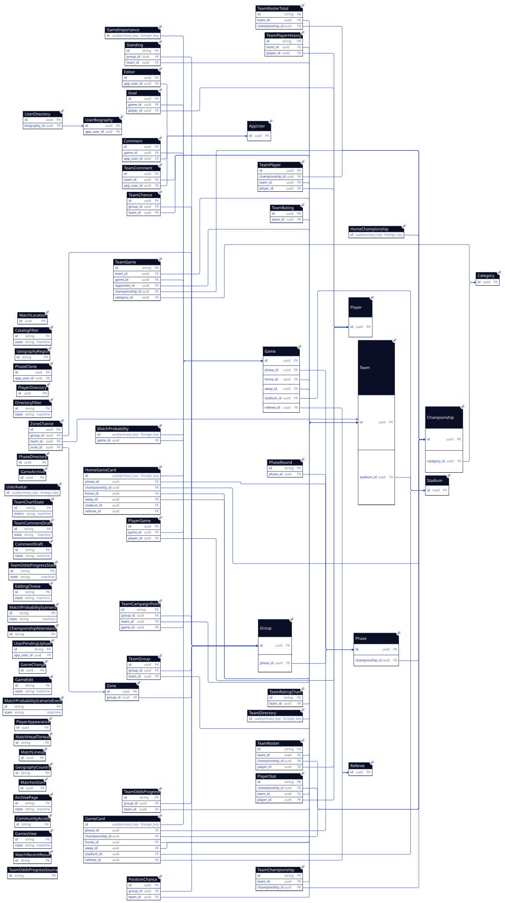
entities: AppUser, ArchivePage, CatalogFilter, Category, Championship, ChampionshipAttendance, Comment, CommentDraft, CommunityAccess, DirectoryFilter, EditingChoice, Editor, Game, GameArchive, GameCard, GameChange, GameEdit, GameImportance, GamesView, GeographyCountry, GeographyRegion, Goal, Group, HomeChampionship, HomeGameCard, MatchHeadToHead, MatchLineup, MatchLocation, MatchProbability, MatchProbabilityScenario, MatchProbabilityScenarioEvent, MatchRecentResult, MatchesStart, Phase, PhaseClone, PhaseDirectory, PhaseRound, Player, PlayerAppearance, PlayerDirectory, PlayerGame, PlayerStat, PositionChance, Referee, Stadium, Standing, Team, TeamCampaignPoint, TeamChampionship, TeamChance, TeamChartState, TeamComment, TeamCommentDraft, TeamDirectory, TeamGame, TeamGroup, TeamOddsProgress, TeamOddsProgressSource, TeamOddsProgressState, TeamPlayer, TeamPlayerHistory, TeamRating, TeamRatingChart, TeamRoster, TeamRosterTotal, UserAvatar, UserBiography, UserDirectory, UserPendingUpload, Zone, ZoneChance
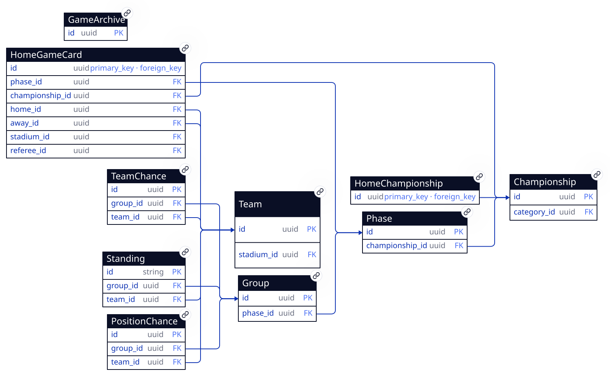
Reads: HomeGameCard heading markers and selected games nested by championship for both feeds; HomeChampionship once per region, in national, continental, world order, each sorted by strength.desc,full_name.asc,id.asc with no cap.
Mutations: none.
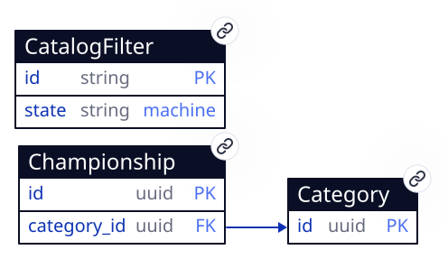
Reads: CatalogFilter by id=eq.catalog, the tab's one search row; inside it Championship by search_key=like.*{q_key}*®ion=like.*{region}*, ordered region_name.asc,name.asc,begins.desc; nested per row, Category by id=eq.{category_id}, empty meaning professional. Catalog and directory reads use the current offset and a forty-row limit, with a one-row next-page probe. The page-value machine updates page state.
Mutations: none through a form. The search is a machine over the tab's row: typing assigns q on every keystroke and picking a level assigns region, so the list narrows as the reader types; nothing reaches the cluster (decision-machines).
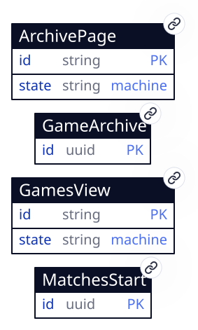
Reads GamesView by id=eq.games for the selected tab, and GameArchive in forty-row pages: played=is.false&kickoff=not.is.null ordered by day.asc,kickoff.asc,id.asc, or played=is.true ordered by day.desc,kickoff.desc,id.asc. Upcoming initializes from MatchesStart, starting seven calendar days before today in Brasília. Previous reaches earlier unplayed fixtures; Next returns through the origin and continues forward, including a shorter first archive page when the origin is not a multiple of forty. Each tab remembers its own ArchivePage position. Previous and Next use the existing archive controls; a one-row probe hides Next at the end. No complete match history is synchronized to the browser.
Date headings precede the first match of each day. Within a day, matches from the same championship stay together under one linked heading. The browser projects kickoff instants into its own timezone and groups each fetched window by that local day and championship. Days remain chronological and kickoff instants stay ordered within each championship; rows show only local kickoff time, teams and score; their full date remains available to assistive technology. Both tabs use the same grouping, recomputed over each visible page so its first match always has day and championship headings.
Kickoff clocks and dates use the browser’s timezone throughout the homepage, match lists, match detail, team fixtures, player appearances and related-match history. A known civil date without a kickoff remains a date, and its clock stays blank. Presentation changes no stored timestamps.
Mutations: none.
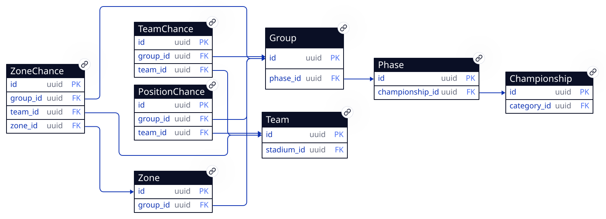
Reads: StageGroup by id=eq.{param.id} with its Phase's name; nested, its Championship for the band, the group's Zones for the columns, and TeamChance, ZoneChance and PositionChance by group_id (and team_id per row), all written by the chances computation.
Mutations: none. The chances move when the computation writes them, and the page follows on its own.
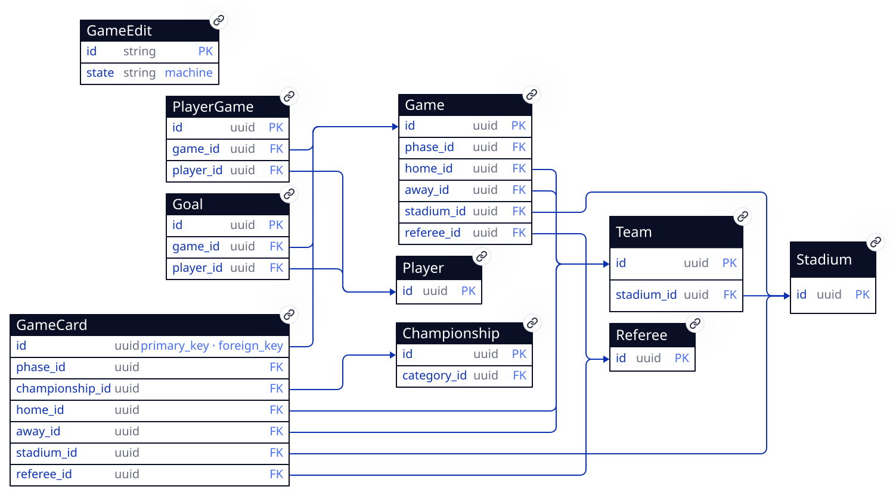
Reads: GameCard by id=eq.{param.id}, the game as it stands; nested, the editor's GameEdit draft by id=eq.{id}, seeded from that game, and the Game row itself, held so the save has the row it updates; Stadium and Referee for the choices: the selected id plus at most forty name matches from the draft’s stadium_q or referee_q; Goal by game_id=eq.{id}&side=eq.home|away; PlayerGame by game_id=eq.{id}, the line-ups a scorer is chosen from.
Mutations: one machine, no form. Typing assigns the draft; Salvar is an update of the Game; Adicionar gol creates a Goal for its side; a goal's Remover deletes it. Every write is the cluster's to refuse (decision-editing), and a refused one keeps the draft. Handlers: both-scored, blank-null, count-or-null, row-id.
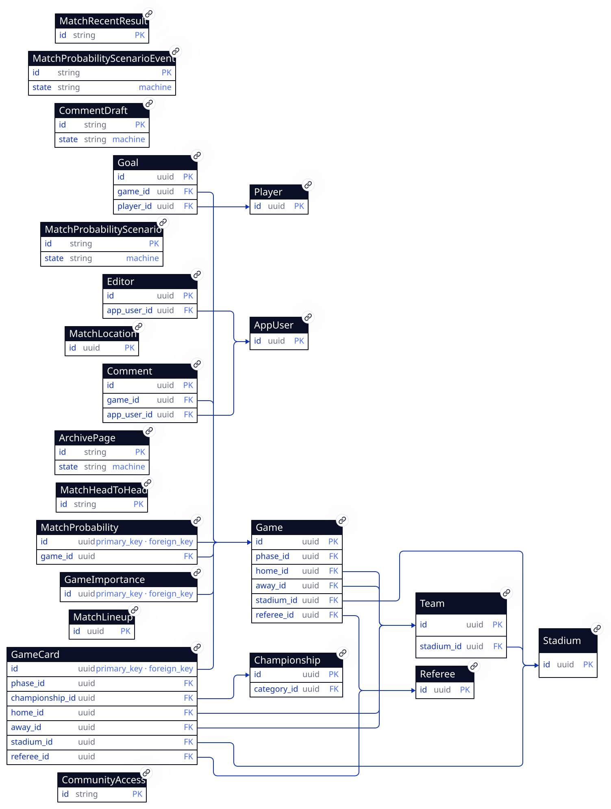
Reads: GameCard by id=eq.{param.id}, the game with its teams', stadium's, referee's, phase's and championship's names; nested, Goal by game_id=eq.{id} (aet.asc,minute.asc) with the scorer's name, and PlayerGame twice, by game_id=eq.{id}&side=eq.home and …side=eq.away (bench.asc,on_minute.asc), with each player's name and position. Every team's and player's name links to their page, and the stadium and the referee to theirs. Last, the game's Comments by game_id=eq.{id} (created_at.desc) with each author's handle, and the reader's CommentDraft by id=eq.{id}, the composer machine's row. Long lists use ArchivePage by list and owner, forty rows per page with a one-row next-page probe. The page-value machine updates page state. Before the goals, MatchRecentResult supplies each side’s five preceding played results and MatchLocation supplies distance and a fixed-origin OpenStreetMap embed when both coordinate pairs exist. After the goals, MatchProbability supplies historical prematch powers and the bounded source-event payload; MatchProbabilityScenario and ordered MatchProbabilityScenarioEvent rows drive the reader’s no-clock what-if chart. MatchLineup replaces the basic appearance read so each row includes offense plus defense contribution. MatchHeadToHead supplies the five prior same-category meetings.
Mutations: an editor — a reader holding an Editor grant, the one row of it they sync — is offered the way to editar. The composer creates a Comment through its machine — no form: typing assigns the draft, posting is a create effect, an acknowledged post clears the draft, and a refused one keeps it and says why (decision-comments). The probability controls mutate only MatchProbabilityScenario and MatchProbabilityScenarioEvent in the current tab: each hypothetical goal or red card has an independent side and minute and can be removed by itself.
The existing loading, populated, scheduled, gone, sending, refused and dark states remain complete. A populated match shows recent form, same-category meetings, lineup contribution and team travel context. Missing coordinates state that location is unavailable. Historical probabilities are explicit when ratings are missing or ambiguous; unknown source-event minutes or an over-limit source snapshot retain prematch odds while withholding the timeline; invalid scenario input never fabricates a graph.
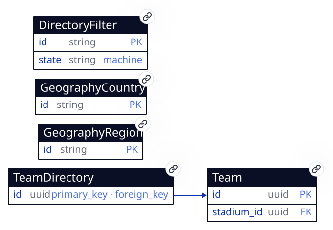
Reads: DirectoryFilter by id=eq.teams holds the team name query, country query and exact region/country selections, and team_type (default club). The filters follow Name, Country, Region, then Team type in reading and keyboard order. The native Team type selector has exactly Clubs and National teams; changing it keeps the other filters and resets pagination. GeographyRegion supplies six translated options in the region dropdown; World is the all-scope sentinel. GeographyCountry supplies all 225 fixed options in the searchable country popover, restricted by selected region and country text; countries without teams remain selectable. Nested TeamDirectory uses search_key=like.*{q_key}*&country_search_key=like.*{country_key}*®ion_id=like.{region_selection}&country_id=like.{country_selection}&team_type=eq.{team_type} and rating.desc.nullslast,name.asc,id.asc. All text searches use ICU primary strength and the existing ı/i and Þ/þ/th mappings, preserving typed input. List and next-page probe use identical predicates with forty plus one rows. Every filter resets pagination; region changes clear dependent country text and exact selection. Searches survive detail/back in the tab. Country and region labels, including championship geography prefixes elsewhere in the archive, read all six translated catalogues.
Stitch project 3684321283098058780, screen c431b5b26c8f4599a9560f4df0fe0efe, defines the accepted directory: name and country search controls, rating after team name, highest latest ratings first, city hidden on phones while country and rating remain visible. Its refinement in screen d2870fb3478842758a4e3fe8b0f260ab keeps the region dropdown, removes the separate region search, and combines country search with the country selector in a searchable native popover. Preserve existing masthead, sidebar, colours, typography, pager and empty/loading styles; the canvas’s extra heading and pager changes are outside this slice.
Mutations: none.
The reader approved compact headings and tables for two distinct page types, with small section links on the championship page. Stitch explored the arrangement in project 3684321283098058780, screen 8e9552fe015b4245b909b3999a1b9a16; the approved inline comparison is supporting evidence. Preserve the established chrome, tokens and responsive table conventions. The main profile contains facts, latest rating, current/upcoming and past championships, and current and past players. Every participation links to /equipe-campeonato/:slug/:championship; fixtures, full relevant group standings, roster and detailed stored zone/position probabilities stay within that pair. Both IDs survive language switches. Current players means recorded in a non-ended championship, including upcoming registrations; it does not assert transfer dates. Registered players with zero appearances remain in a roster. Unsupported club-period or final-phase columns are omitted. Empty participation, tables, roster and probabilities have truthful messages.
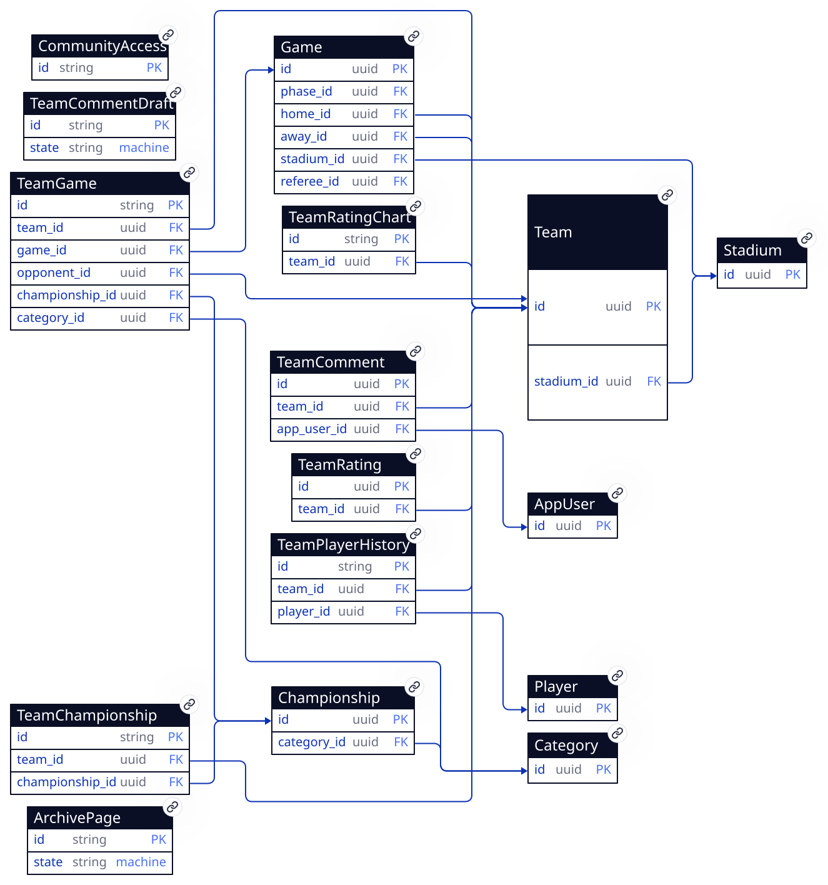
Reads: Team by route ID, its Stadium link and recorded coordinates for an OpenStreetMap link; latest TeamRating plus one TeamRatingChart for the selected 1m/3m/6m/1y/5y/all period. The chart uses at most 600 real observations; preset periods or an exact inclusive date range select visible observations, reset restores one year, invalid reversed ranges are stated, and exact rating rows remain paged. TeamChampionship separates current/upcoming from past participation and links both IDs to the championship page. TeamPlayerHistory separates current/past players and searches normalized names. TeamGame shows upcoming/results across competitions with category and venue filters. TeamComment includes author handles and TeamCommentDraft holds the composer. Each long list uses ArchivePage, forty rows and a one-row next-page probe with stable ordering. Filter changes reset the page.
Mutations: signed-in team discussion through TeamCommentDraft; chart and search filters stay in tab state.
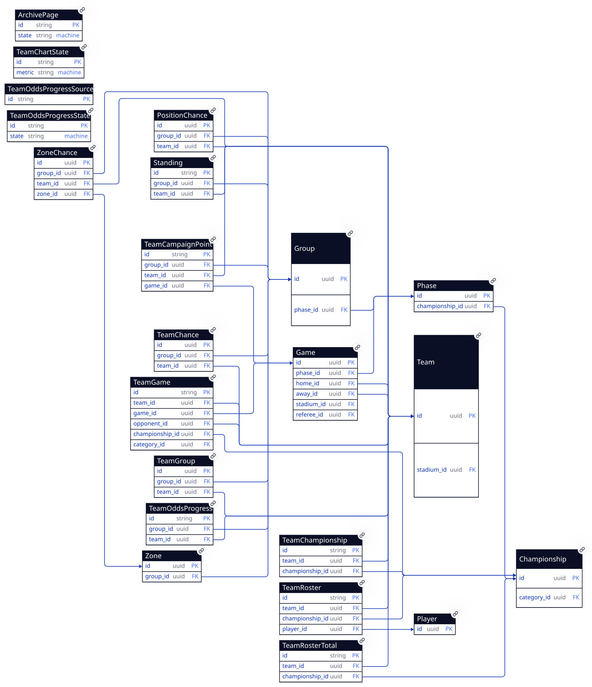
Reads: TeamChampionship by both readable route addresses validates participation, with embedded Team facts. A bounded selector navigates among teams in the same championship. TeamGame fixtures/results use both IDs plus phase and home/away filters. Category is fixed by the championship and has no selector or repeated label on this page. TeamRoster searches normalized player names and uses a closed sort selection; TeamRosterTotal gives full-roster counters and recorded contribution/per-90 metrics independently of the displayed page or search. Relevant TeamGroup groups embed phase/championship; Standing displays their full table with the team highlighted. TeamCampaignPoint is the group's stored campaign, refreshed by the team-chart queue after each result, membership or rule change, and provides up to 800 observations for one two-team chart drawing points and position on their own axes, with paged exact rows and game links; TeamChartState holds tab-only chart selections and payload. TeamChance, ZoneChance and PositionChance show current stored probabilities: a finish-position bar chart over the group's zone bands with the current position marked, a position slider inspecting one position, reach marks and an exact-value table in compact locale-aware odds. The final-position chart accepts an inclusive bounded position range, reports the selected aggregate, states reversed ranges and resets to all positions. TeamOddsProgress gives the recorded position distribution as one stacked chart over shared dates, filterable by zone, inspected by pointer or date slider with each date's zone sums and last result, and selectable as the exact-value table's source; TeamOddsProgressState holds those tab-only selections. A zone named by role is painted with its design token and any other zone with its own source color. Group-free cups and missing data have explicit empty states. All long exact lists use ArchivePage, forty rows and a stable one-row next-page probe. Both readable addresses survive locale switches; filters reset pagination.
Mutations: none.
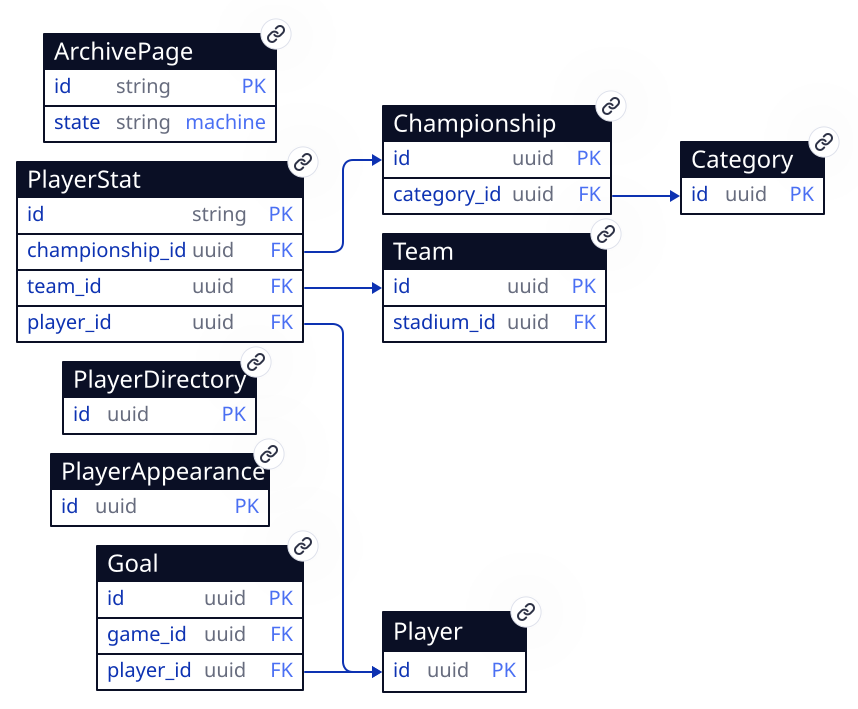
Reads: Player by id=eq.{param.id}; nested, PlayerStat by player_id=eq.{id}, its championship's and team's names written on the line, and PlayerGame by player_id=eq.{id} (day.desc, forty), each with its game's GameCard by id=eq.{game_id}. Long lists use ArchivePage by list and owner, forty rows per page with a one-row next-page probe. The page-value machine updates page state.
Mutations: none.
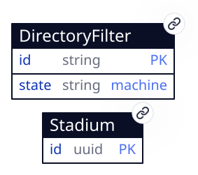
Reads: DirectoryFilter by id=eq.stadiums, the search row its machine writes; nested, Stadium by search_key=like.*{q_key}* (name.asc). Catalog and directory reads use the current offset and a forty-row limit, with a one-row next-page probe. The page-value machine updates page state.
Mutations: none.
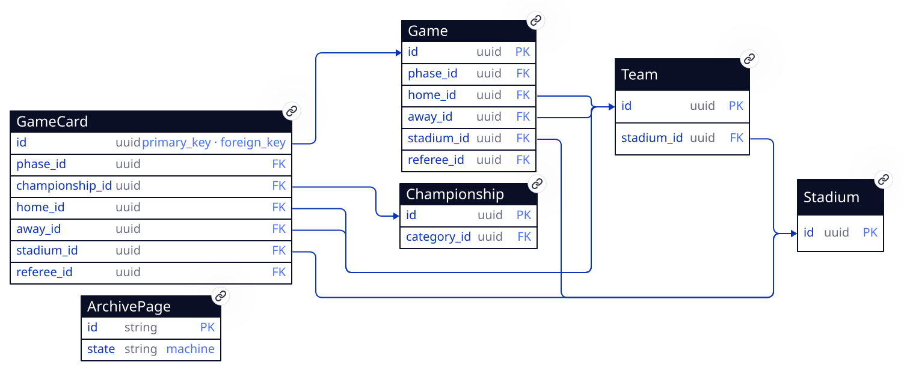
Reads: Stadium by id=eq.{param.id}; nested, Team by stadium_id=eq.{id} (name.asc) — the teams that play there — and GameCard by stadium_id=eq.{id} (day.desc), every game played there remains reachable through its pages. Long lists use ArchivePage by list and owner, forty rows per page with a one-row next-page probe. The page-value machine updates page state.
Mutations: none.
Reads: DirectoryFilter by id=eq.referees, the search row its machine writes; nested, Referee by search_key=like.*{q_key}* (name.asc). Catalog and directory reads use the current offset and a forty-row limit, with a one-row next-page probe. The page-value machine updates page state.
Mutations: none.
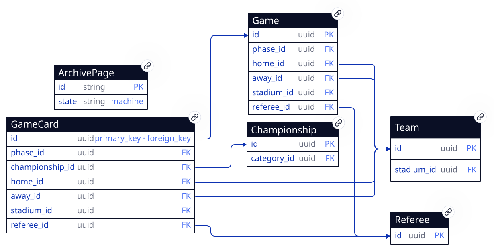
Reads: Referee by id=eq.{param.id}; nested, GameCard by referee_id=eq.{id} (day.desc), every game they refereed. Long lists use ArchivePage by list and owner, forty rows per page with a one-row next-page probe. The page-value machine updates page state.
Mutations: none.
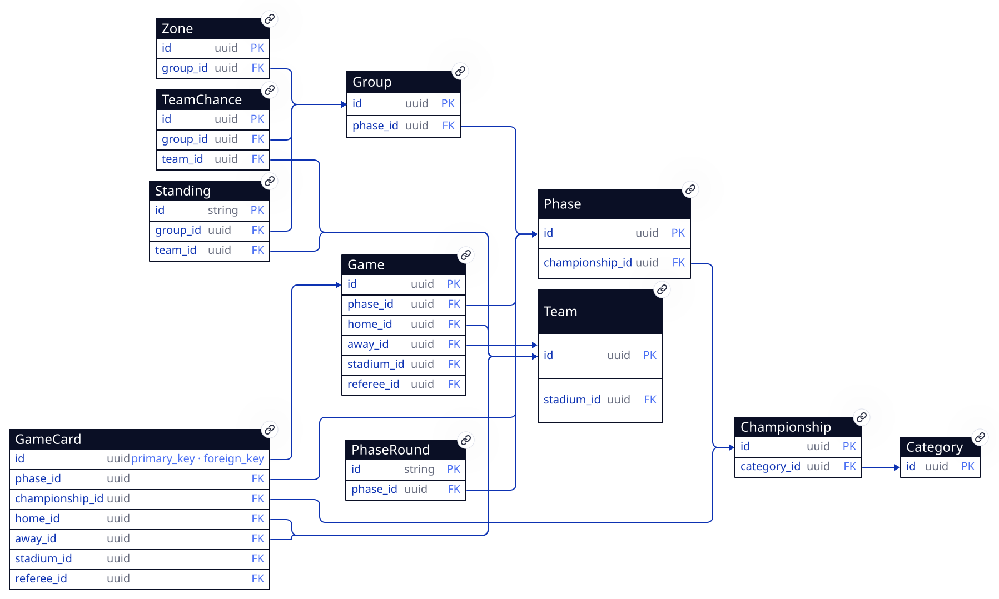
Reads: Championship by id=eq.{param.id}; nested, Category by id=eq.{category_id}, Phase by championship_id=eq.{id} (position.asc, twice: the chips and the sections), Group by phase_id=eq.{id}, Standing by group_id=eq.{id} (position.asc) — the table — and Zone by group_id=eq.{id} (first.asc) for its legend; per phase, PhaseRound by phase_id=eq.{id} and, inside it, GameCard by phase_id=eq.{phase_id}&round=eq.{current} and, when the phase has a next round, …round=eq.{next} — the current round's games and the next's. Every team in a table links to its page.
Mutations: none.
No flow writes the cluster yet: the archive is read-only until accounts and editing arrive.
A half-typed score is refused: given input == {played: true, home_score: 2} with no away score, error.kind == "constraint".
A played game with both scores is kept as given: input == {played: true, home_score: 2, away_score: 1} gives output.home_score == 2 && output.away_score == 1.
A team never plays itself: input.home_id == input.away_id is refused with error.kind == "constraint".
A championship that states no points takes three, one and none: output.point_win == 3 && output.point_draw == 1 && output.point_loss == 0.
A season inside one year reads as that year: input == {begins: "2026-01-28", ends: "2026-12-02"} gives output.season == "2026".
A season across two years reads as both: input == {begins: "2026-08-21", ends: "2027-05-30", region_name: "Inglaterra", name: "Premier League"} gives output.season == "2026/2027" && output.full_name == "Inglaterra - Premier League 2026/2027".
A position outside the eight is refused: input.position == "lw" gives error.field == "position".
A score with one side is refused even on an unplayed game: input == {played: false, home_score: 2} gives error.kind == "constraint".
An unplayed game carries no score: input == {played: false, home_score: 2, away_score: 1} gives error.kind == "constraint".
A game not yet played is kept with no score: input == {} gives output.played == false.
An extra-time score with one side is refused: input == {played: true, home_score: 1, away_score: 1, home_aet: 2} gives error.kind == "constraint".
A shoot-out with one side is refused: input == {played: true, home_score: 1, away_score: 1, home_pen: 4} gives error.kind == "constraint".
Extra time on an unplayed game is refused: input == {played: false, home_aet: 2, away_aet: 1} gives error.kind == "constraint".
A shoot-out on an unplayed game is refused: input == {played: false, home_pen: 4, away_pen: 3} gives error.kind == "constraint".
A played game decided after extra time and penalties keeps all three scores: input == {played: true, home_score: 1, away_score: 1, home_aet: 2, away_aet: 2, home_pen: 4, away_pen: 3} gives output.home_pen == 4.
A season that ends before it begins is refused: input == {begins: "2026-12-02", ends: "2026-01-28"} gives error.kind == "constraint".
A one-day tournament is a season: input == {begins: "2026-07-19", ends: "2026-07-19"} gives output.season == "2026".
A championship keeps the points it states: input.point_win == 2 gives output.point_win == 2 && output.point_draw == 1.
Points outside a single digit are refused: input.point_win == 10 gives error.field == "point_win".
Each of the eight positions, and none, is kept: input.position in ["g", "dr", "dc", "dl", "dm", "cm", "am", "fw"] gives output.position == input.position.
A zone whose last place is above its first is refused: input == {first: 17, last: 4} gives error.kind == "constraint".
A goal is not both a penalty and an own goal: input == {penalty: true, own_goal: true} gives error.kind == "constraint".
Upstream's own ladder is kept: input.sort == "pt,w,gd,gf,gp,g_away,name" gives output.sort == input.sort.
A phase that states no ladder takes upstream's: output.sort == "pt,w,gd,gf,gp,g_away,name".
A key outside the vocabulary is refused: input.sort == "pt,xx" gives error.field == "sort".
A goal counts for home or away and nothing else: input.side == "visitor" gives error.field == "side".
Below the game feeds, the front page keeps the featured 2026 Brasileirão: its top six, Flamengo first with a title chance: output.top[0].team == "Flamengo-RJ" && output.top.size() == 6.
Upcoming fixtures and recent results lead the home page in the server's global rank order, with one localized weekday/date heading across competitions and phase headings exactly at the declared transitions. The browser checks linked championship names, full game rows, team-name and accent-score emphasis and live flag changes, phone and dark desktop layouts, live date edits, clock-only expiry after the three-hour grace period, both translated empty states and restored fixtures: output.upcoming.size() > 0 && output.recent.size() > 0.
The sections appear in national, continental, world order. Each region lists every tournament whose begin date is strictly before today plus thirty days and end date strictly after today minus thirty days. Within a region, upstream’s geometric weighted team strength descends, with full name and id breaking ties. The browser compares the complete ordered links with the projection, then verifies insertion, rating-based reranking, renaming, region changes and expiry on the same open page without a reload; SQL checks exact date boundaries, more than six rows, duplicate memberships, missing and future ratings, empty teams, reranking, expiry, no-op refresh and public read/service write access.
The catalogue lists all thirteen seeded championships, output.rows.size() == 13, and the women's league reads its category while the men's reads the professional default: output.category["Brasil - Campeonato Brasileiro Feminino 2026"] == "Feminino" && output.category["Brasil - Campeonato Brasileiro 2026"] == "Profissional".
Typing input.q == "libertadores" narrows to output.rows == ["América do Sul - Copa Libertadores 2026"], and picking input.region == "continental" with no text leaves the three continental championships.
The accent-search integration check compares result IDs for atletico, atlético, uppercase and decomposed spellings against accented and plain fixtures in every text search, including ı/i, Þ/þ/th and æ/ae equivalences: championships, teams, stadiums, referees, and both editor pickers. Phone and desktop checks preserve the typed query, confirm 40-row pagination reaches all 42 team fixtures, and select a matching picker result. SQL checks cover retained and declared-baseline upgrades, replay with dependent views, and search values updating after a name edit.
A search nothing matches, input.q == "xyzzy", shows the catalogue's own words, output.empty == "Nenhum campeonato com esse nome nesta esfera.".
What was typed survives a trip to a championship and back: after input.q == "brasileiro", opening a championship and returning shows output.q == "brasileiro".
The 2026 Brasileiro reads output.title == "Brasil - Campeonato Brasileiro 2026", its one phase output.phases == ["Turno e Returno"], its one group of twenty output.members.size() == 20, five zones, and output.points == [3, 1, 0].
The 1971 Brasileiro states its own points: output.points == [2, 1, 0].
The 2026 Libertadores has two phases and no groups yet: output.phases.size() == 2 && output.empty.all(e, e == "Esta fase ainda não tem grupos cadastrados.").
An address naming no championship says so rather than showing a blank page: opening input.slug == "missing-address" shows output.empty == "Este campeonato não existe ou foi removido.".
With an English browser at 390px and 1366px, choosing Portuguese from every other supported language opens /?lang=pt-BR. Reloads, catalogue menu navigation and a championship round trip retain Portuguese, its current-language marker and the championship ID. The read-only tests/language-switch.ts regression runs at integrate.
The catalogue answers at /es/campeonatos and /en/championships with output.title["es-AR"] == "Campeonatos" && output.title["en-US"] == "Championships"; on a championship's page the English link keeps the championship, output.path == "/en/championship/" + input.id.
With the reader's system asking for dark, the column is the dark surface: output.column == "rgb(35, 38, 15)".
At input.width in [390, 768, 1366, 1920] no page scrolls sideways: output.scrollWidth <= output.clientWidth on the front page, the catalogue and a championship.
The crawled 2026 Série A recounts to the table golaberto.com.br shows for the same 277 games, every line and every tie in order: output.map(r, [r.team_name, r.points, r.played, r.wins, r.draws, r.losses, r.goals_for, r.goals_against, r.goal_diff]) == input.table.
A position takes the narrowest zone it falls in: the champion's line is output[0].zone == "champion", second to fourth "qualify", and seventeenth to twentieth "relegation".
The 2026 Brasileiro's page shows the recounted table: output.rows.size() == 20 && output.rows[0] == ["1", "Flamengo-RJ", "60"], its first line painted as the champion's.
A result recorded after the fact moves the table with no reload: turning a 0–0 into a 1–0 for the home side gives output.points == input.points + 2 for that side's line, and turning it back restores it.
The games page opens on upcoming games grouped by day and championship, with kickoff times ordered within each group: output.rows.size() > 0 && output.rows[0].day <= output.rows[1].day, and no played game among them. Both lists page through the archive with forty matches per page, no overlap between adjacent pages, and only the applicable Previous and Next controls. Returning to a tab or navigating back preserves its page.
The results tab lists played games newest first with their scores, and the reader's tab returns to the list they left: output.view == "results" && output.rows.all(r, r.score != "").
Upcoming starts with unplayed fixtures from seven days before today, and Previous reaches older fixtures without gaps or duplication. Both match tabs load the next forty archive rows in stable order, Previous returns the original rows, and switching tabs or navigating back preserves each page: output.page >= 2. Every archive read is bounded to forty rows or a one-row next-page probe.
Match dates and clocks follow the browser’s timezone in Los Angeles and Tokyo, including midnight crossings; the local headings match each row, paging remains bounded and the detail page agrees: output.localized. A match without a kickoff retains its known civil date and has no invented kickoff time.
Athletico-PR 2–1 Bahia-BA (round 28) shows its score, its round, three goals by minute on their sides and two line-ups: output.score == "2x1" && output.goals == ["16' L. Esquivel", "26' Erick Pulga", "69' J. Rivaldo"] && output.lineups.all(l, l.size() >= 11).
An address naming no game says so: output.empty == "Este jogo não existe ou foi removido.".
The 2026 Brasileiro's page shows its current round's games and the next's: output.rounds.size() == 2, rounds 28 and 29, ten games each.
A substitute never brought on has no minute off: input == {bench: true, on_minute: 0, off_minute: 90} gives error.kind == "constraint".
The crawled 2026 Série A's appearances and goals recount to the line golaberto.com.br's player table shows for each of its 885 players named once in their squad — games, came on, bench, minutes, goals, penalties, own goals, yellow and red: output.size() == 885, every line equal to upstream's.
A goal recorded after the fact moves the scorer's season with no reload: output.goals == input.goals + 1 on an open player page, and deleting it restores it.
A 2–1 home win yields a card with both names and two team lines, each from its own side: output.lines.map(l, l.result) == ["w", "l"].
Latest stored ratings order all teams descending, with unrated teams last and ties by name/id. Country/region and name searches combine without accents or case; either resets pagination. Part of a name narrows the teams as the reader types: input.q == "athletico" shows output.rows == ["Athletico-PR"].
The main team profile shows facts and separate current/upcoming and past championships and players. output.championships.size() > 0 && output.players.size() > 11.
One team in one championship has only that scope’s fixtures, tables, roster and stored probabilities: output.roster.size() > 11 && output.other_championship_rows == 0. Fixture checks verify home-first names and scores for both venues, no repeated championship names or category controls, single-line ellipsis and full-name hover titles, ordinary scoped team links, and a 390px layout without horizontal overflow.
Championship fixtures. The user requested removal of repeated championship names, clearer home/away presentation, and single-line team names. Their refinement removes category controls and labels because category is fixed within a championship; venue and phase remain selectable. Stitch project 3684321283098058780, screen a52fb90438cd42ab90f393cedcba17ef refines the accepted compact archive layout: localized Home and Away headings appear once above mirrored team columns, with crests beside the score and the selected team emphasized. Actual home goals precede actual away goals in visual and reading order. Date and score link to the match. Team names are ordinary scoped links without arrows or disclosure controls, use all available width, and show ellipsis when truncated with the full name in a hover title. Championship standings use the same name treatment. On phones the date sits above the match row and names never wrap. Existing all-competition lists retain championship context and category filtering.
A disconnected pair says so: output.empty == "Esta equipe não está registrada neste campeonato.".
K. Viveros's page shows his 2026 Brasileiro for Athletico-PR, eighteen goals as upstream counts them, and his games newest first: output.goals == 18.
An address naming no team says so: output.empty == "Esta equipe não existe ou foi removida.".
An address naming no player says so: output.empty == "Este jogador não existe ou foi removido.".
A substitute never brought on came on at nothing: input == {bench: true, on_minute: 10} gives error.kind == "constraint".
An appearance removed after the fact moves the player's season with no reload: K. Viveros's games go from 26 to output.played == input.played - 1 on an open page, and back when it is restored.
São Paulo-SP's ground — Morumbi on the 2006 pages, Morumbis in the archive today — is one stadium, whose page shows the team and its games: output.teams.exists(t, t == "São Paulo-SP") && output.games.size() > 0.
Part of a name narrows the stadiums, and the referees, as the reader types: input.q == "pacaembu" shows output.rows == ["Pacaembu"].
Pacaembu's page lists the games of the 2006 Brasileiro played there, newest first: output.games.size() > 0.
Cléber Wellington Abade's page says he is from SP and lists his 2006 games, newest first: output.games.size() > 0.
Palmeiras-SP 3–1 São Paulo-SP (2006) names Pacaembu and Cléber Wellington Abade, each leading to their page: output.facts == ["Pacaembu", "Cléber Wellington Abade"].
An address naming no stadium, or no referee, says so: output.empty == "Este estádio não existe ou foi removido.".
A signed-in reader posts on Athletico-PR 2–1 Bahia-BA; the comment appears with their handle on their page and, without a reload, on another reader's, above the game's older comment: output.comments[0] == [input.handle, input.body] && output.comments[1].body == input.earlier.
A guest who posts is refused with the composer's sentence, and keeps what they typed: output.state == "refused" && output.body == input.body.
An editor is offered the editor on a game's page and a reader who is not is offered nothing: output.edit_link == input.editor.
An editor corrects Athletico-PR 2–1 Bahia-BA to 3–1 with a crowd of 38 000; the game's page says so without a reload: output.home_score == input.home_score && output.attendance == input.attendance.
An editor adds a goal for a home starter and removes it; the game's goals and his season, open on another page, follow each time: output.goals_after_add == input.goals + 1 && output.season_after_add == input.season + 1 && output.goals_after_remove == input.goals && output.season_after_remove == input.season.
An account that is not an editor is refused on saving, and an editor's goal with a minute and no scorer is refused on adding; each says why, and the edits stay: output.state == "refused" && output.refusal == input.reason && output.home_score == input.home_score && output.goal_minute == input.goal_minute.
The 2026 Série A's chances after round 28: Flamengo leads, his title chance near golaberto's own published 73%, and the zone and position cells sum to whole seasons: output.leader == "Flamengo-RJ" && output.title >= 60.0 && output.title <= 90.0 && output.positions_sum >= 99.0 && output.positions_sum <= 101.0.
A result recorded for a game still to play moves the chances on a page left open, and undoing it brings them back: output.after != input.before && output.restored == input.before.
The 2026 Série A's chances after round 28: every position cell that shows 0 says, in words, whether it can still happen; one the points rule out bears no mark and one still possible but too rare to show is marked *: output.zeros_unsaid == 0 && output.impossible_mark == "" && output.reachable_mark == "*".
A team's page shows its latest rating, a number from 0 to 100: output.rating >= 0.0 && output.rating <= 100.0.
A game still to play shows how much its result matters to each side: output.importance.size() == 2.
A comment of blanks (spaces, a newline and tab, no-break and ideographic spaces) or of 1001 characters is refused: input.body in [" ", "\n\t", "\u00a0\u3000", "a".repeat(1001)] gives error.kind == "constraint".
A guest is offered Sign in and Create a passkey in the strip. Explicit registration keeps the guest’s id and handle. An unknown saved passkey remains refused without creating an account; the separate registration action provides a way forward when a local server no longer has that credential’s record. A registered passkey can subsequently sign in to the same account.
Keys are UUIDs, not upstream's integers. A form mints its key at the boundary where randomness exists, so a retried write is the same write; an auto-increment integer is minted by the store and cannot be. Upstream's numeric ids survive only in upstream's URLs, which this clone does not serve.
Points are the championship's.
Upstream stores point_win, point_draw and point_loss per championship and the archive needs it: a 1985 table gave two points for a win. The defaults are today's.
A championship's season and full name are generated columns.
Every page names championships as upstream's full_name does — region, name, season. Generated at the store, the spelling is one expression and no screen assembles it. The category suffix upstream appends is not in it, because a generated column cannot read another table; the pages show the category beside the name instead.
A table's zones are rows, not a serialized list on the group.
Upstream keeps them as YAML inside groups.zones. Rows preserve their contiguous position ranges and RGB colors. Existing design roles remain valid. The color contract admits only those roles and six-digit hex colors, so importing a color cannot introduce arbitrary CSS. Literal colors retain their hue in the dark appearance with reduced intensity.
Each page fetches its own filtered subset. Public archive collections opt into on-demand delivery. A query waits for its own subset, and embedded references load only matching keys. Electric 1.8 cannot compare the portable scalar domains: those predicates and capped scalar orders use bounded PostgREST reads with changes-only notifications instead. UUID subsets still load exact related keys. Changes-only watches do not download historical snapshots; writes acquire the exact rows and validation edges they need. Catalogs, directories, squads, seasons, appearances, venue and referee histories and comments show forty rows per page. Previous and Next keep the full archive accessible; a one-row probe hides Next when the list ends. Search and region changes reset to page one. Page state belongs to the tab. Selected stadium and referee choices load by exact id; their searchable lists are capped at forty. Existing bounded home and matches feeds remain bounded. Ordered SQL indexes match these reads, with the latest team-rating index reused.
Stitch project 3684321283098058780, screen 96ba2b88581c4126b2122176d47721b5, refined the compact Previous / Page / Next footer within the accepted design. It wraps on a phone and retains DESIGN.md tokens and the existing columns. Illustrative totals, page jumps, extra columns and widgets are excluded.
Restore the archive’s team badges and country flags beside their names. Use the original 15-pixel CDN assets in match lists, standings, team directories, championship headings and country facts. Imported team UUIDs retain the original numeric ID; development fixture UUIDs map to their original archive IDs, retaining the badge when a team is renamed. New teams use the original neutral badge. Pure terminal renderers produce decorative images with empty alternatives; names stay readable when images cannot load. Preserve the accepted compact layout, full names and existing colors. Stitch project 3684321283098058780, screen 3756c9310aaa459ebcbdf0385ea57c5d, confirmed the compact 15×15 crest and flag placement; only that image restoration is carried forward. Each championship stores whether games show team countries (show_country, default off); enabled competitions show the home and away team's own country flag alongside their badge. Game lists and opponent lines join the championship flag setting and the teams’ countries through their existing foreign keys, including bounded home and matches feeds. A flag or country edit updates its owning row and open lists immediately; it does not rewrite games, cards or opponent lines. Stored names still refresh when their source names change. Badge slots remain 15px in mirrored fixed columns closest to the score: home name, optional flag, badge, score, badge, optional flag, away name. Full names wrap on phones; unknown countries leave an empty flag slot and failed images preserve readable names. Stitch refinement 50515d290f3e4e8a8e49cda741813c6a preserves the accepted compact archive layout.
Use equal gaps between team names, flags and badges. The user's equality requirement refines the accepted icon rails: use the existing --sp-sm token (4px) both between each 15px badge and optional 15px flag and between the icon rail and adjacent team name in game lists, opponent lists and match scoreboards. Keep the badge closest to the score on both sides and allow full team names to wrap on phones. Hidden flags leave no extra gap. Stitch project 3684321283098058780, screen 3f0a7cfe957d479a966698b230b6a576, confirms this equal-gap refinement; only the icon gap is carried forward.
What games already say is not stored again.
Upstream's referee_champs duplicates the referees of a championship's games; it is not kept. A group's games are its phase's games between its teams, as upstream derives them. Upstream's cached importance columns belong to the chances turn and are not modelled until then.
A result is whole or absent.
Upstream defaults both scores to 0 and trusts played; a 0–0 that never happened is one mistyped checkbox away. Here the scores are optional and one row invariant ties them to played, so the table the next turn derives never reads an unplayed game.
A game's day is a date; its kickoff is an instant, when known.
Upstream keeps one datetime and a has_time flag, and renders an hourless game's instant in the reader's zone, which moves a game stored as midnight UTC to the previous day for every reader west of Greenwich. A date has no zone to be read in; the instant exists only when there is one. The two can disagree when both are typed, so the editing turn's form derives the day from the kickoff and the ground's zone rather than asking for both.
A goal and an appearance name a side, not a team. Upstream stores a team id on each, and nothing ties it to the game's two teams: an editor who corrects a game's home team leaves its goals counting for a team that did not play. A side, home or away, is one of the two by construction, and the team is read through the game.
The archive's shape first, one page family per turn after.
This compile has entities and invariants only. Comments and the people who write them, crests, the edit history and the chances each arrive with the turn that shows them, so no entity exists that nothing reads. The standings turn inherits a dependency set, not a trigger: a table is a function of the group's games, its team_group rows, its phase's sort and bonus, and its championship's points, so a change to any of them recomputes it, and its sink is not server, or it would feed its own input.
The archive's own identity, stated whole, with no preset.
Every token the default preset would supply is overridden in DESIGN.md with a value read off upstream's stylesheet or the live site, so nothing of the preset survives. Two departures are argued there: the column widens from 790px to a fluid 960px, and the link brown darkens from #963 to #784d1e to clear 4.5:1. A dark twin exists where upstream has none, keeping the hierarchy by value, not hue.
The masthead is the screen's, the strip is the terminal's.
The terminal draws the navigation strip before the screen's mount and owns it — its labels, its current-page mark, its future sign-in chrome. The wordmark and the language switcher are the screen's markup, written once (#Masthead in screens.cue) and placed by CSS into the band the body reserves above the strip, so the page reads masthead, strip, band as upstream's does without an app reimplementing navigation.
One layout that bends, not four. Above 720px the page is content beside a side column in a column up to 960px wide; below it the side column follows the content, the masthead and band shrink, and the strip scrolls sideways on one line rather than wrapping. A table keeps its identifying columns on a phone and drops the least informative ones. No page scrolls sideways at 390, 768, 1366 or 1920px, and the acceptance driver measures it.
Six football traditions: pt-BR, es-AR, en-US, then it-IT, de-DE, fr-FR.
An explicit Portuguese choice carries ?lang=pt-BR on the unprefixed address and subsequent navigation, including the menu, row links and navigate forms. The terminal retains that query on translated routes so browser language preferences cannot override it on reload. Canonical and alternate metadata keep their query-free addresses. The switcher keeps the current route and its row ID at desktop and phone widths; the existing masthead layout is the accepted oracle.
Brazil's is the archive's own language and served unprefixed. Argentina's Spanish is the River Plate's and South America's, and it takes the bare es a reader's browser sends. English uses the American regional tag so numeric dates use month/day/year. Italy's, Germany's and France's follow, each at its own address (/it, /de, /fr), in its own football vocabulary. Six names do not fit beside the wordmark on a phone, so below 720px each language shows its code. Rows are not translated: a championship is named as its own country names it, and the level of play is a catalogue word chosen by the row's own value ({msg[region]}).
Every interaction is a machine; no screen has a plain form.
A form is two implicit states with no timeout, no coordinated rollback and nothing a checker can walk. A machine states its states, its arrows and the effects it emits, the terminal's walk fires every arrow, and a write it makes is answered with sync_ack or refused where the chart draws an arrow for each. The catalogue's search is the first: two arrows over a tab row. Every later write — a comment, an editor's correction — is a machine whose effect is the write.
The catalogue's search is a tab row, written by a form on change.
Every text search uses the generated search_key column with PostgreSQL 18 LIKE and ICU primary-strength collation (und-u-ks-level1, nondeterministic), mirroring the linked upstream utf8mb3_unicode_ci rule for case and accents. Both atletico and atlético match both spellings, including uppercase and decomposed Unicode. This applies to the championship catalogue, team/stadium/referee directories, and both editor pickers; pagination probes use the same predicate. Names, uniqueness and display ordering retain their original spelling and collation. Queries retain what the reader typed and existing bounded server reads; no client-only filtering or layout change. The additive 025 migration adds keys on fresh and retained databases. Keys fold ı to i and Þ/þ to th before the original ICU collation compares them; æ remains equal ae. Tab filters and editor drafts use the same mapping through the search-key handler for query predicates, while inputs keep the typed spelling. PostgreSQL custom ICU rules force tertiary strength, so the original primary-strength collation is preserved. The original search_name columns and their version views remain available. The new keys follow every name edit without changing displayed spelling.
Filtering is a live query over the championship table interpolating the search row's columns; a machine over that row assigns them from the controls' own events, so every keystroke narrows the list and nothing leaves the browser. The catalogue is rebuilt on every visit (keep: 0), so the search a reader returns to is the row's, which is the claim. A URL parameter would be the alternative; it would make a search shareable, but the archive's catalogue is short enough that a shared search is not worth an address.
A championship shows every phase, stacked, with chips that jump to each. Upstream shows one phase at a time behind buttons. Phases are rows, and a selection machine's states are fixed when the program is written, so a tab per phase would need a machine per championship shape. Stacked sections under anchor chips show a league (one phase) and a cup (several) the same way, and a phone reads them as one scroll.
The archive a fresh cluster starts from is real. The seed rows are championships, phases, clubs, stadiums and zones as golaberto.com.br records them — the 2026 Série A's twenty clubs, its zones, the 2026 World Cup final — so every screen and every screenshot reads as the archive does. Games and line-ups are crawled from the same pages, so derived tables can be checked against the original. The dataset is a generated SQL fixture outside CUE compilation, copied into fresh-database migrations and inserted in batches. Database domains, constraints and validation triggers still check every record; repeated initialization preserves existing IDs. Regeneration is checked at the test gate. Retained archives are never reseeded by this fixture.
A table is recounted from its games, never typed, and kept as rows. Upstream computes a table in Ruby on every request. Here the terminal cannot sort by a ladder of eleven keys or sum across a collection, and a table is read on every visit to a championship, so it earns materialization: one stream, absolute recounts, a live sink. The price is a sink that trails a game's edit by the stream's latency, a line that outlives a team removed from its group, and an old group that keeps counting a game or member moved out of it — the change event carries only the row as it now stands — until the editing turn, the first writer that can move one, gives the stream the before-image and a delete.
The stream recounts every group once when it starts. Change capture hears writes, and the archive's seeded games were written by the database's first migration, before anything listened. A one-shot input beside the bus recounts every group at start, so a fresh cluster shows tables, and a stream that restarts after missing events repairs itself.
Head to head is the mini-league's points.
Upstream's head key builds a sub-table among the teams level on points and compares them within it. Here the key is the points each earned in games against the others level with it plus its add_sub, which is that sub-table's first criterion, and, as upstream, it separates no one in a group of two or when every team is level; two teams level on it fall through to the next key of the ladder, where upstream would continue within the sub-table. No 2026 table in the archive's sample needs the difference.
Kickoff instants use the reader’s clock; civil dates keep their precision. The archive stores kickoff instants and retains Brasília civil dates for server selection, ranking and historical compatibility. Presentation derives local dates and HH:mm clocks from the browser’s timezone, including daylight-saving transitions. Shared headings and match details use that same local date. A match without a kickoff has its known civil date and a blank clock. The terminal owns timezone conversion; pure app renderers receive civil dates for weekday labels.
A phase's current round is derived, beside the tables. Upstream opens a phase on its current round. A machine cannot start from a foreign fact, so the round a page opens on is a row a stream of its own writes, one per phase: the latest round with a played game (the first while none is played), and the next round that exists. The championship page shows those two rounds' games; every round is the games page's. Its own stream rather than a second sink of the standings: a phase's rounds depend on its games alone, a phase with no groups still has rounds, and a phase with many groups would otherwise post the same row once per group.
Every list of games is one row, written once.
A game in a list reads the same on the games page and in a championship's rounds: when, which championship, who, the score. It is one CUE fragment (#GameList), its teams' and championship's names embedded in the read rather than looked up per row, so a forty-game list is one query.
Every reader is a guest the moment they arrive.
A public row is readable by the signed-in role, and the terminal, with the auth plane on and sign-in not required, mints a guest for every reader silently: no gate, no ceremony, no screen. So the archive reads like a website to someone who never signs in, and the accounts the comments turn needs are the same identity, promoted by a passkey, rather than a second system. The cost is a row per reader: every new tab mints a guest, nothing reaps them, and a crawler that runs scripts mints one per visit. The alternative — public readable by the anonymous role, a guest minted only at the first write — would need the platform to grant anon, which it does not; the comments turn, which gives a guest something to keep, owns reaping the ones that never wrote.
Every screen reads synced tables, filtered on the reader's side.
A region the terminal cannot decide on its own — a nested embed, a home-or-away filter — becomes a read only the server can answer: not there offline, re-read on any change to its tables. So what a list needs from several tables is written into one by a stream: a game's names into its GameCard, a team's view of it into a TeamGame, and the day a player's games sort by onto the appearance, by a trigger in the database (services/database/sql/010_game_days.sql), since a day that moves must move every appearance with it in one transaction. A materialized view would hold the same join, but the change publication does not carry one, so it could not be synced. The cost is one more row per game and two per team, and a list that shows a name a moment after it changes rather than at once.
A player's season is recounted, never typed. Upstream computes its player table on request; here, as the tables are, it is rows a stream writes from the appearances and goals, per player, championship and team, so every page that shows a season agrees with every other. The recount is checked against upstream's own table for the 885 players of the 2026 Série A named once in their squads, every column. Two players of one name in one squad cannot be told apart by a line-up, which names a player and does not identify one; the crawl that seeds them merges them, and the check leaves them out.
A substitute who never came on is in the line-up. Upstream lists the unused substitutes with the line-up and counts them — its "E" column is games played plus games on the bench — and a booking on the bench is a booking. So an appearance says whether it was only a bench, and a bench appearance has no minutes.
Comments are a signed-in reader's, written by a machine.
Upstream lets a logged-in user comment; here a reader is a guest from the first page, so commenting is what a passkey is for: the guest's token says it is a guest, and the comment table's write policy refuses one. Signing in keeps the guest's identity — mecha's auth service binds a passkey registered from a guest's session to that guest — so nothing a reader did as a guest is orphaned. The composer is a machine over a tab row, not a form: it states its writing, sending and refused states, its post is a declared create effect the terminal sends, and a refusal is an arrow, so what was typed survives it. A handle is a byline, so AppUser is readable by everyone; the author column is named for its table so the byline is an embed the reader's own store answers. Comments are not edited; an author may delete their own.
Editors correct games through a machine; the cluster decides who is one.
Upstream gives an editor role the run of the archive. Here the role is an Editor grant row, given out of band; the game's update and the goal's insert and delete admit a signed-in account holding one, and nothing else — the policies, not the screen, are the rule. The grant syncs to its holder alone, so the game page offers the editor exactly where a write would land. The editor is a machine over a tab draft seeded from the game it is nested in: no form, a save is one update, a goal is added or removed as the row it is, and a refusal keeps the draft. A goal changes the goal lines, the table and the players' seasons through the streams that already recount them (decision-standings-derived, decision-player-stats). Whether the game was played is not the editor's to tick: the game is played exactly when both sides have a score, so a typed score decides it. A draft outlives leaving the page within the tab, as the comment draft does, and a save writes every column it holds, so the last editor to save wins. Left for later: extra time and penalties, the date and kickoff, a goal's penalty and own-goal marks, and whether a side's goals add up to its score.
Chances are upstream's odds estimator, odds-rust itself compiled to Wasm.
Upstream computes each group's odds in odds-rust: a 20 000-season importance scout, a 100 000-season matched pool with exact point PMFs, and a rare-position search (proofs, conditioned and importance sampling, joint caps, tilts, witnesses, rescues, reconcile) that certifies probabilities down to 1e-14. Here that crate is compiled to a WASI module, computations/golaberto-odds.wasm, built by tools/odds-wasm. The chances computation is one JavaScript module run by mecha's compute service over a DuckLake published from the tables it reads: it builds each live group's request as Rails' Group#odds does and asks the module once per group, one group at a time, each with a seed hashed from the computation's name and the group's id. Each game's expected goals come from the latest TeamRating before it, by Rails' formula. Results land in four live sinks. CDC invalidates computations by their declared reads, including derived inputs such as ratings and standings; probability outputs are not inputs to this computation.
Upstream funds a last rare-position tail with a share of the wall time its earlier stages took, so with it a response hangs on the machine's speed; the module runs with it off (upstream's RUST_ODDS_RARE_TAIL=0), and its response is the native one under that setting byte for byte, the seed's alone. What the tail adds is estimates under 1e-11 percent where the earlier stages found none, far under the cent the cells show; the cost is that such a cell the tail would have proved reachable by a witness season stays undecided.
A cell that shows 0 says whether it can still happen, as upstream's odds_reachability does: odds-rust labels each final position impossible (proved by points or ranks), reachable (an estimate above zero or a witness season) or undecided, and a zone is impossible when each of its positions is, reachable when any is. The computation writes that as reach on the PositionChance and ZoneChance rows that round to 0 — a finished group's other positions are impossible — and the chances page and the front page's title column mark a reachable 0 with * and an undecided one with ?, an impossible one unmarked, each saying its status in words. Upstream's other use of the status, a zone shown as exactly 100 only when every position outside it is proved impossible, has no counterpart: cells here are rounded to the cent, and a 100 is a rounding like any other.
Ratings are upstream's, refit by a computation. Upstream fits SPI team ratings (an iterative fixed point with time decay and shrinkage), snapshots them per day as historic ratings, rates players from every minute they played and scores the ratings' predictions (/eval). The ratings computation asks the same Wasm module for all four and shapes the rows as upstream's writes left them — a team's last snapshot of a day, to six decimals; a player's rating per 90 minutes, in f32 — and writes TeamRating, PlayerRating and RatingEval. A team's page shows its latest rating; a player's shows his. The planner yields one Wasm job at a time: historic ratings, each phase's evaluation, then player ratings using the historic result. Only the current job's input is materialized; ordered results retain the existing finish contract. Historical snapshots remain complete because chances need the rating before each game's kickoff. The compute lake limits DuckDB to 512 MiB and two threads, with temporary spill files on disk, so background work cannot consume the whole development VM.
Homepage loading reads only the forty selected HomeGameCard rows, twenty fixtures and twenty results. Selection reads the declared fourteen-day windows from one covering kickoff index alone and each candidate team's latest rating from a one-row-per-team table that triggers keep in step with TeamRating, so a cold read touches about seventy data pages: on the full archive, a few hundred candidates, about a hundred milliseconds cold and ten to twenty warm. Migration 047 replaces the stored projection, its refresh and GameCard's rank columns with the view; applied migration history is preserved.
The front page follows upstream's quality selection and date/phase presentation. Following the referenced controller, each feed selects the strongest twenty games with known kickoffs before arranging them for display. The requested upcoming window runs strictly after the actual clock minus three hours and strictly before the actual clock plus fourteen days. Results mirror upstream's two-sided played-game window, extended to fourteen days on either side of the clock minus three hours. Played games with future kickoffs are eligible as in that controller. The quality clock is the actual clock minus three hours: the harmonic mean of the latest known team ratings, multiplied by one plus mean match importance, is halved for each day's absolute distance from that clock. Missing ratings and importance contribute zero. Weighted quality chooses the top twenty per feed; equal qualities retain raw-quality descending, kickoff descending order, with id as a deterministic final tie break. The server rank sorts Brasília dates ascending for upcoming and descending for results, then the phase/date's strongest candidate quality descending, kickoff ascending or descending respectively, quality descending and id. Equal phase strengths retain kickoff order across phases. The browser groups the same selected rows by reader-local date, ascending for upcoming and descending for results, preserving server rank within that local day. Highlighting mirrors the controller independently for each feed: the union of the five displayed games with greatest raw quality and one game with greatest weighted quality for each phase/Brasília date among all eligible candidates. Overall raw-quality ties retain display order. A tied phase/date maximum chooses the last candidate in the raw-quality descending, kickoff descending, id ascending input order, reproducing upstream's greater-than-or-equal replacement with a deterministic id tie break. The phase/date winner is chosen before the twenty-game cap; if it is not selected, another displayed row is not promoted in its place. The selected games use semibold primary-color team names and bold theme-accent scores and separators against normal-weight secondary-color ordinary names and scores, following the accepted Stitch refinement. Kickoff times and backgrounds keep their existing styles. The screen reads one flat list in server rank order. Each date appears once across competitions in its feed, followed by a linked championship and named phase heading on the first row and each date/phase transition. A phase may appear again on another day or when tied phase strengths interleave. The browser projects each kickoff into its local day and recomputes date and phase boundaries over the displayed order. Row links retain accessible dates while showing only kickoff time, full team names, badges and score. The read owns ranks and highlights; local headings are display projections. Edits, removed or restored kickoffs and the clock’s passage show on the next read. Screens own no timer or fetch. The featured season and archive follow the feeds; empty windows remove old rows and show the translated message.
The user requested all tournaments in the rolling thirty-day window, ordered by the original Championship#avg_team_rating formula. The user’s follow-up orders the region sections National first, Continental second, World last, since National usually has the most tournaments. Preserve the accepted section and link styles. Stitch project 3684321283098058780, screen 2cbae711356b4c7a8c7b013e3ccbf796, confirms the requested region order. Remove the six-row cap and use strongest-first ordering inside each section. No new visual choice is needed. The strict begin/end comparisons follow the user’s requested window; the upstream controller’s inclusive boundaries are not carried forward.
The user's explicit request to match upstream ranking and grouping supersedes the earlier championship-first hierarchy. Stitch project 3684321283098058780, screen 71371e00df874a089a768689d8b4ed21, refines the accepted frame to date-first feeds with phase subheadings. Established DESIGN.md tokens, full championship and team names, badge rails and independent empty states remain the oracle. Illustrative fixtures, extra widgets, venue columns and generated theme tokens are excluded.
Emphasize the teams readers scan for, with the score as a warm accent. The user accepted Stitch’s team-name emphasis after comparing it with score color alone. Important home team names use primary text (#000000 light, #e8efd6 dark) at weight 600, and scores and x separators use the existing accent (#784d1e light, #e0b07a dark) at weight 700. Ordinary names, scores and x use secondary text (#4a4a1f light, #c3cc9a dark) at weight 400. This provides a visible anchor for upcoming games whose score is only x and applies equally to results. Preserve the existing Arial stack, type size, centered score column, zebra backgrounds, time and date/phase hierarchy, full names and equal 4px icon/name gaps. Names may wrap naturally on phones. No score frames, outlines, stars, legends, row tints or leading edges. Stitch project 3684321283098058780, screen cdc4b1c5ac72476290b2b13716713b50, is the accepted oracle: the consultation included prior rejected designs, both themes, mobile constraints and the observed 23-of-40 highlighted density. Screens 163c5548bc9e4e71810ed67a21fb260b (time emphasis) and c383c1f770d74a4ea71d6849d408ac30 (tonal row contrast) were considered and not selected. Score colors exceed 4.5:1 contrast on both themes’ zebra backgrounds.
The user requested less repeated dates because most home games share a day. The accepted Stitch refinement now places one date heading per feed/day across all competitions, then phase headings. The user’s weekday refinement adds the full weekday in the page language followed by a comma and a locale-formatted numeric date, for example Saturday, 10/03/2026 in English or sábado, 03/10/2026 in Portuguese. The terminal projects each kickoff into the reader’s local civil day. The pure weekday renderer derives the weekday prefix from that day and the catalogue’s weekday names, without consulting a clock. The terminal formats the adjacent numeric date in the selected language: month/day/year in English, day/month/year in Portuguese, and each other locale’s ordering and separators. The same selected rows are grouped by local day, with server rank retained within each day. Both feeds update the heading and weekday together when live dates change. Stitch project 3684321283098058780, screen 1dfafec90e224925b2eac8749ea56c90, confirms the requested refinement within the accepted light/dark/mobile layout; retain its existing typography and natural wrapping. The kickoff column remains 3.5em on desktop and phone; individual game links retain their dates for assistive technology. An exact-key live read moves the shared heading to the first remaining row after a date edit or expiry without a reload.
The user requested that shared dates be visually distinct from games. Stitch project 3684321283098058780, screen 28196bac2ef547119c4b0327c655acda, refines the existing theme into a full-width date section bar: band background and ink, a four-pixel date-bar leading edge, bold 13px uppercase Arial with .03em tracking, four-pixel vertical and eight-pixel horizontal padding. A twelve-pixel gap precedes later days. Keep localized weekday/date text, heading levels and natural wrapping; numeric date order follows the selected locale. Apply the shared treatment on Matches and home highlights; championship headings and game rows retain their styling. The canvas's illustrative match counts and unrelated layout changes are outside this slice.
The imported archive exceeds the seed dataset. Game-card and player-statistics startup passes enumerate championships and reuse their scoped event paths, so a startup response cannot aggregate every game or appearance in the archive. The per-championship batches retain the existing absolute recount and replay behavior.
When the first selected row changes, date and phase headings are replaced immediately, without an outgoing animation repeating them. The local archive's PostgreSQL data directory lives inside its mounted volume, so recreating the development services preserves the imported fixtures. The retained-volume upgrade check verifies the running data directory is covered by a mount.
The user keeps the ratings and odds worker disabled in the default local launch. Pages read stored ratings, odds and game importance; edits continue through the fixture, result and standings pipelines. The acceptance gate enables compute only within an explicitly named disposable check/test stack and stops it after the browser suite. The bounded planner remains available for future offline work; full-archive compute completion is not a condition of the local route audit.
Escape hatches: authenticated native media. The app media container adapts the existing blob upstream with authenticated immutable uploads and SQL-owned attachments (hatch-native-media). Public reads expose only attached normalized image styles. The existing Wasm odds module remains upstream's odds-rust (decision-chances).
Search machines preserve typed values and separately map ı → i, Þ/þ → th for the server predicate. The same mapping is used by stored keys. Case, accents and æ/ae remain ICU's responsibility. shell/handlers/search-key.js.
A query with dotless i and either thorn case produces i and th; empty input stays empty, unrelated letters and accents keep their spelling. Browser integration tests cover every search and pagination.
A pure forty-row step from the current offset updates the offset, next-page probe and displayed page together, clamped at zero. Upcoming partitions pages around its remembered origin so the partial oldest page returns to the same next page. shell/handlers/page-value.js, listed in campeonatos, equipes, estadios, arbitros, equipe, equipe-campeonato, jogador, estadio, arbitro and jogo.
An unset optional choice — a select's empty option — is no value: the game's reference is cleared rather than pointed at an empty string. shell/handlers/blank-null.js, listed in editar's files.
A typed score, minute or crowd, as the integer the game stores; a cleared box states the count is unknown. shell/handlers/count-or-null.js, listed in editar's files.
A game is played exactly when both sides have a score — the game's own check — so a typed score decides it from itself and the other side's, already in the draft. shell/handlers/both-scored.js, listed in editar's files.
A guard: a click removes a goal only when it names one — a goal's remove button carries its id as its value and has no id of its own, while every other control has an id (a select's value is a uuid too). shell/handlers/row-id.js, listed in editar's files.
The browser tab carries a bold white G on the archive's deep olive #474d0f, with a gold #f5c542 crossbar echoing the Gol/Aberto wordmark and a goal mouth. The open counter and five-unit strokes keep the letter recognizable at 16 pixels; a four-unit corner radius softens the square without adding decoration. The mark is the same in light and dark browser chrome.
Stitch project 3684321283098058780, screen 2990637094354320a681c9a59b396c51, compared the G/trave direction with a goal-frame alternative and recommended the G for recognition at small sizes. The adopted vector refines that direction with a clear open center. branding/favicon.svg is the master; branding/favicon.ico contains 16, 32 and 48 pixel renditions. Pronto declares both as public statics and writes an absolute icon URL into the shared entry document, including localized and prerendered pages.
Verdict: approved. The archive reads as golaberto.com.br does — championships with their tables and rounds, games with their line-ups, teams with their games and squads, players with their seasons — in three languages and two appearances, from a phone to a desktop, every row a real one from the site; the player table of the 2026 Série A is reproduced for 885 players. Stadiums and referees have their pages too, over a complete 2006 Brasileiro whose games the archive records with both, and whose recounted table is the real one. Accounts and comments, editing and the chances are the next turns' (decision-increments).
Verdict: approved. The identity is the site's own, stated whole in DESIGN.md with no preset (decision-design-identity); the teams, team and player frames carry it unchanged — the band names the team or the player, the facts are the game page's definition list, a team's games are the games list's row seen from its side with the result as the table's form dot, seasons and squads are the line-up's grid — and a club in a table is a link in the row's own ink, so the zone colours keep their contrast. The stadiums and referees directories are the teams directory by construction (one fragment), with the column a phone drops named rather than positional, so a referee keeps where they are from at 390; a stadium's and a referee's pages are the team page's frame — the band, the facts as a definition list, the home teams as the catalogue's chips, the games list reused unchanged — and a game's stadium and referee are links that print a dash when there is none. Visual lint runs at 390, 768, 1366 and 1920 in both appearances. Reservations: 17 stadiums the 2006 pages name have no city, which the archive's game pages do not state; positions print as the archive's codes (fw, dc, cm), as upstream's line-ups do; a hyphenated club name may break across lines in a team's games on a phone; the wordmark's stroke and shadow, the zone swatch and the group column minimum are literal lengths in the stylesheets rather than tokens, kept as clone-fidelity values; the dark wordmark inverts to dark letters in a light outline, a departure from the site argued in DESIGN.md.
Verdict: approved. Reads are live regions; the championship page's twenty members arrive as one embedded read rather than twenty. The catalogue's filter stays one the tab's store evaluates (a like pattern, not in.()). Every reader is a guest (decision-guest-reading), whose row cost the comments turn inherits.
Verdict: approved. Evidence at integrate: 29 constraint pairs in the cluster's Postgres, each arm of each row invariant violated alone (the bench rule's two arms included); 35 cases walked by tests/acceptance.ts in a browser, among them a goal recorded and an appearance removed after the fact moving a player's season on an open page; visual lint at four widths in both appearances. At test: the streams' transforms over crawled data — the 2026 Série A's table and its 885 players' seasons equal to golaberto.com.br's, every column — and the cards, lines and rounds a game yields. Known gaps, owned by the editing turn: a correction that moves a goal or an appearance to another player, or a game to another phase, recounts only where it moved to (decision-standings-derived). Coverage that is happy-path only: accept-languages, accept-dark and accept-screen-range assert what renders and have no refusal to test; accept-championship-gone covers the one unhappy road of the championship page. The goal-side rule is structural (a side, not a team; decision-sides), graded by test-side.
bounded source rows become a pure chart payload, with comparison and accessible source tables
Team functionality oracle. The user requested inspiration from golaberto.com.br, keeping our approved visual design. Stitch project 3684321283098058780, screen b29b07ab96df4f8798169552a25af2a4 refines compact analytical sections: rating ranges and exact history; location; all-competition games with categories; searchable current/past players and discussion. Championship scope adds team switching, phase/home-away filters, searchable sortable roster with aggregate totals and recorded contributions, finish-position bars, zone odds history and points/position comparison with linked games and accessible tables. Missing source data is explicit. Charts downsample only real observations, preserving extrema; rankings are reconstructed under current rules. Zone history uses the currently declared zone boundaries.
Typed chart control retains existing state for unrelated gestures.
Copies the selected period's rating series onto the rating-history page row, beside the date range the chart filters by, storing that row on first paint: a page row exists only once stored.
Only the history's own date slider selects a recorded snapshot; other inputs in the region keep the selection.
A pointer over the history graph selects the nearest recorded snapshot; the current-odds graph never moves it.
A zone filter accepts only a zone the history carries, or all positions, so overlapping zones stay distinct by id.
Current-position inspection and the exact-value table's source stay separate from recorded date selection.
Current odds, zones and recorded history form a tab snapshot. Inspection changes do not reread its server sources.
The local source snapshot folds into the inspection row, keeping the reader's selections.
The recorded odds history keeps whole days within its retention limit: output.sourceCount == input.source_count && output.omittedCount == 4 && output.retainedCount == input.retained_limit.
Initialize one typed tab chart row from its explicit fallback.
Service-only bounded dirty queues refresh rating and zone-history charts and full roster totals. Rating-only appearance updates coalesce durably by player and championship, provide the sole writer of recorded player metrics and per-90 rates; counter recounts omit these fields and enqueue reconciliation after inserts or denominator changes, and avoid repeating full-career CDC recounts; other appearance changes keep the existing event path. Real extrema and endpoints are preserved; unchanged projections are not written.
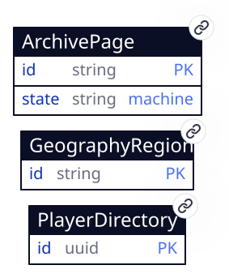
PlayerDirectory; country and continent options from GeographyRegion. Search, position, country, continent and rating/name order apply before LIMIT 40.
Only the current tab search and pagination state in ArchivePage.
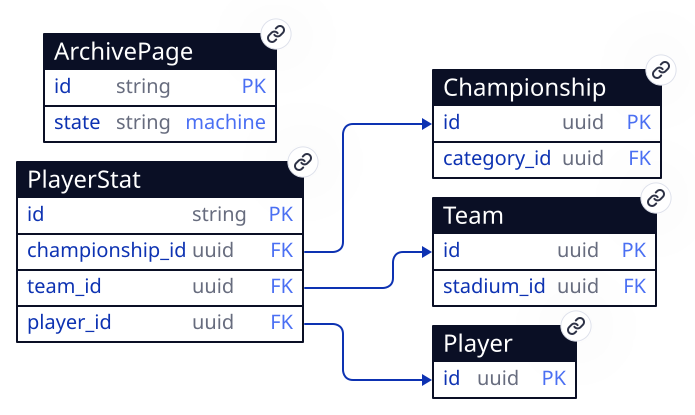
PlayerStat embeds Player, Team and Championship. Search, minimum minutes and sort apply before LIMIT 40; the filtered totals aggregate every matching row.
Only the current tab search and pagination state in ArchivePage.
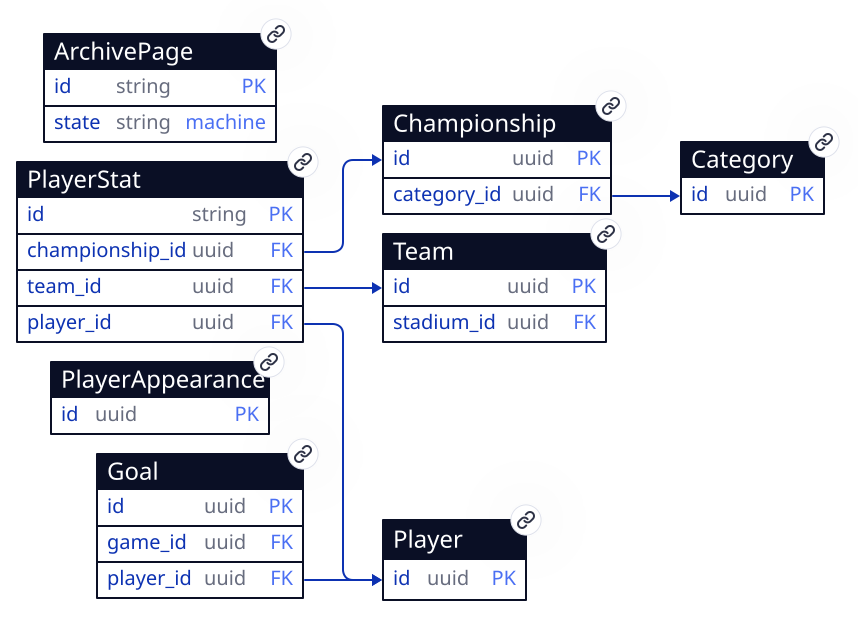
PlayerStat selected by player, team and championship slugs; PlayerAppearance restricted to the same player/team/championship, with status/category filters and bounded pagination.
Only the current tab search and pagination state in ArchivePage.
Convert the native numeric control to a non-negative integer threshold; clearing the control selects zero minutes.
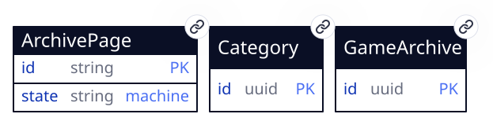
GameArchive, filtered before LIMIT 40 by played status, category, ISO week and round. Upcoming fixtures ascend by date; results descend.
ArchivePage tab controls only.
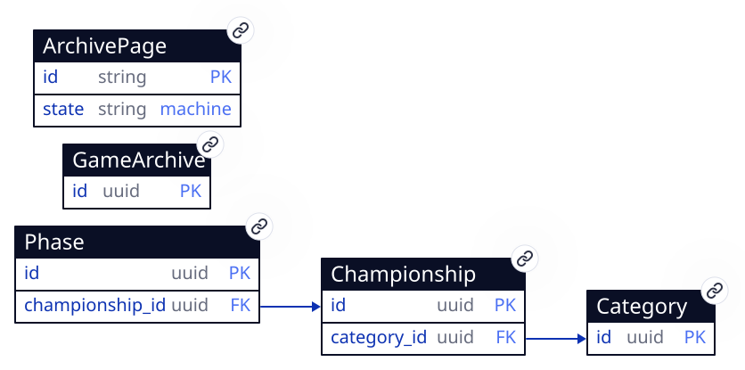
GameArchive selected by championship, then filtered by phase, status, category, ISO week and round before LIMIT 40.
ArchivePage tab controls only.
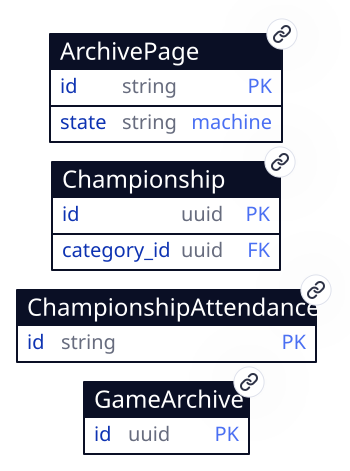
ChampionshipAttendance aggregates home attendance by team; GameArchive lists known attendance in descending order. Unknown attendance is excluded; zero attendance is retained.
ArchivePage tab controls only.
A selected calendar date names its ISO Monday; clearing restores every week.
A positive whole round number narrows the archive; clearing restores every round.
| 1 | id | uuid | pk | = gen_random_uuid() | pk; default gen_random_uuid() |
| 2 | app_user_id | uuid | → app_user | = auth_uid() | → AppUser; default auth_uid(); the private owner |
| 3 | target_player_id | uuid | the player retained | ||
| 4 | source_player_id | uuid | the duplicate removed |
the first column is the field's ordinal, which a diff keys on · pk primary key · → references · ◇ unique · ≡ indexed · ○ nullable · a rule or default, then the author's note
created_by, updated_by → app_user, stamped by the platform on every write; not the author’s.
An editor-owned command that folds one duplicate player into the chosen player atomically. It preserves the target biography, fills only missing target facts from the source, moves registrations, appearances and goals, removes the source, and is immutable after creation.
| field | type | constraint | notes |
|---|---|---|---|
| id | uuid | pk; default gen_random_uuid() | |
| app_user_id | uuid | → AppUser; default auth_uid(); the private owner | |
| target_player_id | uuid | the player retained | |
| source_player_id | uuid | the duplicate removed | |
| created_at | timestamp | default now() |
Row invariant: this.target_player_id != this.source_player_id — a player is never merged into itself.
| 1 | id | string | pk | pk | |
| 2 | state | string | machine | this == 'choosing' | default 'choosing' |
| 3 | q | string | this.size() <= 80 | default ''; preserves what the editor typed | |
| 4 | q_key | string | this.size() <= 160 | default ''; folded server-search predicate | |
| 5 | selected_id | uuid | ○ | optional | |
| 6 | home_score | int32 | ○ | this >= 0 && this < 100 | optional |
| 7 | away_score | int32 | ○ | this >= 0 && this < 100 | optional |
| 8 | played | bool | = false | default false | |
| 9 | excluded_id | uuid | ○ | optional; prevents choosing the merge target as its source |
the first column is the field's ordinal, which a diff keys on · pk primary key · → references · ◇ unique · ≡ indexed · ○ nullable · a rule or default, then the author's note
created_by, updated_by → app_user, stamped by the platform on every write; not the author’s.
One native-form choice or paired-score draft held by the tab. Search text and its folded predicate remain separate, selected references retain values outside the bounded forty-row result, and the paired scores derive whether a game is played.
| field | type | constraint | notes |
|---|---|---|---|
| id | string | pk | |
| state | string | this == 'choosing' | default 'choosing' |
| q | string | this.size() <= 80 | default ''; preserves what the editor typed |
| q_key | string | this.size() <= 160 | default ''; folded server-search predicate |
| selected_id | uuid | optional | |
| home_score | int32 | this >= 0 && this < 100 | optional |
| away_score | int32 | this >= 0 && this < 100 | optional |
| played | bool | default false | |
| excluded_id | uuid | optional; prevents choosing the merge target as its source |
Everyday editing oracle. The original Rails administration establishes the fields and relationships editors can maintain: teams, players, stadiums, referees and games, plus goals, squads and registrations. These routes retain the accepted GolAberto IR chrome, olive palette, compact field groups, ordinary links and dark twin. Native CRUD forms expose only source fields; server policy remains the authority. Reference controls preserve the selected row beside a bounded search, inline creation covers the small related records Rails allowed during editing, dependency errors preserve history, and player merge is a separate confirmed command.
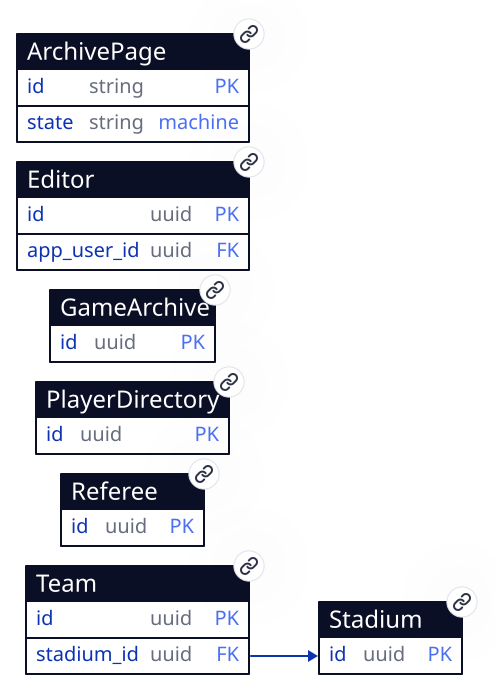
Reads the current account’s Editor grant; its absence keeps every editing link and mutation out of the document.
Mutations: none. This is the gated directory for the fourteen ordinary editing routes. Forms use the terminal’s native create, update and delete actions; refused and failed writes retain the typed values.
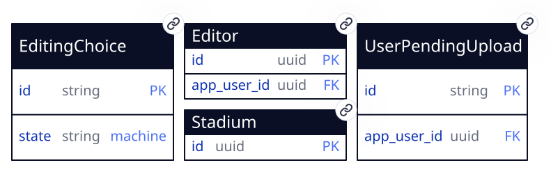
Reads the private Editor grant and bounded Stadium choices.
Mutations: creates a Team; its nested ordinary form may create a Stadium. Forms use the terminal’s native create, update and delete actions; refused and failed writes retain the typed values.
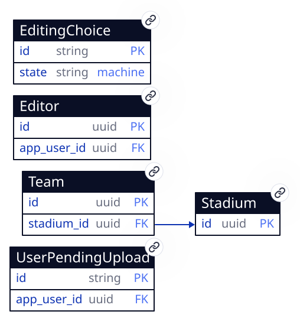
Reads the Editor grant, one Team by slug and bounded Stadium choices while retaining the selected stadium.
Mutations: updates or deletes the Team, and may create a Stadium inline. A dependent archive row refuses deletion. Forms use the terminal’s native create, update and delete actions; refused and failed writes retain the typed values.
Reads the private Editor grant.
Mutations: creates a Player through ordinary native CRUD. Forms use the terminal’s native create, update and delete actions; refused and failed writes retain the typed values.
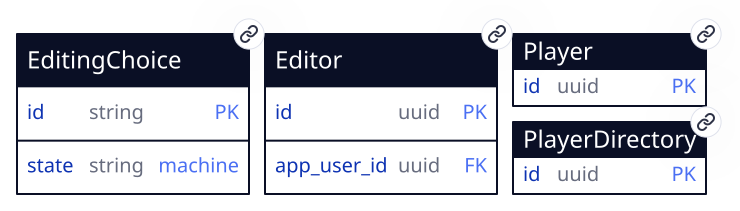
Reads the Editor grant, one Player by slug and bounded PlayerDirectory choices excluding the target.
Mutations: updates or deletes the Player, or creates one immutable PlayerMerge command after confirmation. Forms use the terminal’s native create, update and delete actions; refused and failed writes retain the typed values.
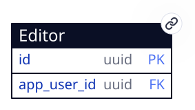
Reads the private Editor grant.
Mutations: creates a Stadium through ordinary native CRUD. Forms use the terminal’s native create, update and delete actions; refused and failed writes retain the typed values.
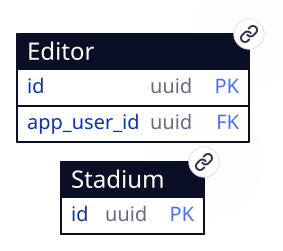
Reads the Editor grant and one Stadium by slug.
Mutations: updates or deletes the Stadium; a game or team using it refuses deletion. Forms use the terminal’s native create, update and delete actions; refused and failed writes retain the typed values.

Reads the private Editor grant.
Mutations: creates a Referee through ordinary native CRUD. Forms use the terminal’s native create, update and delete actions; refused and failed writes retain the typed values.
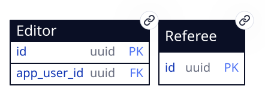
Reads the Editor grant and one Referee by slug.
Mutations: updates or deletes the Referee; a game using the referee refuses deletion. Forms use the terminal’s native create, update and delete actions; refused and failed writes retain the typed values.
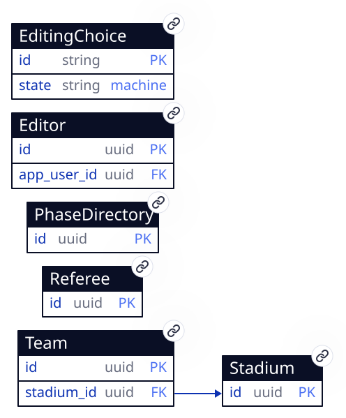
Reads the Editor grant and bounded Phase, Team, Stadium and Referee choices.
Mutations: creates a Game; paired scores derive played. Stadiums and referees may be created inline. Forms use the terminal’s native create, update and delete actions; refused and failed writes retain the typed values.
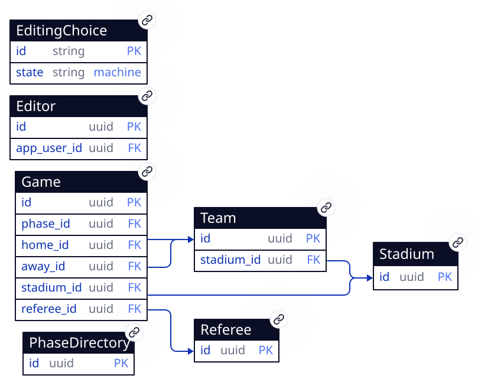
Reads the Editor grant, one Game by slug and bounded phase, team, stadium and referee choices while retaining every selection.
Mutations: updates or deletes the Game; paired scores derive played. Links open its goals and squads. Forms use the terminal’s native create, update and delete actions; refused and failed writes retain the typed values.
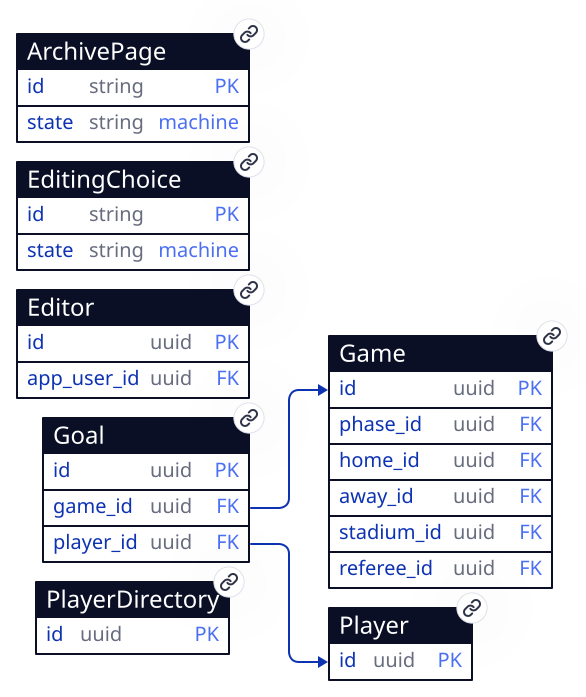
Reads the Editor grant, one Game by slug, its Goal rows and bounded player choices.
Mutations: creates, updates or deletes a Goal; a Player may be created inline. Forms use the terminal’s native create, update and delete actions; refused and failed writes retain the typed values.
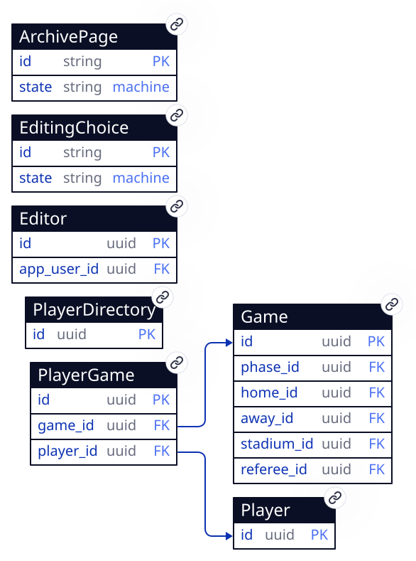
Reads the Editor grant, one Game by slug, its PlayerGame rows and bounded player choices.
Mutations: creates, updates or deletes a PlayerGame; a Player may be created inline. Forms use the terminal’s native create, update and delete actions; refused and failed writes retain the typed values.
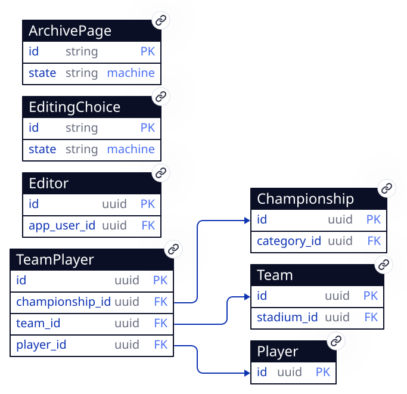
Reads the Editor grant, one Player by slug, its TeamPlayer rows and bounded championship and team choices.
Mutations: creates, updates or deletes a TeamPlayer. Removal cleans only that player’s events for the selected team and championship. Forms use the terminal’s native create, update and delete actions; refused and failed writes retain the typed values.
A pure score-input handler sets played true exactly when the edited score and the other side’s draft score are both whole numbers, including zero; clearing either score sets it false. shell/handlers/editing-played.js.
An editor can open all fourteen routes; create and correct teams, players, stadiums, referees and games; maintain goals, squads and registrations; preserve selected references outside a bounded search; create the supported related records inline; and merge a confirmed duplicate player once. Paired 0–0 scores submit as played, an unknown score submits as unplayed, and successful source writes carry immutable creator and current-editor attribution.
Without a private Editor grant every editing route contains no source mutation. Guests and ordinary accounts are refused by the store even if they issue a write directly; invalid, dependent, or unavailable writes keep the editor’s typed values and explain the refusal, while ordinary deletion never cascades archive history.
| 1 | id | uuid | pk | = gen_random_uuid() | pk; default gen_random_uuid() |
| 2 | app_user_id | uuid | → app_user | = auth_uid() | → AppUser; default auth_uid(); private owner |
| 3 | source_phase_id | uuid | the phase whose structure is copied | ||
| 4 | target_championship_id | uuid | = gen_random_uuid() | default gen_random_uuid(); generated target championship | |
| 5 | target_phase_id | uuid | = gen_random_uuid() | default gen_random_uuid(); generated target phase | |
| 6 | name | string | this.size() > 0 && this.size() <= 120 | new championship name | |
| 7 | begins | date | new championship start | ||
| 8 | ends | date | new championship end |
the first column is the field's ordinal, which a diff keys on · pk primary key · → references · ◇ unique · ≡ indexed · ○ nullable · a rule or default, then the author's note
created_by, updated_by → app_user, stamped by the platform on every write; not the author’s.
An immutable editor-owned command that creates a new championship and one phase from an existing phase. PostgreSQL generates both target identifiers, fixes the cloned phase at display position 1, copies championship scoring and display rules plus phase tiebreaks, bonuses, groups, zones and team adjustments, and leaves games and player registrations in the source championship.
| field | type | constraint | notes |
|---|---|---|---|
| id | uuid | pk; default gen_random_uuid() | |
| app_user_id | uuid | → AppUser; default auth_uid(); private owner | |
| source_phase_id | uuid | the phase whose structure is copied | |
| target_championship_id | uuid | default gen_random_uuid(); generated target championship | |
| target_phase_id | uuid | default gen_random_uuid(); generated target phase | |
| name | string | this.size() > 0 && this.size() <= 120 | new championship name |
| begins | date | new championship start | |
| ends | date | new championship end | |
| created_at | timestamp | default now() |
Row invariant: this.ends >= this.begins.
Competition administration oracle. The original Rails administration defines the editable championship, phase, group, membership and zone relationships. The accepted native forms keep those relationships explicit, allow overlapping and sparse classification zones, preserve organiser point adjustments and tiebreak bias, and use one confirmed command for Rails’ “copy phase to new championship” action. The clone deliberately contains no games or player registrations; its sole phase begins at position 1, matching Rails order_by: 1. A bounded private command read resolves the generated championship through the ordinary Championship entity and offers its edit route, preserving Rails’ post-clone navigation without a new client event.
Phase.scrape_url and Phase.sofascore_tournament_ids configure Rails’ GameDataScrapeService and are copied by the Rails clone. This app has no scraper command, service or reader for either value, and its archive promotion currently discards both source columns. They remain outside this administration contract until that scraper domain is implemented; presenting inert controls would imply behavior the app does not provide.
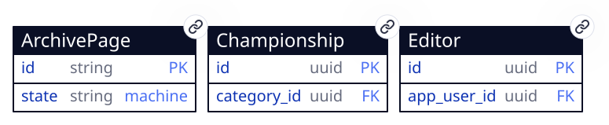
Editor and Championship. Normalized search uses the deterministic search key with LIKE; search and pagination apply before the bounded forty-row championship catalog.
Only tab search and pagination state; links open ordinary create and edit routes.
Complete state set: loading, populated, gone, validation-error, network-error, form-submit, success and populated-dark. Grant, missing, save, refused and night paths use the existing accept-everyday-editing, accept-editing-grant and accept-dark acceptance contracts.
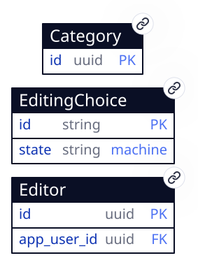
Editor and the bounded Category choice.
Creates one Championship with scoring, region, display and date fields; server policy stamps attribution.
Complete state set: loading, populated, gone, validation-error, network-error, form-submit, success and populated-dark. Grant, missing, save, refused and night paths use the existing accept-everyday-editing, accept-editing-grant and accept-dark acceptance contracts.
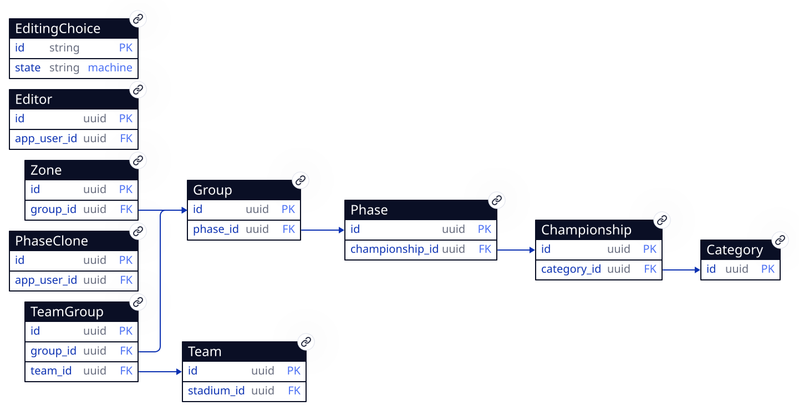
Editor; one Championship by slug; Category, Phase, Group, TeamGroup with Team, and Zone rows in stable order; the latest editor-owned PhaseClone command and its generated Championship are each bounded to one row.
Updates Championship; creates, updates or deletes Phase, Group, TeamGroup and Zone; PhaseClone copies one phase into a new championship. Dependent archive records refuse destructive deletion.
Complete state set: loading, populated, gone, validation-error, network-error, form-submit, success and populated-dark. Grant, missing, save, refused and night paths use the existing accept-everyday-editing, accept-editing-grant and accept-dark acceptance contracts.
An editor can create a championship, find it with an uppercase normalized directory search, change its scoring rules, create a phase with explicit tiebreak order and bonus rule, add a group, preserve a team’s point adjustment and tiebreak bias, create overlapping sparse zones, and clone the structure into generated target identifiers. The clone has one phase at position 1 with copied groups, zones and members and no games or player registrations; the resulting link opens that generated championship in its ordinary edit route.
Guests and ordinary accounts receive no competition mutation forms. Direct source writes still require the existing private Editor grant, attribution is immutable from the client, invalid sparse positions fail, and dependent archive records refuse destructive deletion.
| 1 | id | string | pk | pk; stable target, side and source-game key | |
| 2 | target_game_id | uuid | target game | ||
| 3 | team_id | uuid | side team | ||
| 4 | side | string | home or away context | ||
| 5 | game_id | uuid | source game | ||
| 6 | game_slug | string | source route | ||
| 7 | day | date | source day | ||
| 8 | day_display | string | localized source day | ||
| 9 | kickoff | timestamp | ○ | optional | |
| 10 | kickoff_local | string | localized kickoff | ||
| 11 | championship_id | uuid | source championship | ||
| 12 | championship_name | string | source championship | ||
| 13 | championship_slug | string | source route | ||
| 14 | show_country | bool | badge context | ||
| 15 | home_id | uuid | source home team | ||
| 16 | home_name | string | source home team | ||
| 17 | home_country | string | source home country | ||
| 18 | home_slug | string | source home route | ||
| 19 | away_id | uuid | source away team | ||
| 20 | away_name | string | source away team | ||
| 21 | away_country | string | source away country | ||
| 22 | away_slug | string | source away route | ||
| 23 | home_score | int32 | regulation score | ||
| 24 | away_score | int32 | regulation score | ||
| 25 | home_aet | int32 | ○ | optional | |
| 26 | away_aet | int32 | ○ | optional | |
| 27 | home_pen | int32 | ○ | optional | |
| 28 | away_pen | int32 | ○ | optional | |
| 29 | result | string | this in ['w', 'd', 'l'] | team-oriented regulation result |
the first column is the field's ordinal, which a diff keys on · pk primary key · → references · ◇ unique · ≡ indexed · ○ nullable · a rule or default, then the author's note
created_by, updated_by → app_user, stamped by the platform on every write; not the author’s.
Five preceding played results per side, oriented to that team and displayed in chronological order.
| field | type | constraint | notes |
|---|---|---|---|
| id | string | pk; stable target, side and source-game key | |
| target_game_id | uuid | target game | |
| team_id | uuid | side team | |
| side | string | home or away context | |
| game_id | uuid | source game | |
| game_slug | string | source route | |
| day | date | source day | |
| day_display | string | localized source day | |
| kickoff | timestamp | optional | |
| kickoff_local | string | localized kickoff | |
| championship_id | uuid | source championship | |
| championship_name | string | source championship | |
| championship_slug | string | source route | |
| show_country | bool | badge context | |
| home_id | uuid | source home team | |
| home_name | string | source home team | |
| home_country | string | source home country | |
| home_slug | string | source home route | |
| away_id | uuid | source away team | |
| away_name | string | source away team | |
| away_country | string | source away country | |
| away_slug | string | source away route | |
| home_score | int32 | regulation score | |
| away_score | int32 | regulation score | |
| home_aet | int32 | optional | |
| away_aet | int32 | optional | |
| home_pen | int32 | optional | |
| away_pen | int32 | optional | |
| result | string | this in ['w', 'd', 'l'] | team-oriented regulation result |
| 1 | id | string | pk | pk; stable target and source-game key | |
| 2 | target_game_id | uuid | target game | ||
| 3 | game_id | uuid | source game | ||
| 4 | game_slug | string | source route | ||
| 5 | day | date | source day | ||
| 6 | day_display | string | localized source day | ||
| 7 | kickoff | timestamp | ○ | optional | |
| 8 | kickoff_local | string | localized kickoff | ||
| 9 | championship_id | uuid | source championship | ||
| 10 | championship_name | string | source championship | ||
| 11 | championship_slug | string | source route | ||
| 12 | category_id | uuid | ○ | optional professional category | |
| 13 | show_country | bool | badge context | ||
| 14 | home_id | uuid | source home team | ||
| 15 | home_name | string | source home team | ||
| 16 | home_country | string | source home country | ||
| 17 | home_slug | string | source home route | ||
| 18 | away_id | uuid | source away team | ||
| 19 | away_name | string | source away team | ||
| 20 | away_country | string | source away country | ||
| 21 | away_slug | string | source away route | ||
| 22 | home_score | int32 | regulation score | ||
| 23 | away_score | int32 | regulation score | ||
| 24 | home_aet | int32 | ○ | optional | |
| 25 | away_aet | int32 | ○ | optional | |
| 26 | home_pen | int32 | ○ | optional | |
| 27 | away_pen | int32 | ○ | optional | |
| 28 | home_logo_key | string | ○ | optional; current uploaded team crest | |
| 29 | away_logo_key | string | ○ | optional; current uploaded team crest |
the first column is the field's ordinal, which a diff keys on · pk primary key · → references · ◇ unique · ≡ indexed · ○ nullable · a rule or default, then the author's note
created_by, updated_by → app_user, stamped by the platform on every write; not the author’s.
Five prior meetings in the target game’s category, strictly before its civil day.
| field | type | constraint | notes |
|---|---|---|---|
| id | string | pk; stable target and source-game key | |
| target_game_id | uuid | target game | |
| game_id | uuid | source game | |
| game_slug | string | source route | |
| day | date | source day | |
| day_display | string | localized source day | |
| kickoff | timestamp | optional | |
| kickoff_local | string | localized kickoff | |
| championship_id | uuid | source championship | |
| championship_name | string | source championship | |
| championship_slug | string | source route | |
| category_id | uuid | optional professional category | |
| show_country | bool | badge context | |
| home_id | uuid | source home team | |
| home_name | string | source home team | |
| home_country | string | source home country | |
| home_slug | string | source home route | |
| away_id | uuid | source away team | |
| away_name | string | source away team | |
| away_country | string | source away country | |
| away_slug | string | source away route | |
| home_score | int32 | regulation score | |
| away_score | int32 | regulation score | |
| home_aet | int32 | optional | |
| away_aet | int32 | optional | |
| home_pen | int32 | optional | |
| away_pen | int32 | optional | |
| home_logo_key | string | optional; current uploaded team crest | |
| away_logo_key | string | optional; current uploaded team crest |
| 1 | id | uuid | pk | pk; appearance | |
| 2 | game_id | uuid | game | ||
| 3 | player_id | uuid | player | ||
| 4 | side | string | lineup side | ||
| 5 | on_minute | int32 | minute on | ||
| 6 | off_minute | int32 | ○ | optional minute off | |
| 7 | yellow | bool | yellow card | ||
| 8 | red | bool | red card | ||
| 9 | bench | bool | bench | ||
| 10 | player_name | string | player label | ||
| 11 | position | string | ○ | optional | |
| 12 | player_slug | string | player route | ||
| 13 | off_rating | double | ○ | optional | |
| 14 | def_rating | double | ○ | optional | |
| 15 | contribution | double | off_rating + def_rating with null as zero |
the first column is the field's ordinal, which a diff keys on · pk primary key · → references · ◇ unique · ≡ indexed · ○ nullable · a rule or default, then the author's note
created_by, updated_by → app_user, stamped by the platform on every write; not the author’s.
Read-only lineup rows with the Rails contribution projection.
| field | type | constraint | notes |
|---|---|---|---|
| id | uuid | pk; appearance | |
| game_id | uuid | game | |
| player_id | uuid | player | |
| side | string | lineup side | |
| on_minute | int32 | minute on | |
| off_minute | int32 | optional minute off | |
| yellow | bool | yellow card | |
| red | bool | red card | |
| bench | bool | bench | |
| player_name | string | player label | |
| position | string | optional | |
| player_slug | string | player route | |
| off_rating | double | optional | |
| def_rating | double | optional | |
| contribution | double | off_rating + def_rating with null as zero |
| 1 | id | uuid | pk | pk; game | |
| 2 | home_id | uuid | home team | ||
| 3 | home_name | string | home label | ||
| 4 | home_latitude | double | ○ | optional | |
| 5 | home_longitude | double | ○ | optional | |
| 6 | away_id | uuid | away team | ||
| 7 | away_name | string | away label | ||
| 8 | away_latitude | double | ○ | optional | |
| 9 | away_longitude | double | ○ | optional | |
| 10 | distance_km | double | ○ | optional haversine distance | |
| 11 | map_embed_url | string | ○ | optional fixed-origin OSM export URL |
the first column is the field's ordinal, which a diff keys on · pk primary key · → references · ◇ unique · ≡ indexed · ○ nullable · a rule or default, then the author's note
created_by, updated_by → app_user, stamped by the platform on every write; not the author’s.
One request-time team-distance and bounded OpenStreetMap embed row per game.
| field | type | constraint | notes |
|---|---|---|---|
| id | uuid | pk; game | |
| home_id | uuid | home team | |
| home_name | string | home label | |
| home_latitude | double | optional | |
| home_longitude | double | optional | |
| away_id | uuid | away team | |
| away_name | string | away label | |
| away_latitude | double | optional | |
| away_longitude | double | optional | |
| distance_km | double | optional haversine distance | |
| map_embed_url | string | optional fixed-origin OSM export URL |
Match context boundary. The Rails oracle takes five prior played results for each side, five prior head-to-head games in the same nullable category before the target day, regulation scores for form, and reverses the descending form query for chronological display. Lineup contribution is offense plus defense with absent components treated as zero. PostgreSQL owns date/category selection and haversine distance. A valid coordinate pair yields a lazy sandboxed raw-screen OpenStreetMap export iframe with attribution plus a separate validated directions link; no API key or renderer iframe capability is introduced.
The game page bounds each team’s preceding form and same-category meetings at five, orders them like Rails, sums lineup contribution, computes distance only from two valid coordinate pairs, and exposes an attributed fixed-origin map embed plus a validated external route link. Missing coordinates are explicit; the pure renderer cannot emit an iframe.
| 1 | id | uuid | pk→ game | pk; → Game | |
| 2 | game_id | uuid | → game | → Game | |
| 3 | home_name | string | home series label | ||
| 4 | away_name | string | away series label | ||
| 5 | rating_status | string | this in ['available', 'missing-rating', 'ambiguous-rating'] | missing or duplicate latest ratings never fall back to current data | |
| 6 | timeline_status | string | this in ['available', 'missing-rating', 'ambiguous-rating', 'unknown-event-minute', 'event-limit'] | unknown timing or an over-limit event set suppresses the timeline | |
| 7 | payload_json | string | historical powers, rating dates and bounded event arrays |
the first column is the field's ordinal, which a diff keys on · pk primary key · → references · ◇ unique · ≡ indexed · ○ nullable · a rule or default, then the author's note
created_by, updated_by → app_user, stamped by the platform on every write; not the author’s.
One read-only row per game. PostgreSQL selects each side’s latest unambiguous TeamRating strictly before the game’s kickoff, or before the start of its civil day when kickoff is unknown. It calculates the two model powers and serializes at most one hundred goals and one hundred red cards for the pure renderer. No current Team or TeamDirectory rating participates.
| field | type | constraint | notes |
|---|---|---|---|
| id | uuid | pk; → Game | |
| game_id | uuid | → Game | |
| home_name | string | home series label | |
| away_name | string | away series label | |
| rating_status | string | this in ['available', 'missing-rating', 'ambiguous-rating'] | missing or duplicate latest ratings never fall back to current data |
| timeline_status | string | this in ['available', 'missing-rating', 'ambiguous-rating', 'unknown-event-minute', 'event-limit'] | unknown timing or an over-limit event set suppresses the timeline |
| payload_json | string | historical powers, rating dates and bounded event arrays |
| 1 | id | string | pk | pk; the game id | |
| 2 | state | string | machine | this == 'ready' | default ready |
| 3 | minute | string | this == '' || this.matches('^(0|[1-9]|[1-9][0-9]|1[0-2][0-9]|130)$') | selected timeline minute; default 0 | |
| 4 | added_time | string | this == '' || this.matches('^(0|[1-9]|[1-3][0-9]|40)$') | default 5 | |
| 5 | event_sequence | int32 | this >= 0 | monotonic tab-local event identity source | |
| 6 | next_event_id | string | this.size() <= 80 | post-assignment create key | |
| 7 | event_count | int32 | this >= 0 && this <= 20 | bounded add guard and fold result | |
| 8 | events_json | string | this.size() <= 4000 | ordered pure-renderer projection | |
| 9 | payload_json | string | = '' | default: ''; the game's computed probabilities, folded from MatchProbability; empty until they arrive | |
| 10 | home_name | string | = '' | default: ''; folded from MatchProbability | |
| 11 | away_name | string | = '' | default: ''; folded from MatchProbability |
the first column is the field's ordinal, which a diff keys on · pk primary key · → references · ◇ unique · ≡ indexed · ○ nullable · a rule or default, then the author's note
created_by, updated_by → app_user, stamped by the platform on every write; not the author’s.
The reader’s deterministic what-if controls and bounded projection of its hypothetical event rows. It stores no clock, network state or source mutation.
| field | type | constraint | notes |
|---|---|---|---|
| id | string | pk; the game id | |
| state | string | this == 'ready' | default ready |
| minute | string | empty or a whole number from 0 to 130 | selected timeline minute; default 0 |
| added_time | string | empty or a whole number from 0 to 40 | default 5 |
| event_sequence | int32 | this >= 0 | monotonic tab-local event identity source |
| next_event_id | string | this.size() <= 80 | post-assignment create key |
| event_count | int32 | this >= 0 && this <= 20 | bounded add guard and fold result |
| events_json | string | this.size() <= 4000 | ordered pure-renderer projection |
| payload_json | string | default: ''; the game's computed probabilities, folded from MatchProbability; empty until they arrive | |
| home_name | string | default: ''; folded from MatchProbability | |
| away_name | string | default: ''; folded from MatchProbability |
| 1 | id | string | pk | this.size() > 0 && this.size() <= 80 | pk; deterministic game and sequence key |
| 2 | game_id | uuid | game identity | ||
| 3 | state | string | machine | this == 'ready' | default ready |
| 4 | sequence | int32 | this >= 1 | stable display and projection order | |
| 5 | kind | string | this in ['goal', 'red_card'] | chosen by the add affordance | |
| 6 | side | string | this in ['home', 'away'] | individually editable; default home | |
| 7 | minute | int32 | this >= 0 && this <= 130 | individually editable; default 0 |
the first column is the field's ordinal, which a diff keys on · pk primary key · → references · ◇ unique · ≡ indexed · ○ nullable · a rule or default, then the author's note
created_by, updated_by → app_user, stamped by the platform on every write; not the author’s.
One independently editable hypothetical goal or red card. Native controls update side and minute on this row; removal deletes only this row.
| field | type | constraint | notes |
|---|---|---|---|
| id | string | 1–80 characters | pk; deterministic game and sequence key |
| game_id | uuid | game identity | |
| state | string | this == 'ready' | default ready |
| sequence | int32 | this >= 1 | stable display and projection order |
| kind | string | this in ['goal', 'red_card'] | chosen by the add affordance |
| side | string | this in ['home', 'away'] | individually editable; default home |
| minute | int32 | this >= 0 && this <= 130 | individually editable; default 0 |
Bounds the scenario at twenty events and derives monotonic event keys from the tab row without a clock or random source.
Accepts only a side, minute or remove gesture from the event row’s authored native control and preserves unrelated fields.
Validates, orders and projects at most twenty event rows into the scenario renderer payload.
Stores the scenario row from its fallback on first paint and keeps the game's computed probabilities and team names on it, so the chart renders the scenario and its baseline from one row. A machine row exists only once stored, and a nested row cannot read its parent's fields.
Historical probability boundary. A match is valued only from ratings available before that match. A dated rating is treated as midnight UTC: it must precede the timestamped kickoff, while a match without kickoff excludes every rating on its own day. The database owns this temporal selection and duplicate detection. Jessie receives finite powers and a bounded event snapshot, implements the accepted Rails Poisson equations without normalization, and owns no date parser, clock, import or ambient capability.
The game page uses only the latest unambiguous rating for each side strictly before kickoff or day, matches the Rails home-field, Poisson, goal and red-card vectors, and renders a deterministic no-clock minute chart with localized accessible point descriptions. Each hypothetical goal and red card can be added, removed, reassigned and retimed independently. Missing ratings, unknown source-event minutes and more than one hundred source events never fabricate a graph; the twenty-event scenario remains bounded in the tab. The minute chart stacks the home-win, draw and away-win areas from the baseline, using raw probabilities as the original chart does. Hover anywhere within the plot to show the nearest minute, the home–away score at that minute, all three individual probabilities in top-to-bottom stack order (away, draw, home) and a vertical guide; keyboard focus on a minute point shows the same details. Minute ticks run along the bottom through the selected final minute. Above each goal, the updated home–away score is shown; red cards use a red card marker. Nearby event labels occupy separate rows with leaders to preserve every event without overlap, including simultaneous goals and cards. A single tooltip follows the pointer on both axes, flips beside it near the edges and remains within the chart. Keyboard focus restores its authored position. The minute and score include recorded and hypothetical goals at or before the inspected minute; the card respects the selected locale. Point markers appear on focus; other points cannot paint over the inspected tooltip. The chart loads its shared axis and grid styles on the match page; axis labels meet 4.5:1 contrast and probability lines, event markers and the focused point outline meet 3:1 against the page in both light and dark appearances.
Accepts only its chart row’s literal-event control IDs, parses an empty boundary or a whole final position from 1 through 250, and preserves the current value for unrelated gestures.
| 1 | id | string | pk | pk | |
| 2 | record_id | uuid | |||
| 3 | kind | string | this in ['profile','comment','team_comment'] | ||
| 4 | biography_id | uuid | ○ | optional | |
| 5 | avatar_id | uuid | ○ | optional; existing avatar record, distinguishing native create and update |
the first column is the field's ordinal, which a diff keys on · pk primary key · → references · ◇ unique · ≡ indexed · ○ nullable · a rule or default, then the author's note
created_by, updated_by → app_user, stamped by the platform on every write; not the author’s.
A read-only eligibility projection for the signed-in account’s profile and comments. Guests receive no rows. A composite ID distinguishes the three namespaces, record_id identifies the actual source row, and biography_id selects create or update. Server mutation policies remain authoritative.
| field | type | constraint | notes |
|---|---|---|---|
| id | string | pk | |
| record_id | uuid | ||
| kind | string | this in ['profile','comment','team_comment'] | |
| biography_id | uuid | optional | |
| avatar_id | uuid | optional; existing avatar record, distinguishing native create and update |
| 1 | id | uuid | pk | = gen_random_uuid() | pk; default gen_random_uuid() |
| 2 | app_user_id | uuid | → app_user◇ | = auth_uid() | unique; references app_user; default auth_uid() |
| 3 | display_name | string | ○ | this.size() <= 100 | optional |
| 4 | location | string | ○ | this.size() <= 100 | optional |
| 5 | about_me | string | ○ | this.size() <= 2000 | optional |
the first column is the field's ordinal, which a diff keys on · pk primary key · → references · ◇ unique · ≡ indexed · ○ nullable · a rule or default, then the author's note
created_by, updated_by → app_user, stamped by the platform on every write; not the author’s.
Optional public biography owned by its signed-in account. Only display_name, location and about_me are editable; ownership and updated_at come from the database.
| field | type | constraint | notes |
|---|---|---|---|
| id | uuid | pk; default gen_random_uuid() | |
| app_user_id | uuid | unique; references app_user; default auth_uid() | |
| display_name | string | this.size() <= 100 | optional |
| location | string | this.size() <= 100 | optional |
| about_me | string | this.size() <= 2000 | optional |
| updated_at | timestamp | default now() |
| 1 | id | uuid | pk | pk | |
| 2 | handle | string | |||
| 3 | display_name | string | |||
| 4 | location | string | ○ | optional | |
| 5 | about_me | string | ○ | optional | |
| 6 | joined_at | timestamp | |||
| 7 | biography_id | uuid | → user_biography○ | optional | |
| 8 | comment_count | int64 | |||
| 9 | edit_count | int64 | |||
| 10 | last_edit_at | timestamp | ○ | optional | |
| 11 | search_key | string | |||
| 12 | joined_on | string | the account's first day on Brasília's calendar, DD/MM/YYYY as the archive prints dates | ||
| 13 | avatar_key | string | ○ |
the first column is the field's ordinal, which a diff keys on · pk primary key · → references · ◇ unique · ≡ indexed · ○ nullable · a rule or default, then the author's note
created_by, updated_by → app_user, stamped by the platform on every write; not the author’s.
Public account bylines, optional biographies, comment and edit counts; the counts are kept per account as comments and edits are written. Email, login secrets and private account fields never enter this view.
| field | type | constraint | notes |
|---|---|---|---|
| id | uuid | pk | |
| handle | string | ||
| display_name | string | ||
| location | string | optional | |
| about_me | string | optional | |
| joined_at | timestamp | ||
| biography_id | uuid | optional | |
| comment_count | int64 | ||
| edit_count | int64 | ||
| last_edit_at | timestamp | optional | |
| search_key | string | ||
| joined_on | string | the account's first day on Brasília's calendar, DD/MM/YYYY as the archive prints dates |
| 1 | id | uuid | pk | = gen_random_uuid() | pk; default gen_random_uuid() |
| 2 | game_id | uuid | |||
| 3 | version | int32 | this > 0 | ||
| 4 | actor_id | uuid | ○ | optional | |
| 5 | actor_handle | string | ○ | optional | |
| 6 | game_slug | string | ○ | optional | |
| 7 | game_day | date | ○ | optional | |
| 8 | home_name | string | |||
| 9 | away_name | string | |||
| 10 | championship_name | string | |||
| 11 | changes_json | string |
the first column is the field's ordinal, which a diff keys on · pk primary key · → references · ◇ unique · ≡ indexed · ○ nullable · a rule or default, then the author's note
created_by, updated_by → app_user, stamped by the platform on every write; not the author’s.
Append-only game field diffs with immutable actor and game snapshots. Clients cannot insert, update or delete history. Historical names never imply authenticated ownership.
| field | type | constraint | notes |
|---|---|---|---|
| id | uuid | pk; default gen_random_uuid() | |
| game_id | uuid | ||
| version | int32 | this > 0 | |
| actor_id | uuid | optional | |
| actor_handle | string | optional | |
| game_slug | string | optional | |
| game_day | date | optional | |
| home_name | string | ||
| away_name | string | ||
| championship_name | string | ||
| changes_json | string | ||
| created_at | timestamp | default now() |
Community oracle. Rails user/show, user/list and user/list_edits supply public biography, activity counters and attributed game changes. Keep the accepted archive masthead, title band, compact rows, native forms and dark theme. Biographies and differences render as text. Email and account claiming remain excluded. Avatars and team logos follow the authenticated native media contract below.
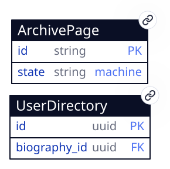
Reads UserDirectory, UserBiography, GameChange and CommunityAccess. Directory search and history use ArchivePage with a stable order, forty rows and a one-row next-page probe. CommunityAccess returns rows only for the authenticated account’s profile and comments; a guest receives none. Identity changes recreate the established authenticated store.
Native UserBiography create/update forms send only public display name, location and biography text. A signed-in author confirms native Comment or TeamComment deletion. Database ownership is authoritative. Explicit UserBiography embeds refresh the profile and eligibility after a save. GameChange has no client write surface.
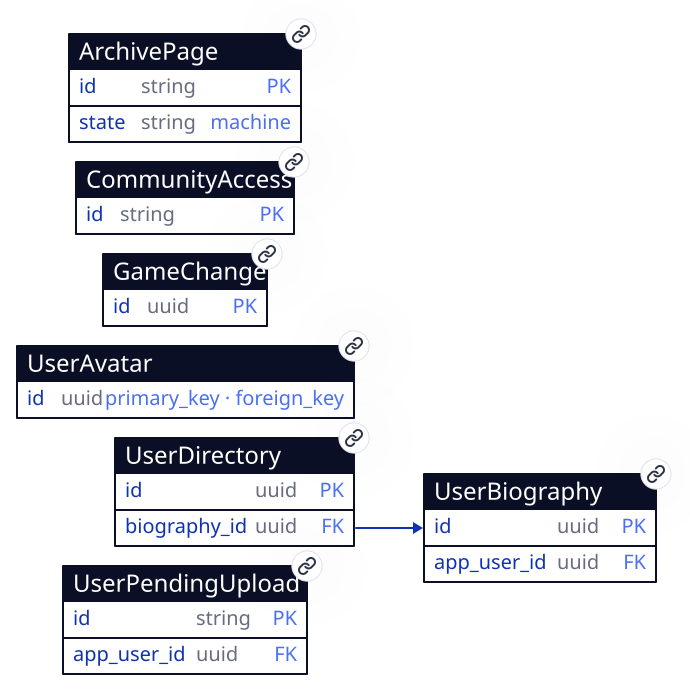
Reads UserDirectory, UserBiography, GameChange and CommunityAccess. Directory search and history use ArchivePage with a stable order, forty rows and a one-row next-page probe. CommunityAccess returns rows only for the authenticated account’s profile and comments; a guest receives none. Identity changes recreate the established authenticated store.
Native UserBiography create/update forms send only public display name, location and biography text. A signed-in author confirms native Comment or TeamComment deletion. Database ownership is authoritative. Explicit UserBiography embeds refresh the profile and eligibility after a save. GameChange has no client write surface.
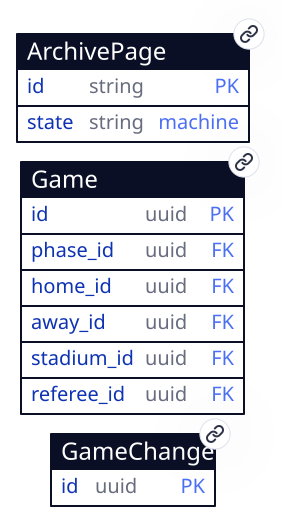
Reads UserDirectory, UserBiography, GameChange and CommunityAccess. Directory search and history use ArchivePage with a stable order, forty rows and a one-row next-page probe. CommunityAccess returns rows only for the authenticated account’s profile and comments; a guest receives none. Identity changes recreate the established authenticated store.
Native UserBiography create/update forms send only public display name, location and biography text. A signed-in author confirms native Comment or TeamComment deletion. Database ownership is authoritative. Explicit UserBiography embeds refresh the profile and eligibility after a save. GameChange has no client write surface.
Account identity stays with the passkey source. Public historical handles remain bylines. Matching a name never grants ownership. Eligibility is a read-only app view of authenticated ownership, not a new auth plane; native mutation policies remain the authority. History stores immutable actors and field snapshots independently of current accounts and games.
public biographies have counters and only their signed-in owner can create or edit them: output.persisted && output.public && output.owner_only.
guests and other accounts cannot edit a biography or delete another author's comment: output.refused && output.unchanged.
game edits retain their author and field changes across public pages: output.paginated && output.attributed && output.safe_text.
| 1 | id | uuid | pk→ app_user | = auth_uid() | pk; references AppUser; default auth_uid() |
| 2 | avatar_key | string | ○ | optional; immutable private upload key |
the first column is the field's ordinal, which a diff keys on · pk primary key · → references · ◇ unique · ≡ indexed · ○ nullable · a rule or default, then the author's note
created_by, updated_by → app_user, stamped by the platform on every write; not the author’s.
One native avatar record per account. A signed-in owner attaches an immutable upload; deleting it removes the image. No auth account permissions or handles are changed. Historical attachment bytes require a reviewed local asset export and a separate guarded promotion; SQL attachment metadata alone is not an image.
| field | type | constraint | notes |
|---|---|---|---|
| id | uuid | pk; references AppUser; default auth_uid() | |
| avatar_key | string | optional; immutable private upload key |
| 1 | id | string | pk | pk; upload key | |
| 2 | app_user_id | uuid | → app_user | references AppUser; owner stamped by the verified upload service | |
| 4 | expires_at | timestamp | database supplied |
the first column is the field's ordinal, which a diff keys on · pk primary key · → references · ◇ unique · ≡ indexed · ○ nullable · a rule or default, then the author's note
created_by, updated_by → app_user, stamped by the platform on every write; not the author’s.
Only the upload owner's unused image metadata, with ordinary native delete confirmation. Bytes remain outside the public schema. Four pending images per account, 24-hour expiry reclaimed during a later upload, and explicit refusal at the budget. Attached images are never evicted.
| field | type | constraint | notes |
|---|---|---|---|
| id | string | pk; upload key | |
| app_user_id | uuid | references AppUser; owner stamped by the verified upload service | |
| created_at | timestamp | database supplied | |
| expires_at | timestamp | database supplied |
The rclone-s3 service address is an explicit adapter to the existing generated /blobs route, which strips that prefix and forwards to port 3900. The app supplies its authenticated gateway at that address while the default blob capability remains off. There is no rclone process, imgproxy alias, raw image publication or alternate auth source. Existing GolAberto crest consumers use CloudFront directly and remain supported. The app container shares only the established database URL and JWT verification secret with the passkey service.
Avatar and team-logo controls use the existing native data-upload contract and the shared authenticated upload method. SQL checks both upload ownership and target authority in the ordinary record mutation. Failed attachments retain a bounded private pending object; cancellation is an ordinary private table delete so the existing stream confirms it. Image styles match Rails: transparent-margin crop, aspect fit and transparent square padding at 100 and 15 pixels. Every archive, list, standings and head-to-head badge reads the current Team logo through its existing embed or a request-time view. Optional background filtering and legacy remote image fetching remain outside this slice.
An owner uploads and removes an avatar; another account cannot see the controls. An editor attaches a team logo through the native form; public profile images resolve through the authenticated app blob adapter.